<title>Guía de Gestoría Creative</title>
<meta name="description" content="Guía completa de Gestoría Creative para asesorías y gestorías: cada sección del programa con capturas reales, qué hace, qué ves y qué genera.">
<link rel="icon" href="marca/gestoria-creative-icono.svg" type="image/svg+xml">
<link rel="preconnect" href="https://fonts.googleapis.com"><link rel="preconnect" href="https://fonts.gstatic.com" crossorigin><link rel="stylesheet" href="https://fonts.googleapis.com/css2?family=Figtree:wght@400;500;600;700&family=JetBrains+Mono:wght@500;600;700&family=Montserrat:wght@700;800;900&display=swap">
<style>/* Layout concept: a field manual. A dark cover cut from the app icon, then light pages where
   every screen sits in a browser frame, followed by three labelled panels:
   what it does (orange), what you see (turquoise), what it produces (ink). */
:root {
  /* Crema cálido como fondo, tarjetas casi blancas y la tinta del icono para el texto. Un solo tema, claro. */
  --ink: #15171C;          /* tinta del icono: títulos y texto */
  --ink-2: #3B3731;
  --paper: #FBF6EE;        /* crema del papel */
  --surface: #FFFDF9;      /* blanco roto de tarjetas y capturas */
  --line: #EADFD0;
  --muted: #6E665B;
  --orange: #F8841A;       /* naranja de marca: rellenos y titulares */
  --orange-text: #B4500A;  /* naranja para texto pequeño */
  --orange-soft: #FFEAD5;
  --teal: #22D3EE;         /* turquesa de marca: el punto de la G */
  --teal-text: #0B7285;
  --teal-soft: #DDF5F7;
  --cover: #FFF3E4;        /* portada, portadillas y cierre */
  --cover-fg: #15171C;
  --shadow: 0 1px 2px rgba(60,40,20,.06), 0 14px 34px -14px rgba(60,40,20,.22);

  --f-display: "Montserrat", "Arial Black", system-ui, sans-serif;
  --f-body: "Figtree", "Segoe UI", system-ui, sans-serif;
  --f-mono: "JetBrains Mono", ui-monospace, "SFMono-Regular", Menlo, monospace;

  --s-1: .25rem; --s-2: .5rem; --s-3: .75rem; --s-4: 1rem; --s-5: 1.5rem; --s-6: 2rem; --s-7: 3rem; --s-8: 4.5rem;
  --measure: 66ch;
  --wrap: 1080px;
  color-scheme: light;
}

* { box-sizing: border-box; }
body {
  margin: 0; background: var(--paper); color: var(--ink);
  font: 400 1rem/1.6 var(--f-body);
  -webkit-font-smoothing: antialiased;
}
img { max-width: 100%; display: block; }
a { color: var(--teal-text); }
:focus-visible { outline: 3px solid var(--teal); outline-offset: 2px; }
.wrap { max-width: var(--wrap); margin-inline: auto; padding-inline: max(16px, 4vw); }
h1, h2, h3 { text-wrap: balance; margin: 0; }
p { margin: 0; }

/* ---------- Brand lockup ---------- */
.lockup { display: inline-flex; align-items: center; gap: .8em; }
.lockup img { width: 3.1em; height: 3.1em; }
.wordmark { font: 900 1.15em/.9 var(--f-display); letter-spacing: .01em; text-transform: uppercase; }
.wordmark b { display: block; color: var(--orange); font-weight: 900; }

/* ---------- Cover ---------- */
.cover {
  position: relative; overflow: hidden; color: var(--cover-fg);
  background: linear-gradient(160deg, #FFF8EE 0%, var(--cover) 55%, #FDEBD6 100%);
  padding-block: var(--s-7) var(--s-8); border-bottom: 1px solid var(--line);
}
.cover::before { /* turquoise spark, echoes the dot in the G */
  content: ""; position: absolute; width: 520px; height: 520px; right: -140px; top: -180px;
  background: radial-gradient(circle, rgba(34,211,238,.20), rgba(34,211,238,0) 62%);
}
.cover::after {
  content: ""; position: absolute; width: 760px; height: 760px; left: -320px; bottom: -520px;
  background: radial-gradient(circle, rgba(248,132,26,.22), rgba(248,132,26,0) 64%);
}
.cover > .wrap { position: relative; z-index: 1; display: grid; gap: var(--s-7); }
.cover .lockup { font-size: 1.35rem; color: var(--cover-fg); }
.cover .wordmark b { color: var(--orange); }
.cover-kicker { font: 600 .78rem/1 var(--f-mono); letter-spacing: .14em; text-transform: uppercase; color: var(--teal-text); }
.cover h1 {
  font: 900 clamp(2.4rem, 6.4vw, 4.6rem)/.98 var(--f-display); letter-spacing: -.01em; text-transform: uppercase;
  max-width: 14ch;
}
.cover h1 em { font-style: normal; color: var(--orange); }
.cover-lead { font-size: clamp(1.05rem, 1.8vw, 1.25rem); color: var(--ink-2); max-width: 52ch; }
.cover-meta { display: flex; flex-wrap: wrap; gap: var(--s-2) var(--s-6); font: 500 .8rem/1.4 var(--f-mono); color: var(--muted); }
.cover-meta strong { color: var(--cover-fg); font-weight: 600; }
.cover-hero { border-radius: 14px; overflow: hidden; border: 1px solid var(--line); box-shadow: 0 30px 70px -30px rgba(80,50,20,.35); max-width: 100%; }

/* ---------- Generic blocks ---------- */
.band { padding-block: var(--s-8); }
.band + .band { border-top: 1px solid var(--line); }
.eyebrow { font: 600 .74rem/1.2 var(--f-mono); letter-spacing: .12em; text-transform: uppercase; color: var(--teal-text); }
.h-sec { font: 800 clamp(1.7rem, 3.4vw, 2.4rem)/1.08 var(--f-display); letter-spacing: -.01em; margin-top: var(--s-2); }
.lead { font-size: 1.12rem; color: var(--muted); max-width: var(--measure); margin-top: var(--s-4); }
.prose { max-width: var(--measure); display: grid; gap: var(--s-4); }

/* Key facts */
.facts { display: grid; grid-template-columns: repeat(3, minmax(0, 1fr)); gap: var(--s-4); margin-top: var(--s-6); }
@media (max-width: 760px) { .facts { grid-template-columns: repeat(2, minmax(0, 1fr)); } }
@media (max-width: 420px) { .facts { grid-template-columns: 1fr; } }
.fact { background: var(--surface); border: 1px solid var(--line); border-radius: 12px; padding: var(--s-5); }
.fact b { display: block; font: 800 2rem/1 var(--f-display); color: var(--orange-text); font-variant-numeric: tabular-nums; }
.fact span { display: block; margin-top: var(--s-2); color: var(--muted); font-size: .92rem; }

/* Index */
.toc { columns: 2 300px; column-gap: var(--s-7); margin-top: var(--s-6); padding: 0; list-style: none; }
.toc li { break-inside: avoid; border-bottom: 1px solid var(--line); }
.toc a { display: grid; grid-template-columns: 2.6rem 1fr auto; gap: var(--s-3); align-items: baseline; padding-block: .7rem; color: var(--ink); text-decoration: none; }
.toc a:hover .toc-t { color: var(--orange-text); }
.toc-n { font: 600 .8rem/1 var(--f-mono); color: var(--teal-text); font-variant-numeric: tabular-nums; }
.toc-t { font-weight: 600; }
.toc-g { font: 500 .72rem/1 var(--f-mono); color: var(--muted); text-transform: uppercase; letter-spacing: .08em; }

/* Group opener (menu groups of the app): a dark band cut from the icon */
.group-wrap { background: linear-gradient(150deg, #FFF8EE, var(--cover) 60%, #FDE9D3); color: var(--cover-fg); position: relative; overflow: hidden; margin-top: var(--s-7); border-block: 1px solid var(--line); }
.group-wrap::after { content: ""; position: absolute; width: 420px; height: 420px; right: -120px; top: -160px; background: radial-gradient(circle, rgba(34,211,238,.18), rgba(34,211,238,0) 62%); }
.group-head { position: relative; z-index: 1; padding-block: var(--s-7); display: grid; gap: var(--s-3); }
.group-head .eyebrow { color: var(--teal-text); }
.group-head h2 { font: 900 clamp(1.8rem, 4vw, 2.8rem)/1 var(--f-display); text-transform: uppercase; letter-spacing: .01em; color: var(--ink); }
.group-head > p { color: var(--ink-2); max-width: 60ch; }
.group-list { list-style: none; margin: var(--s-4) 0 0; padding: 0; display: flex; flex-wrap: wrap; gap: var(--s-2); }
.group-list a { display: inline-flex; gap: .55rem; align-items: baseline; padding: .45rem .8rem; border: 1px solid var(--line); background: var(--surface); border-radius: 999px; color: var(--ink); text-decoration: none; font-weight: 600; font-size: .92rem; }
.group-list a:hover { border-color: #F8841A; }
.group-list span { font: 600 .74rem/1 var(--f-mono); color: var(--orange-text); }
.group-wrap + .mod { border-top: 0; }

/* ---------- Module (one app section) ---------- */
.mod { padding-block: var(--s-7); border-top: 1px solid var(--line); scroll-margin-top: 1rem; }
.mod-head { display: grid; grid-template-columns: auto 1fr; gap: var(--s-5); align-items: start; }
.mod-num {
  font: 900 1.05rem/1 var(--f-display); color: #FFFFFF; background: #12161C; border: 1px solid var(--line);
  width: 3rem; height: 3rem; border-radius: 12px; display: grid; place-items: center; position: relative; flex: none;
}
.mod-num::after { content: ""; position: absolute; width: 9px; height: 9px; border-radius: 50%; background: #22D3EE; top: 5px; right: 5px; box-shadow: 0 0 8px #22D3EE; }
.mod-title { font: 800 clamp(1.45rem, 2.8vw, 1.95rem)/1.1 var(--f-display); margin-top: var(--s-1); }
.mod-path { font: 500 .78rem/1.3 var(--f-mono); color: var(--muted); }
.mod-path span { color: var(--teal-text); }
.mod-lead { font-size: 1.06rem; max-width: var(--measure); margin-top: var(--s-3); color: var(--ink-2); }

.shot { margin: var(--s-6) 0 0; background: var(--surface); border: 1px solid var(--line); border-radius: 12px; overflow: hidden; box-shadow: var(--shadow); }
.shot-bar { display: flex; align-items: center; gap: var(--s-3); padding: .55rem .8rem; border-bottom: 1px solid var(--line); background: var(--paper); }
.shot-dots { display: flex; gap: 6px; }
.shot-dots i { width: 10px; height: 10px; border-radius: 50%; background: #D9CDBD; }
.shot-dots i:first-child { background: #F8841A; }
.shot-dots i:nth-child(2) { background: #22D3EE; }
.shot-url { flex: 1; min-width: 0; font: 500 .74rem/1 var(--f-mono); color: var(--muted); background: var(--surface); border: 1px solid var(--line); border-radius: 6px; padding: .4rem .6rem; white-space: nowrap; overflow: hidden; text-overflow: ellipsis; }
.shot img { width: 100%; height: auto; }
.shot figcaption { padding: .6rem .9rem; font-size: .85rem; color: var(--muted); border-top: 1px solid var(--line); }
.shots-2 { display: grid; grid-template-columns: repeat(2, minmax(0, 1fr)); gap: var(--s-5); margin-top: var(--s-5); }
@media (max-width: 640px) { .shots-2 { grid-template-columns: 1fr; } }
.shot img { cursor: zoom-in; }
.visor { border: 0; padding: 0; background: transparent; max-width: min(96vw, 1600px); width: 100%; color: #F4F6F8; }
.visor::backdrop { background: rgba(7, 9, 12, .86); }
.visor img { width: 100%; border-radius: 10px; cursor: zoom-out; box-shadow: 0 30px 80px -20px rgba(0,0,0,.8); }
.visor p { margin-top: .7rem; font-size: .92rem; color: #C7CED8; text-align: center; }
.visor-cerrar { position: sticky; top: 0; float: right; margin-bottom: .5rem; font: 600 .8rem/1 var(--f-mono); color: #F4F6F8; background: #12161C; border: 1px solid #2A313B; border-radius: 8px; padding: .55rem .8rem; cursor: pointer; }
.shots-2 .shot { margin-top: 0; }
.shots-2 > .shot:last-child:nth-child(odd) { grid-column: 1 / -1; }
.shots-mix { display: grid; grid-template-columns: repeat(auto-fit, minmax(240px, 1fr)); gap: var(--s-5); margin-top: var(--s-6); align-items: start; }
.shots-mix .shot { margin-top: 0; }
.shots-mix:has(.shot:not(.shot--phone)) { grid-template-columns: minmax(0, 300px) minmax(0, 1fr); }
.shot--phone { background: none; border: 0; box-shadow: none; overflow: visible; justify-self: center; width: 100%; max-width: 300px; }
.phone { background: #0A0C10; border: 1px solid #262E39; border-radius: 34px; padding: 10px; box-shadow: var(--shadow); }
.phone img { border-radius: 25px; width: 100%; }
.shot--phone figcaption { border-top: 0; text-align: center; padding-inline: 0; }
@media (max-width: 640px) { .shots-mix:has(.shot:not(.shot--phone)) { grid-template-columns: 1fr; } }

.trio { display: grid; grid-template-columns: repeat(auto-fit, minmax(250px, 1fr)); gap: var(--s-5); margin-top: var(--s-6); }
.trio > div { min-width: 0; }
.trio h3 { display: inline-flex; align-items: center; gap: .5rem; font: 700 .76rem/1 var(--f-mono); letter-spacing: .12em; text-transform: uppercase; padding: .45rem .7rem; border-radius: 999px; }
.t-hace h3 { background: var(--orange-soft); color: var(--orange-text); }
.t-ves h3 { background: var(--teal-soft); color: var(--teal-text); }
.t-gen h3 { background: var(--ink); color: var(--paper); }
.trio ul { margin: var(--s-4) 0 0; padding: 0; list-style: none; display: grid; gap: var(--s-3); }
.trio li { position: relative; padding-left: 1.1rem; font-size: .96rem; }
.trio li::before { content: ""; position: absolute; left: 0; top: .62em; width: 6px; height: 6px; border-radius: 2px; }
.t-hace li::before { background: var(--orange); }
.t-ves li::before { background: var(--teal); }
.t-gen li::before { background: var(--ink); }
.trio code, .mono { font: 500 .86em var(--f-mono); background: var(--paper); border: 1px solid var(--line); padding: .05em .35em; border-radius: 4px; }

.tip { margin-top: var(--s-5); display: grid; grid-template-columns: auto 1fr; gap: var(--s-3); padding: var(--s-4) var(--s-5); background: var(--teal-soft); border-radius: 12px; font-size: .95rem; max-width: 100%; }
.tip strong { font: 700 .74rem/1.6 var(--f-mono); letter-spacing: .1em; text-transform: uppercase; color: var(--teal-text); }

.band-prose { margin-top: 1.4rem; }
.cover-text { display: grid; gap: 1.4rem; }
.h-sub { font: 800 1.15rem/1.2 var(--f-display); margin-top: var(--s-7); display: flex; align-items: baseline; gap: .6rem; }
.h-sub small { font: 600 .78rem/1 var(--f-mono); color: var(--teal-text); }
.h-sub + .tbl-wrap { margin-top: var(--s-4); }
.td-desc { display: block; color: var(--muted); font-size: .88rem; margin-top: .2rem; max-width: 60ch; }
.group-head .eyebrow { width: 100%; }
/* Generated documents table */
.tbl-wrap { overflow-x: auto; margin-top: var(--s-6); border: 1px solid var(--line); border-radius: 12px; background: var(--surface); }
table { border-collapse: collapse; width: 100%; min-width: 620px; font-size: .94rem; }
th, td { text-align: left; padding: .75rem 1rem; border-bottom: 1px solid var(--line); vertical-align: top; }
th { font: 600 .72rem/1.2 var(--f-mono); text-transform: uppercase; letter-spacing: .1em; color: var(--muted); background: var(--paper); }
tr:last-child td { border-bottom: 0; }
.fmt { display: inline-block; font: 600 .7rem/1.35 var(--f-mono); padding: .2rem .45rem; border-radius: 5px; background: var(--orange-soft); color: var(--orange-text); }
td:nth-child(2) { width: 9.5rem; } td:nth-child(3) { width: 30%; color: var(--ink-2); font-size: .9rem; }

/* Closing */
.closing { background: linear-gradient(160deg, #FFF8EE, var(--cover) 55%, #FDEBD6); color: var(--cover-fg); padding-block: var(--s-8); position: relative; overflow: hidden; border-top: 1px solid var(--line); }
.closing::before { content: ""; position: absolute; width: 480px; height: 480px; right: -160px; bottom: -220px; background: radial-gradient(circle, rgba(34,211,238,.22), rgba(34,211,238,0) 62%); }
.closing .wrap { position: relative; display: grid; gap: var(--s-6); }
.closing h2 { font: 900 clamp(1.8rem, 4vw, 2.8rem)/1.02 var(--f-display); text-transform: uppercase; max-width: 18ch; }
.closing h2 em { font-style: normal; color: var(--orange); }
.contact { display: grid; grid-template-columns: repeat(auto-fit, minmax(220px, 1fr)); gap: var(--s-4); }
.contact div { border-top: 1px solid var(--line); padding-top: var(--s-3); }
.contact span { display: block; font: 600 .72rem/1 var(--f-mono); letter-spacing: .12em; text-transform: uppercase; color: var(--teal-text); }
.contact b { display: block; margin-top: var(--s-2); font-size: 1.1rem; font-weight: 600; user-select: all; }
.legal { font-size: .8rem; color: var(--muted); }

@media (max-width: 560px) {
  .mod-head { grid-template-columns: 1fr; gap: var(--s-3); }
  .toc a { grid-template-columns: 2.2rem 1fr; }
  .toc-g { display: none; }
}
@media (prefers-reduced-motion: reduce) { * { scroll-behavior: auto !important; } }

/* ---------- Print / PDF (A4) ---------- */
@page { size: A4; margin: 14mm 13mm 16mm; }
@page :first { margin: 0; }
@media print {
  html, body { background: var(--paper); }
  body { font-size: 10pt; }
  .wrap { max-width: none; padding-inline: 0; }
  .cover { min-height: 297mm; padding: 18mm 16mm; break-after: page; display: flex; align-items: stretch; }
  .cover > .wrap { align-content: space-between; width: 100%; }
  .band { padding-block: 0 8mm; break-before: page; }
  .band + .band { border-top: 0; }
  .group-head { break-before: page; padding-top: 0; }
  .mod { break-before: page; border-top: 0; padding-block: 0; }
  .group-head + .mod { break-before: avoid; padding-top: 4mm; }
  .shot, .tip, tr { break-inside: avoid; }
  .shot { box-shadow: none; }
  .closing { break-before: page; min-height: 265mm; padding: 16mm; border-radius: 6px; }
  .toc { column-gap: 9mm; margin-top: 6mm; }
  .toc a { padding-block: 1.5mm; grid-template-columns: 8mm 1fr auto; font-size: 9pt; }
  .toc-g { font-size: 6pt; }
  #indice .lead { font-size: 10pt; }
  .group-wrap { break-before: page; break-after: page; min-height: 267mm; margin: 0; border-radius: 6px; display: flex; align-items: center; }
  .group-head { padding: 16mm; width: 100%; }
  .group-head h2 { font-size: 34pt; }
  .group-head > p { font-size: 12pt; max-width: 130mm; }
  .group-list { display: grid; gap: 0; margin-top: 10mm; }
  .group-list a { border: 0; background: none; border-bottom: 1px solid var(--line); border-radius: 0; padding: 3mm 0; font-size: 11pt; width: 100%; }
  .group-wrap + .mod { break-before: avoid; }
  .mod { display: flex; flex-direction: column; }
  .mod > .mod-head { order: 0; } .mod > .shot, .mod > .shots-mix { order: 1; } .mod > .shots-2 { order: 2; } .mod > .trio { order: 3; } .mod > .tip { order: 4; }
  .trio > div { break-inside: auto; } .trio li { break-inside: avoid; }
  .trio h3 { break-after: avoid; } .trio ul { break-before: avoid; } .trio li:nth-child(-n+2) { break-before: avoid; }
  .tip { break-before: avoid; }
  .shots-2:has(> .shot:nth-child(3)) { grid-template-columns: repeat(3, 1fr); }
  .mod-lead { font-size: 10.5pt; }
  .trio { grid-template-columns: repeat(3, 1fr); gap: 5mm; margin-top: 6mm; }
  .trio li { font-size: 8.6pt; }
  .shots-2 { grid-template-columns: 1fr 1fr; gap: 4mm; }
  .shots-2 > .shot:last-child:nth-child(odd) { grid-column: auto; }
  .shot figcaption { font-size: 8pt; padding: 2mm 3mm; }
  .shot-bar { padding: 1.5mm 3mm; }
  .shots-mix:has(.shot:not(.shot--phone)) { grid-template-columns: 55mm 1fr; }
  .shot--phone { max-width: 60mm; }
  .tbl-wrap { overflow: visible; }
  table { min-width: 0; font-size: 8.4pt; }
  thead { display: table-header-group; }
  .facts { grid-template-columns: repeat(3, 1fr); }
  .cover-hero { max-height: 105mm; object-fit: cover; object-position: top left; width: 100%; }
}
</style>
<header class="cover"><div class="wrap">
  <span class="lockup"><span class="wordmark">Gestoría<b>Creative</b></span></span>
  <div class="cover-text">
    <p class="cover-kicker">Guía del programa · Octubre de 2026</p>
    <h1>La asesoría entera, <em>en un solo programa</em></h1>
    <p class="cover-lead">Clientes, obligaciones, documentos, bancos, modelos, correo, normativa y el portal de tus clientes. Esta guía recorre cada sección con capturas reales y te cuenta qué hace, qué ves y qué genera.</p>
  </div>
  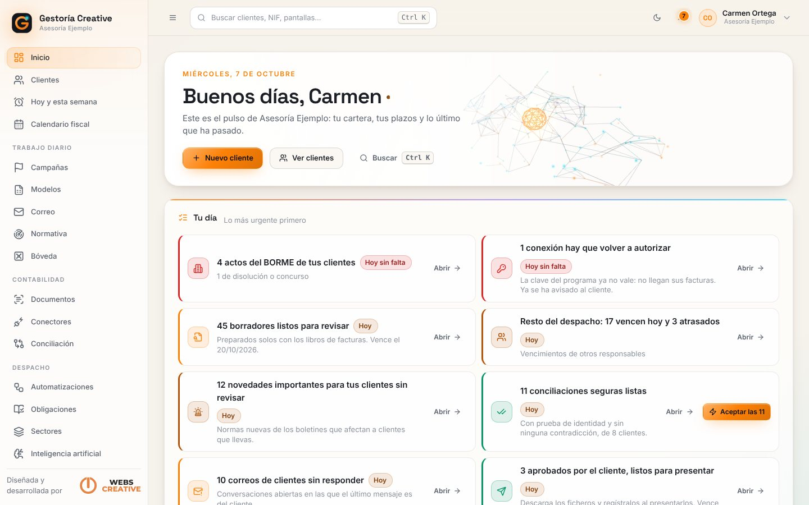
  <div class="cover-meta"><span>Para <strong>asesorías y gestorías</strong></span><span>Versión <strong>octubre de 2026</strong></span><span>Hecho por <strong>Webs Creative</strong></span></div>
</div></header>
<main>
<section class="band" id="que-es"><div class="wrap">
  <p class="eyebrow">Qué es</p>
  <h2 class="h-sec">Un programa web hecho para el trabajo de una asesoría</h2>
  <div class="prose band-prose"><p>Gestoría Creative reúne en una sola aplicación el expediente de cada cliente, su perfil de obligaciones, el calendario fiscal, los documentos, los bancos y la conciliación, los modelos tributarios, el correo del despacho, el radar normativo y un portal para tus clientes.</p><p>Se instala en el hosting de tu despacho con un <strong>pago único</strong>. Los datos de tus clientes se quedan en tu servidor. Una tarea programada hace el trabajo de fondo: lee los boletines oficiales, prepara los borradores de los modelos, concilia lo que es seguro y te avisa de lo urgente.</p><p>Cada sección de esta guía tiene tres bloques. <strong>Qué hace</strong> explica el trabajo que te quita. <strong>Qué ves</strong> describe la pantalla. <strong>Qué genera</strong> lista lo que sale de ella: ficheros, documentos, avisos y registros.</p><p>Las capturas son de la instalación de demostración, con 40 clientes ficticios de «Asesoría Ejemplo». Nombres, NIF, importes y actos del BORME son inventados.</p></div>
  <div class="facts"><div class="fact"><b>594</b><span>obligaciones en el catálogo, de fiscales a locales, con sus plazos</span></div><div class="fact"><b>11</b><span>modelos que se calculan solos: 303, 130, 111, 115, 349, 347, 390, 180, 190, 202 y 309</span></div><div class="fact"><b>8</b><span>formatos de extracto bancario, de la Norma 43 al camt.053</span></div><div class="fact"><b>82</b><span>recetas de automatización «cuando pase esto, haz esto otro»</span></div><div class="fact"><b>3.497</b><span>actividades de la CNAE-2025, la CNAE-2009 y el IAE</span></div><div class="fact"><b>15</b><span>programas de facturación de tus clientes que se conectan hoy</span></div></div>
</div></section>
<section class="band" id="como-encaja"><div class="wrap"><p class="eyebrow">Cómo encaja todo</p><h2 class="h-sec">Lo que entra, lo que hace el programa y lo que sale</h2><div class="prose band-prose"><p>Todo lo que llega al despacho entra por un sitio conocido y acaba en el expediente de su cliente. Desde ahí, cada módulo usa lo que ya está dentro: las facturas registradas alimentan los modelos y la conciliación, y los modelos presentados avisan a Obligaciones y a Bancos.</p></div><div class="trio"><div class="t-ves"><h3>Entra</h3><ul><li>Fotos, PDF y facturas XML que sube el cliente desde su portal o su móvil.</li><li>Correos de los buzones del despacho, con sus adjuntos.</li><li>Facturas de los programas de tus clientes: Holded, Dolibarr, FacturaScripts, Odoo o Excel.</li><li>Extractos del banco en Norma 43, camt.053, MT940, OFX, CSV o Excel.</li><li>Boletines oficiales: BOE, BORME, AEAT, Boletín RED, DOUE y autonómicos.</li></ul></div><div class="t-hace"><h3>Trabaja</h3><ul><li>Expediente de cada cliente con su perfil de obligaciones calculado por actividad y situación.</li><li>Lectura, clasificación y comprobación de cada documento, con cotejo del QR con la AEAT.</li><li>Conciliación bancaria nocturna con prueba de identidad y explicación de cada propuesta.</li><li>Borradores de los modelos con cada casilla trazada hasta sus facturas.</li><li>Automatizaciones y radar normativo que cruzan cada novedad con tu cartera.</li></ul></div><div class="t-gen"><h3>Sale</h3><ul><li>Borradores en PDF y ficheros en formato BOE para importar en la Sede.</li><li>Declaraciones revisadas y aprobadas por el cliente desde su portal.</li><li>Facturas registradas en el libro y cobros y pagos conciliados.</li><li>Avisos y recordatorios al equipo y al cliente, con su plazo.</li><li>Registro de auditoría de cada acceso y cada cambio.</li></ul></div></div></div></section>
<section class="band" id="indice"><div class="wrap">
  <p class="eyebrow">Índice</p><h2 class="h-sec">Las secciones del programa</h2>
  <p class="lead">El orden sigue el menú lateral de la aplicación. Al final están el portal del cliente, todo lo que genera el programa, la seguridad y la instalación.</p>
  <ol class="toc"><li><a href="#inicio-tu-dia"><span class="toc-n">01</span><span class="toc-t">Inicio: tu día y el pulso del despacho</span><span class="toc-g">Inicio y clientes</span></a></li><li><a href="#avisos-y-buscador"><span class="toc-n">02</span><span class="toc-t">Avisos y buscador global</span><span class="toc-g">Inicio y clientes</span></a></li><li><a href="#clientes-lista"><span class="toc-n">03</span><span class="toc-t">Clientes: la cartera</span><span class="toc-g">Inicio y clientes</span></a></li><li><a href="#clientes-alta"><span class="toc-n">04</span><span class="toc-t">Alta de un cliente</span><span class="toc-g">Inicio y clientes</span></a></li><li><a href="#clientes-importar"><span class="toc-n">05</span><span class="toc-t">Importar clientes</span><span class="toc-g">Inicio y clientes</span></a></li><li><a href="#expediente-resumen-datos"><span class="toc-n">06</span><span class="toc-t">Expediente: resumen, datos fiscales y contactos</span><span class="toc-g">Inicio y clientes</span></a></li><li><a href="#expediente-obligaciones-modelos"><span class="toc-n">07</span><span class="toc-t">Expediente: actividades, obligaciones y modelos</span><span class="toc-g">Inicio y clientes</span></a></li><li><a href="#expediente-documentos-bancos"><span class="toc-n">08</span><span class="toc-t">Expediente: documentos, conectores, bancos y conciliación</span><span class="toc-g">Inicio y clientes</span></a></li><li><a href="#expediente-relacion-historial"><span class="toc-n">09</span><span class="toc-t">Expediente: normativa, correo, servicios, portal e historial</span><span class="toc-g">Inicio y clientes</span></a></li><li><a href="#hoy-y-esta-semana"><span class="toc-n">10</span><span class="toc-t">Hoy y esta semana</span><span class="toc-g">Inicio y clientes</span></a></li><li><a href="#calendario-fiscal"><span class="toc-n">11</span><span class="toc-t">Calendario fiscal y laboral</span><span class="toc-g">Inicio y clientes</span></a></li><li><a href="#campanas"><span class="toc-n">12</span><span class="toc-t">Campañas</span><span class="toc-g">Trabajo diario</span></a></li><li><a href="#modelos-campana"><span class="toc-n">13</span><span class="toc-t">Modelos tributarios</span><span class="toc-g">Trabajo diario</span></a></li><li><a href="#modelos-borrador"><span class="toc-n">14</span><span class="toc-t">Borrador de un modelo</span><span class="toc-g">Trabajo diario</span></a></li><li><a href="#correo"><span class="toc-n">15</span><span class="toc-t">Correo</span><span class="toc-g">Trabajo diario</span></a></li><li><a href="#normativa"><span class="toc-n">16</span><span class="toc-t">Radar normativo</span><span class="toc-g">Trabajo diario</span></a></li><li><a href="#normativa-borme-fuentes"><span class="toc-n">17</span><span class="toc-t">Radar normativo: BORME, catálogo y fuentes</span><span class="toc-g">Trabajo diario</span></a></li><li><a href="#boveda"><span class="toc-n">18</span><span class="toc-t">Bóveda de credenciales y certificados</span><span class="toc-g">Trabajo diario</span></a></li><li><a href="#documentos-bandeja"><span class="toc-n">19</span><span class="toc-t">Bandeja de documentos</span><span class="toc-g">Contabilidad</span></a></li><li><a href="#documentos-revisar"><span class="toc-n">20</span><span class="toc-t">Revisar un documento</span><span class="toc-g">Contabilidad</span></a></li><li><a href="#documentos-escanear"><span class="toc-n">21</span><span class="toc-t">Escanear documentos</span><span class="toc-g">Contabilidad</span></a></li><li><a href="#estacion-lectura"><span class="toc-n">22</span><span class="toc-t">Estación de lectura</span><span class="toc-g">Contabilidad</span></a></li><li><a href="#conectores"><span class="toc-n">23</span><span class="toc-t">Conectores con los programas de los clientes</span><span class="toc-g">Contabilidad</span></a></li><li><a href="#conciliacion"><span class="toc-n">24</span><span class="toc-t">Conciliación bancaria</span><span class="toc-g">Contabilidad</span></a></li><li><a href="#conciliador"><span class="toc-n">25</span><span class="toc-t">Conciliador de un cliente</span><span class="toc-g">Contabilidad</span></a></li><li><a href="#automatizaciones"><span class="toc-n">26</span><span class="toc-t">Automatizaciones</span><span class="toc-g">Despacho</span></a></li><li><a href="#obligaciones"><span class="toc-n">27</span><span class="toc-t">Catálogo de obligaciones</span><span class="toc-g">Despacho</span></a></li><li><a href="#sectores"><span class="toc-n">28</span><span class="toc-t">Sectores y actividades</span><span class="toc-g">Despacho</span></a></li><li><a href="#inteligencia-artificial"><span class="toc-n">29</span><span class="toc-t">Inteligencia artificial</span><span class="toc-g">Despacho</span></a></li><li><a href="#ajustes-despacho"><span class="toc-n">30</span><span class="toc-t">Ajustes del despacho</span><span class="toc-g">Despacho</span></a></li><li><a href="#apariencia"><span class="toc-n">31</span><span class="toc-t">Apariencia</span><span class="toc-g">Despacho</span></a></li><li><a href="#acceso-seguridad"><span class="toc-n">32</span><span class="toc-t">Acceso y seguridad</span><span class="toc-g">Despacho</span></a></li><li><a href="#portal-cliente"><span class="toc-n">33</span><span class="toc-t">Portal del cliente</span><span class="toc-g">Portal del cliente</span></a></li><li><a href="#portal-envios-impuestos"><span class="toc-n">34</span><span class="toc-t">Portal: envíos, impuestos y declaraciones</span><span class="toc-g">Portal del cliente</span></a></li><li><a href="#genera"><span class="toc-n">A</span><span class="toc-t">Todo lo que genera</span><span class="toc-g">Anexo</span></a></li><li><a href="#seguridad"><span class="toc-n">B</span><span class="toc-t">Seguridad y protección de datos</span><span class="toc-g">Anexo</span></a></li><li><a href="#instalacion"><span class="toc-n">C</span><span class="toc-t">Instalación y requisitos</span><span class="toc-g">Anexo</span></a></li></ol>
</div></section>
<div class="group-wrap"><div class="wrap group-head"><p class="eyebrow">Grupo del menú</p><h2>Inicio y clientes</h2><p>Lo que abres cada día: el inicio con tus pendientes, la cartera de clientes con su expediente completo y los plazos de hoy, de la semana y del calendario fiscal.</p><ol class="group-list"><li><a href="#inicio-tu-dia"><span>01</span>Inicio: tu día y el pulso del despacho</a></li><li><a href="#avisos-y-buscador"><span>02</span>Avisos y buscador global</a></li><li><a href="#clientes-lista"><span>03</span>Clientes: la cartera</a></li><li><a href="#clientes-alta"><span>04</span>Alta de un cliente</a></li><li><a href="#clientes-importar"><span>05</span>Importar clientes</a></li><li><a href="#expediente-resumen-datos"><span>06</span>Expediente: resumen, datos fiscales y contactos</a></li><li><a href="#expediente-obligaciones-modelos"><span>07</span>Expediente: actividades, obligaciones y modelos</a></li><li><a href="#expediente-documentos-bancos"><span>08</span>Expediente: documentos, conectores, bancos y conciliación</a></li><li><a href="#expediente-relacion-historial"><span>09</span>Expediente: normativa, correo, servicios, portal e historial</a></li><li><a href="#hoy-y-esta-semana"><span>10</span>Hoy y esta semana</a></li><li><a href="#calendario-fiscal"><span>11</span>Calendario fiscal y laboral</a></li></ol></div></div>
<section class="mod wrap" id="inicio-tu-dia">
  <div class="mod-head"><span class="mod-num">01</span><div>
    <p class="mod-path">Inicio y clientes <span>›</span> Inicio</p>
    <h2 class="mod-title">Inicio: tu día y el pulso del despacho</h2>
    <p class="mod-lead">Es la primera pantalla al entrar. Junta en una sola lista lo urgente de todos los módulos y, debajo, las cifras y los gráficos de tu cartera, para que decidas por dónde empezar.</p></div></div>
  <figure class="shot"><div class="shot-bar" aria-hidden="true"><span class="shot-dots"><i></i><i></i><i></i></span><span class="shot-url">https://gestion.tu-asesoria.es/#/</span></div><figcaption>Cabecera con el saludo y los accesos rápidos, y la lista «Tu día» ordenada de lo más urgente a lo que puede esperar.</figcaption></figure><div class="shots-2"><figure class="shot"><div class="shot-bar" aria-hidden="true"><span class="shot-dots"><i></i><i></i><i></i></span><span class="shot-url">https://gestion.tu-asesoria.es/#/</span></div>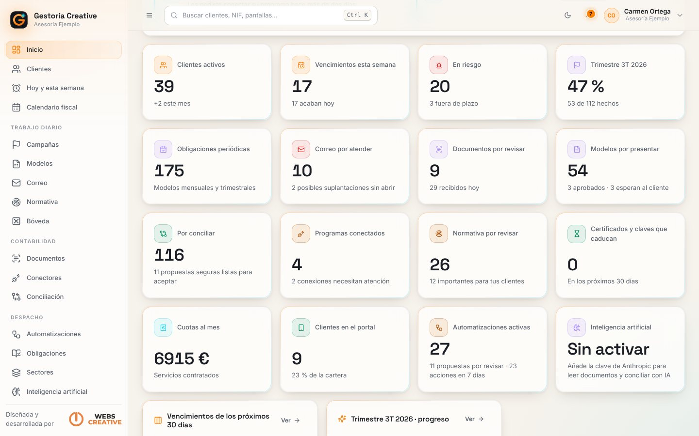<figcaption>Las tarjetas de indicadores: clientes activos, vencimientos de la semana, en riesgo, trimestre en curso, correo, documentos, modelos, conciliación y más.</figcaption></figure><figure class="shot"><div class="shot-bar" aria-hidden="true"><span class="shot-dots"><i></i><i></i><i></i></span><span class="shot-url">https://gestion.tu-asesoria.es/#/</span></div>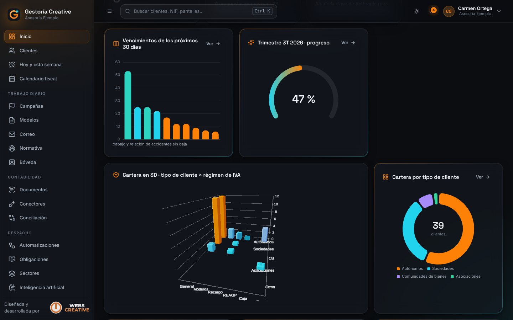<figcaption>Vencimientos de los próximos 30 días, progreso de la campaña del 3T y la cartera en 3D por tipo de cliente y régimen de IVA.</figcaption></figure><figure class="shot"><div class="shot-bar" aria-hidden="true"><span class="shot-dots"><i></i><i></i><i></i></span><span class="shot-url">https://gestion.tu-asesoria.es/#/</span></div>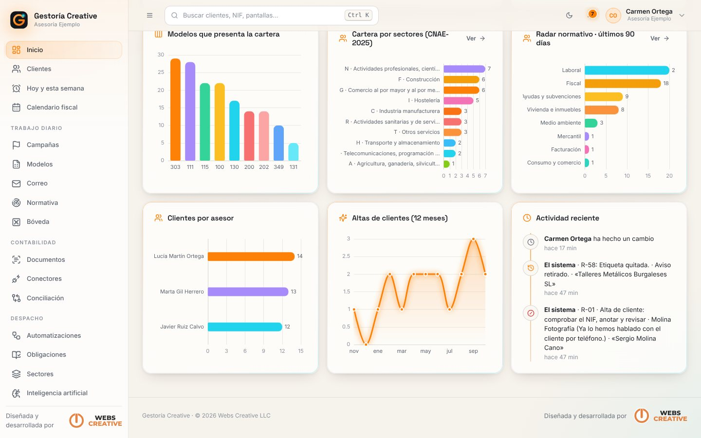<figcaption>Modelos que presenta la cartera, sectores CNAE-2025, radar normativo, clientes por asesor, altas del año y actividad reciente.</figcaption></figure></div><div class="trio"><div class="t-hace"><h3>Qué hace</h3><ul><li>Reúne en «Tu día» lo pendiente de todos los módulos: vencimientos, borradores de modelos, conciliaciones, correo, documentos, normativa, conectores y automatizaciones.</li><li>Ordena cada pendiente por prioridad (Hoy sin falta, Hoy, Esta semana, Cuando puedas) y, a igual prioridad, pone primero lo que más acumula.</li><li>Te deja resolver algunos pendientes con un clic, con confirmación cuando hace falta, como aceptar las conciliaciones seguras o reintentar una conexión con errores.</li><li>Calcula los indicadores del despacho y enlaza cada tarjeta con la pantalla donde se trabaja ese asunto.</li><li>Respeta los permisos: si tu rol solo ve sus clientes asignados, las cifras y la actividad se limitan a ellos.</li></ul></div><div class="t-ves"><h3>Qué ves</h3><ul><li>La fecha, el saludo y los botones Nuevo cliente, Ver clientes y Buscar con el atajo Ctrl K.</li><li>Cada pendiente de «Tu día» con su icono, su etiqueta de prioridad, una línea de detalle y los botones Abrir o la acción directa.</li><li>Hasta dieciséis tarjetas: clientes, vencimientos, en riesgo, trimestre, correo, documentos, modelos, conciliación, conectores, normativa, certificados que caducan, cuotas, portal, automatizaciones e IA.</li><li>Gráficos de vencimientos a 30 días, progreso de la campaña, cartera en 3D, cartera por tipo y por sector, modelos, radar normativo, carga por asesor y altas.</li><li>La actividad reciente escrita en frases normales, con quién hizo qué y hace cuánto.</li></ul></div><div class="t-gen"><h3>Qué genera</h3><ul><li>No crea documentos: es una pantalla de consulta y de acceso rápido.</li><li>Las acciones de un clic dejan su resultado en el módulo que toca, por ejemplo las conciliaciones aceptadas en Conciliación.</li><li>Un aviso en pantalla con el resultado de cada acción, incluidas las que no se han podido hacer o ya estaban registradas.</li><li>Cada acción queda en el registro de auditoría y aparece después en «Actividad reciente».</li></ul></div></div><p class="tip"><strong>Consejo</strong><span>Empieza la mañana por «Tu día»: cada línea te lleva directa a la pantalla donde se resuelve.</span></p>
</section>
<section class="mod wrap" id="avisos-y-buscador">
  <div class="mod-head"><span class="mod-num">02</span><div>
    <p class="mod-path">Inicio y clientes <span>›</span> Barra superior (campana y Buscar)</p>
    <h2 class="mod-title">Avisos y buscador global</h2>
    <p class="mod-lead">La barra superior está en todas las pantallas. La campana te cuenta lo que ha pasado y el buscador te lleva a cualquier cliente, norma o pantalla sin pasar por el menú.</p></div></div>
  <figure class="shot"><div class="shot-bar" aria-hidden="true"><span class="shot-dots"><i></i><i></i><i></i></span><span class="shot-url">https://gestion.tu-asesoria.es/#/</span></div>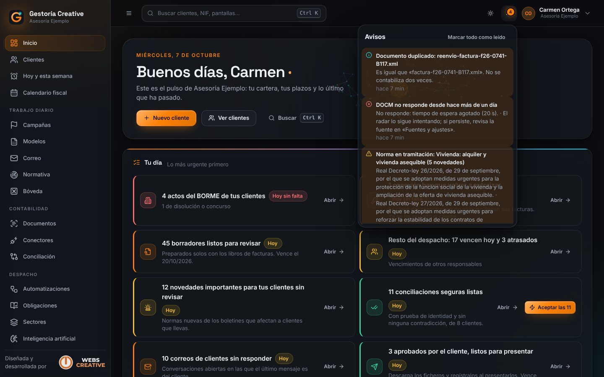<figcaption>La campana abierta con los últimos avisos: un envío seguro de un cliente, la activación de la Bóveda, tu llave de la Bóveda y un documento duplicado.</figcaption></figure><div class="shots-2"><figure class="shot"><div class="shot-bar" aria-hidden="true"><span class="shot-dots"><i></i><i></i><i></i></span><span class="shot-url">https://gestion.tu-asesoria.es/#/</span></div>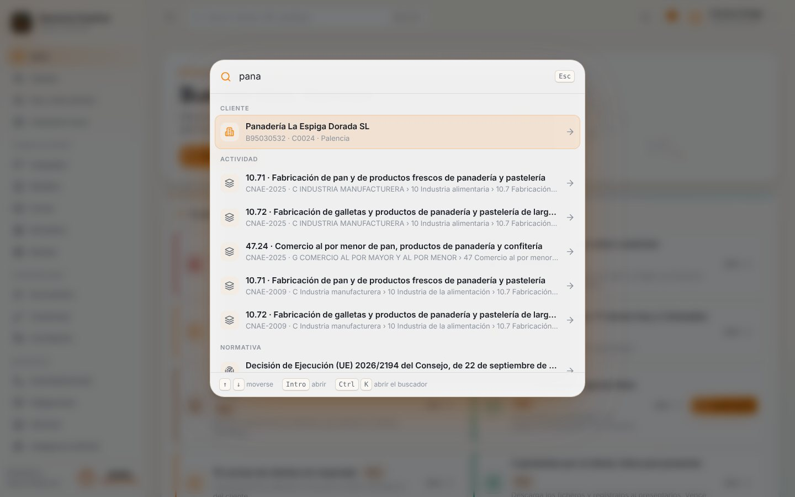<figcaption>El buscador con «pana»: el cliente, sus actividades CNAE y la normativa relacionada, agrupados por tipo.</figcaption></figure></div><div class="trio"><div class="t-hace"><h3>Qué hace</h3><ul><li>Recoge los avisos que generan los módulos: recordatorios de plazos, documentos duplicados, envíos seguros de clientes, avisos de la Bóveda o fuentes del radar caídas.</li><li>Cuenta en la campana los avisos sin leer y te deja marcarlos todos como leídos.</li><li>Al pulsar un aviso, lo marca como leído y abre la pantalla relacionada.</li><li>Busca desde dos letras en clientes (nombre, nombre comercial, NIF o código), contactos, actividades CNAE e IAE, normativa, modelos, obligaciones, campañas, automatizaciones y correo.</li><li>Ofrece también accesos directos a Nuevo cliente, Importar clientes y a las pantallas del menú.</li></ul></div><div class="t-ves"><h3>Qué ves</h3><ul><li>La campana con el número de avisos pendientes, junto al cambio de tema claro u oscuro y tu usuario.</li><li>Los últimos 30 avisos con icono por nivel (información, éxito, aviso o peligro), título, texto y hace cuánto llegó.</li><li>El buscador en una ventana central que se abre con Ctrl+K (Cmd+K en Mac) o pulsando la barra de búsqueda.</li><li>Resultados agrupados por tipo (Cliente, Contacto, Actividad, Normativa…) con una línea de detalle como NIF, código y municipio.</li><li>Atajos al pie de la ventana: flechas para moverte, Intro para abrir y Esc para cerrar.</li></ul></div><div class="t-gen"><h3>Qué genera</h3><ul><li>No crea documentos: la campana y el buscador consultan y te llevan a otras pantallas.</li><li>Guarda por persona qué avisos has leído, así cada miembro del equipo ve su propio contador.</li><li>Recibe los recordatorios automáticos que el calendario manda al responsable de cada vencimiento a 15, 7, 3 y 1 días del final.</li><li>Muestra los avisos del radar normativo, de la bandeja de documentos y de los conectores cuando hay algo que revisar.</li></ul></div></div><p class="tip"><strong>Consejo</strong><span>Pulsa Ctrl+K en cualquier pantalla y escribe parte del nombre, del NIF o del código del cliente para abrir su expediente.</span></p>
</section>
<section class="mod wrap" id="clientes-lista">
  <div class="mod-head"><span class="mod-num">03</span><div>
    <p class="mod-path">Inicio y clientes <span>›</span> Clientes</p>
    <h2 class="mod-title">Clientes: la cartera</h2>
    <p class="mod-lead">Es la lista de todos los expedientes del despacho. Te deja buscar, filtrar por régimen o por modelo, cambiar varios clientes a la vez y sacar la lista a Excel.</p></div></div>
  <figure class="shot"><div class="shot-bar" aria-hidden="true"><span class="shot-dots"><i></i><i></i><i></i></span><span class="shot-url">https://gestion.tu-asesoria.es/#/clientes</span></div>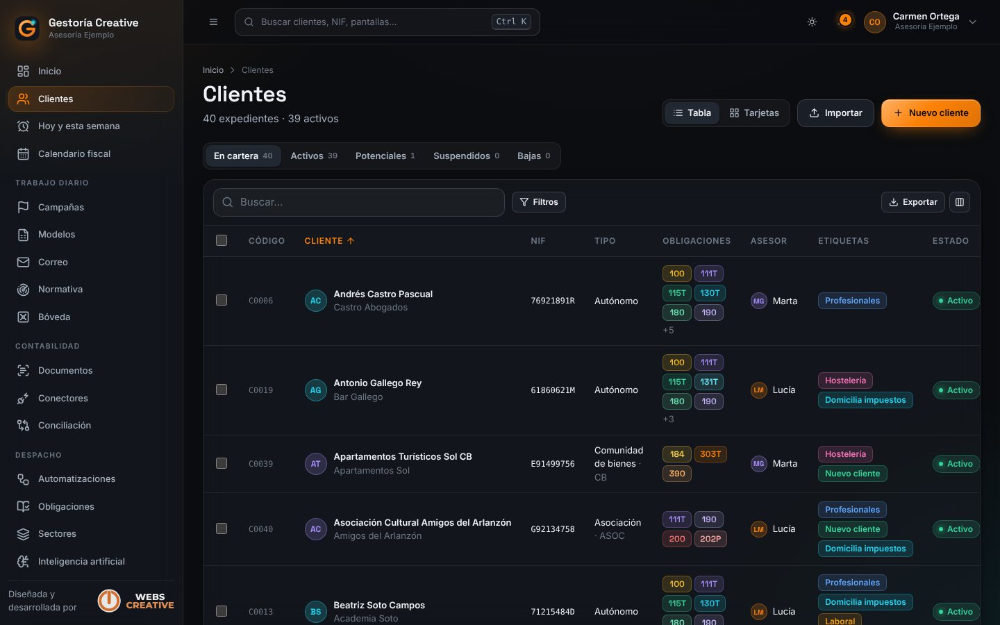<figcaption>Vista de tabla: código, cliente, NIF, tipo, obligaciones, asesor, etiquetas y estado, con los segmentos por estado encima.</figcaption></figure><div class="shots-2"><figure class="shot"><div class="shot-bar" aria-hidden="true"><span class="shot-dots"><i></i><i></i><i></i></span><span class="shot-url">https://gestion.tu-asesoria.es/#/clientes</span></div>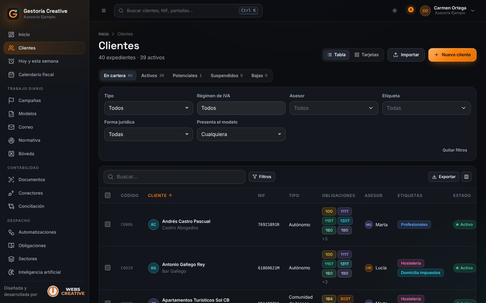<figcaption>Panel de filtros: tipo, régimen de IVA, asesor, etiqueta, forma jurídica y modelo que presenta.</figcaption></figure><figure class="shot"><div class="shot-bar" aria-hidden="true"><span class="shot-dots"><i></i><i></i><i></i></span><span class="shot-url">https://gestion.tu-asesoria.es/#/clientes?tipo=sociedad</span></div>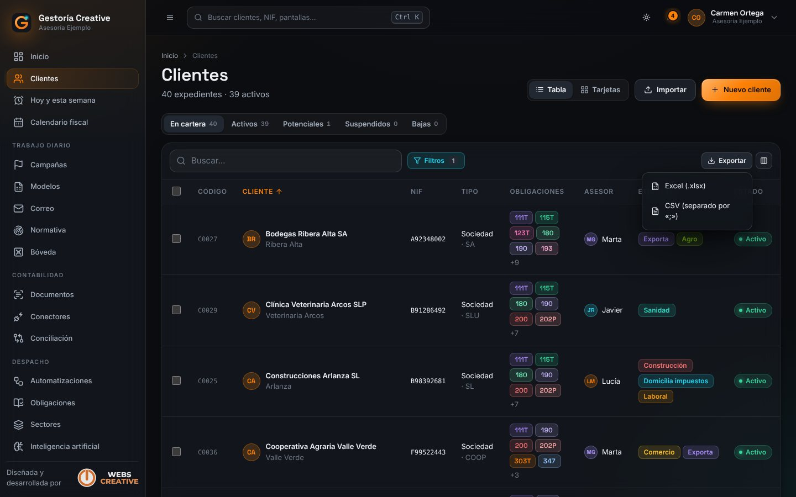<figcaption>Lista filtrada por sociedades con el menú Exportar abierto: Excel (.xlsx) o CSV separado por punto y coma.</figcaption></figure><figure class="shot"><div class="shot-bar" aria-hidden="true"><span class="shot-dots"><i></i><i></i><i></i></span><span class="shot-url">https://gestion.tu-asesoria.es/#/clientes</span></div>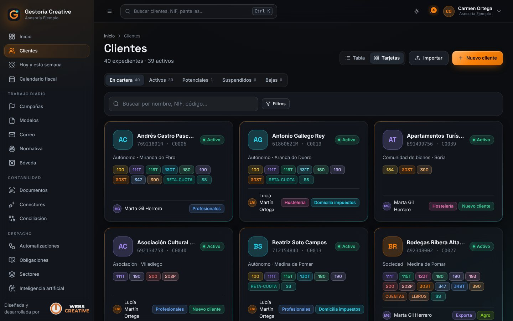<figcaption>Vista de tarjetas con el NIF, el código, el municipio, los modelos del perfil, el asesor y las etiquetas.</figcaption></figure></div><div class="trio"><div class="t-hace"><h3>Qué hace</h3><ul><li>Lista los clientes con paginación y los ordena por código, nombre, NIF, tipo, régimen de IVA, asesor, municipio, estado o fecha de alta.</li><li>Separa la cartera por estado: en cartera, activos, potenciales, suspendidos y bajas, con el número de cada uno.</li><li>Filtra por tipo, régimen de IVA, asesor (o sin asesor), etiqueta, forma jurídica y modelo que presenta, como el 303 o el 111.</li><li>Busca por nombre, NIF o código mientras escribes.</li><li>Aplica acciones masivas a los clientes marcados, con confirmación: asignar asesor, añadir una etiqueta o cambiar el estado.</li><li>Recuerda en tu navegador las columnas visibles y si prefieres tabla o tarjetas.</li></ul></div><div class="t-ves"><h3>Qué ves</h3><ul><li>Los botones Tabla y Tarjetas, Importar y Nuevo cliente en la cabecera.</li><li>En cada fila, el avatar con color por tipo de cliente, el nombre comercial y las obligaciones del perfil como etiquetas (100, 111T, 303T…).</li><li>El asesor responsable con su avatar, o «Sin asesor» resaltado en amarillo.</li><li>Las etiquetas de color del despacho, como Hostelería, Profesionales o Domicilia impuestos.</li><li>El selector de columnas, que añade también régimen de IVA, municipio y fecha de alta.</li></ul></div><div class="t-gen"><h3>Qué genera</h3><ul><li>Exporta la lista filtrada a Excel (.xlsx) o a CSV con punto y coma, con 22 columnas de datos fiscales, contacto, asesor, obligaciones y etiquetas.</li><li>Cada exportación queda anotada en el registro de auditoría con el número de clientes.</li><li>Las acciones masivas cambian la ficha de cada cliente y quedan en su historial.</li><li>Los cambios masivos lanzan los mismos recálculos que una edición normal de la ficha.</li></ul></div></div><p class="tip"><strong>Consejo</strong><span>Filtra por «Presenta el modelo» 303 y exporta a Excel para tener la lista de la campaña del IVA.</span></p>
</section>
<section class="mod wrap" id="clientes-alta">
  <div class="mod-head"><span class="mod-num">04</span><div>
    <p class="mod-path">Clientes <span>›</span> Nuevo cliente</p>
    <h2 class="mod-title">Alta de un cliente</h2>
    <p class="mod-lead">Es el formulario para dar de alta o editar un cliente. Mientras lo rellenas, calcula a la derecha qué modelos presentará y por qué.</p></div></div>
  <figure class="shot"><div class="shot-bar" aria-hidden="true"><span class="shot-dots"><i></i><i></i><i></i></span><span class="shot-url">https://gestion.tu-asesoria.es/#/clientes/nuevo</span></div>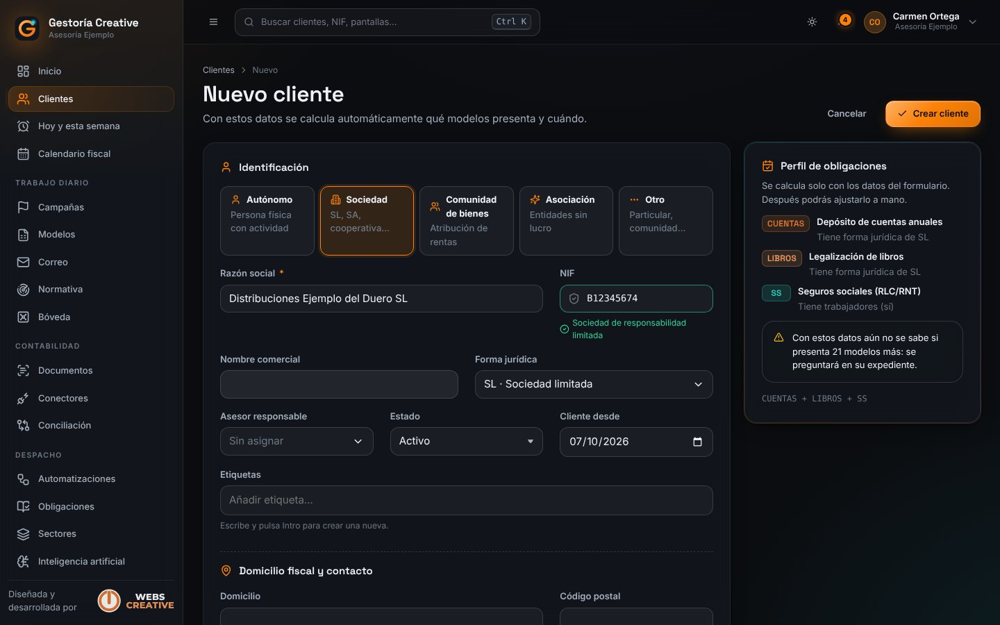<figcaption>Alta de una sociedad: el NIF se valida al momento, la forma jurídica se deduce y el perfil de obligaciones se calcula al lado.</figcaption></figure><div class="shots-2"><figure class="shot"><div class="shot-bar" aria-hidden="true"><span class="shot-dots"><i></i><i></i><i></i></span><span class="shot-url">https://gestion.tu-asesoria.es/#/clientes/nuevo</span></div>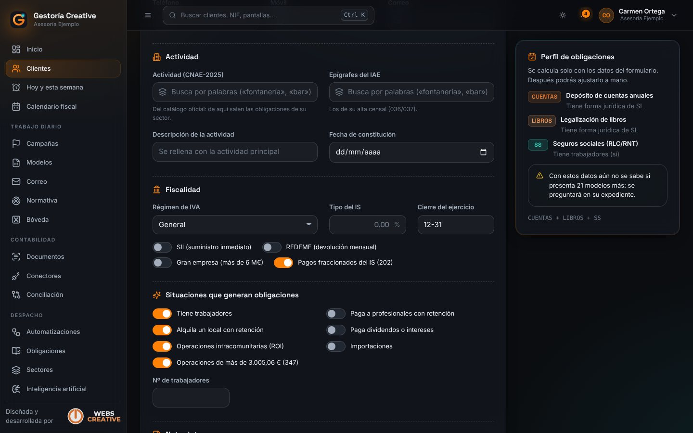<figcaption>Secciones de actividad (CNAE-2025 e IAE), fiscalidad y situaciones que generan obligaciones, con sus interruptores.</figcaption></figure></div><div class="trio"><div class="t-hace"><h3>Qué hace</h3><ul><li>Valida el NIF, NIE o CIF mientras escribes, dice qué tipo de entidad es y avisa si otro cliente ya tiene ese NIF.</li><li>Deduce la forma jurídica por la letra del CIF y rellena la provincia con el código postal.</li><li>Busca la actividad en el catálogo oficial CNAE-2025 y los epígrafes del IAE, por palabras o por código.</li><li>Recoge régimen de IVA, estimación del IRPF, tipo del IS, cierre del ejercicio y marcas como SII, REDEME o gran empresa.</li><li>Pregunta por las situaciones que generan modelos: trabajadores, retenciones a profesionales, alquiler con retención, dividendos, operaciones intracomunitarias, importaciones y 347.</li><li>Calcula en vivo un primer perfil de obligaciones con el motivo de cada una y dice cuántos modelos quedan por decidir.</li></ul></div><div class="t-ves"><h3>Qué ves</h3><ul><li>Cinco tarjetas para elegir el tipo: autónomo, sociedad, comunidad de bienes, asociación u otro.</li><li>Campos que cambian según el tipo: estimación del IRPF para autónomos, tipo del IS y pagos del 202 para sociedades.</li><li>El panel «Perfil de obligaciones» a la derecha, con cada obligación y su motivo, por ejemplo «Tiene trabajadores (sí)».</li><li>Un aviso como «Con estos datos aún no se sabe si presenta 21 modelos más: se preguntará en su expediente».</li><li>Asesor responsable, estado, fecha de alta, etiquetas y notas internas que solo ve el despacho.</li></ul></div><div class="t-gen"><h3>Qué genera</h3><ul><li>La ficha del cliente con un código correlativo automático (C0041, C0042…) si no le pones uno.</li><li>Sus actividades CNAE e IAE, que pasan a la pestaña Actividades del expediente.</li><li>El perfil de obligaciones y sus vencimientos en el calendario fiscal.</li><li>La revisión de la normativa reciente del radar que le afecta.</li><li>Una entrada en el historial del cliente; si están activas, también las automatizaciones de «cliente nuevo».</li></ul></div></div><p class="tip"><strong>Consejo</strong><span>Rellena con calma la actividad CNAE y las situaciones: de ellas salen los modelos, los plazos y la normativa que se vigila.</span></p>
</section>
<section class="mod wrap" id="clientes-importar">
  <div class="mod-head"><span class="mod-num">05</span><div>
    <p class="mod-path">Clientes <span>›</span> Importar</p>
    <h2 class="mod-title">Importar clientes</h2>
    <p class="mod-lead">Trae tu cartera de golpe desde Excel o CSV, incluidos los listados de clientes que exportan a3, Sage o Contasol. Antes de importar, comprueba fila a fila qué entra y qué falla.</p></div></div>
  <figure class="shot"><div class="shot-bar" aria-hidden="true"><span class="shot-dots"><i></i><i></i><i></i></span><span class="shot-url">https://gestion.tu-asesoria.es/#/clientes/importar</span></div>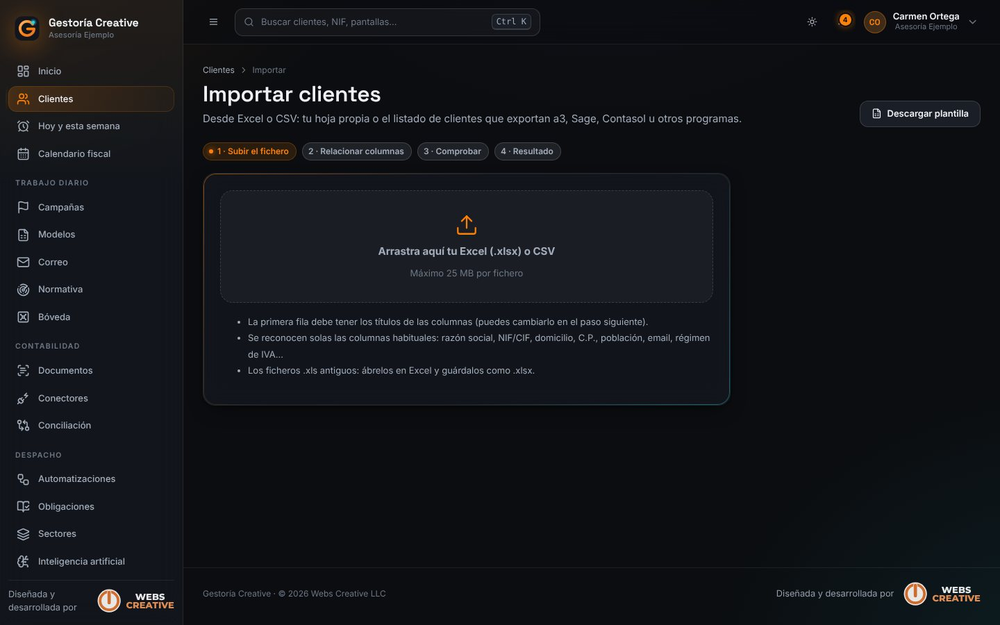<figcaption>Paso 1: arrastra el Excel (.xlsx) o el CSV; arriba a la derecha tienes la plantilla para descargar.</figcaption></figure><div class="shots-2"><figure class="shot"><div class="shot-bar" aria-hidden="true"><span class="shot-dots"><i></i><i></i><i></i></span><span class="shot-url">https://gestion.tu-asesoria.es/#/clientes/importar</span></div>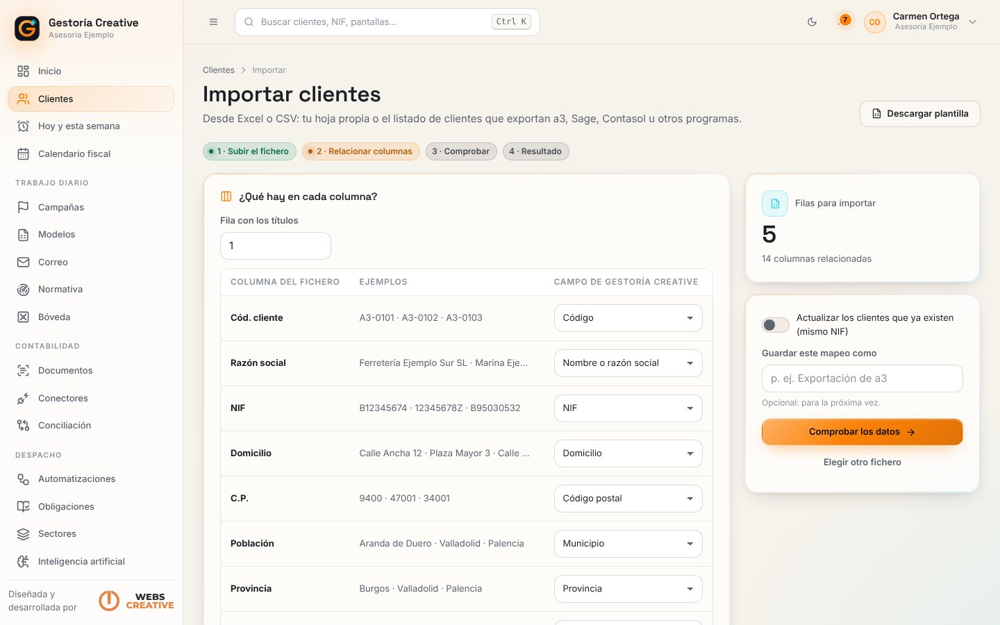<figcaption>Paso 2: cada columna del fichero con ejemplos y el campo de Gestoría Creative que se le ha asignado solo.</figcaption></figure><figure class="shot"><div class="shot-bar" aria-hidden="true"><span class="shot-dots"><i></i><i></i><i></i></span><span class="shot-url">https://gestion.tu-asesoria.es/#/clientes/importar</span></div>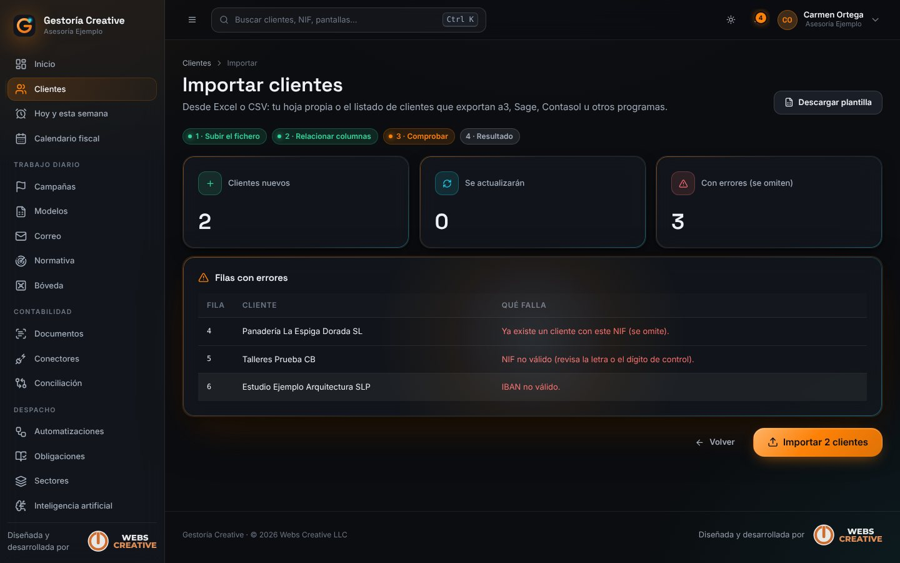<figcaption>Paso 3: la comprobación sin guardar nada, con 2 clientes nuevos y 3 filas con errores explicados.</figcaption></figure></div><div class="trio"><div class="t-hace"><h3>Qué hace</h3><ul><li>Lee ficheros .xlsx, .csv y .txt de hasta 25 MB; los .xls antiguos hay que guardarlos antes como .xlsx.</li><li>Reconoce solas las cabeceras habituales (razón social, NIF/CIF, C.P., población, e-mail, régimen de IVA…), también las de a3, Sage y Contasol.</li><li>Te deja cambiar la fila de títulos, reasignar cualquier columna y guardar el mapeo con un nombre.</li><li>Comprueba sin guardar los NIF, los NIF repetidos en el fichero, los clientes que ya existen y los IBAN.</li><li>Recupera los ceros que Excel quita en los códigos postales y en los NIF de siete cifras.</li><li>Actualiza los clientes que ya existen con el mismo NIF solo si activas esa opción.</li></ul></div><div class="t-ves"><h3>Qué ves</h3><ul><li>Cuatro pasos marcados arriba: Subir el fichero, Relacionar columnas, Comprobar y Resultado.</li><li>Una tabla con cada columna del fichero, tres ejemplos de su contenido y un desplegable con el campo de destino.</li><li>El contador de filas y de columnas relacionadas, y un aviso si falta la columna del nombre o hay campos repetidos.</li><li>En la comprobación, tres cifras: clientes nuevos, se actualizarán y con errores (se omiten).</li><li>La tabla de filas con errores, con número de fila, cliente y motivo, como «Ya existe un cliente con este NIF (se omite)».</li></ul></div><div class="t-gen"><h3>Qué genera</h3><ul><li>Una plantilla Excel con todas las columnas que reconoce y una fila de ejemplo.</li><li>Los clientes nuevos o actualizados, cada uno con su perfil de obligaciones calculado.</li><li>La cuenta bancaria del cliente si el fichero trae IBAN, y las etiquetas que vengan en él.</li><li>El mapeo de columnas guardado con el nombre que le pongas, para la próxima importación.</li><li>Una entrada en el registro de auditoría con los nuevos, los actualizados y los errores.</li></ul></div></div><p class="tip"><strong>Consejo</strong><span>Guarda el mapeo con el nombre del programa de origen («Exportación de a3») y la próxima vez se relaciona con un clic.</span></p>
</section>
<section class="mod wrap" id="expediente-resumen-datos">
  <div class="mod-head"><span class="mod-num">06</span><div>
    <p class="mod-path">Clientes <span>›</span> un cliente <span>›</span> Resumen, Datos fiscales, Contactos</p>
    <h2 class="mod-title">Expediente: resumen, datos fiscales y contactos</h2>
    <p class="mod-lead">El expediente es la ficha completa de cada cliente, con 18 pestañas que aportan todos los módulos. Las primeras te dan la foto general, los datos que usa el cálculo de obligaciones y las personas del cliente.</p></div></div>
  <figure class="shot"><div class="shot-bar" aria-hidden="true"><span class="shot-dots"><i></i><i></i><i></i></span><span class="shot-url">https://gestion.tu-asesoria.es/#/clientes/24</span></div>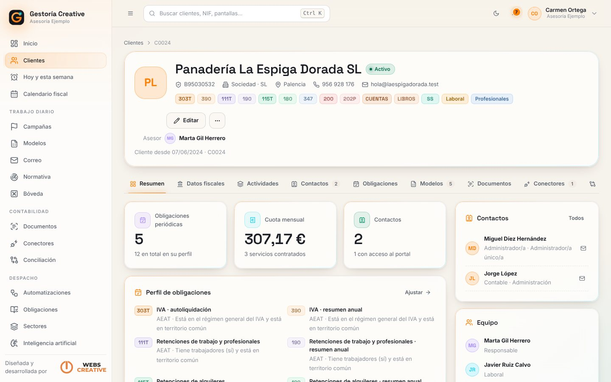<figcaption>Cabecera del expediente con NIF, forma jurídica, contacto, modelos del perfil y etiquetas; debajo, la pestaña Resumen.</figcaption></figure><div class="shots-2"><figure class="shot"><div class="shot-bar" aria-hidden="true"><span class="shot-dots"><i></i><i></i><i></i></span><span class="shot-url">https://gestion.tu-asesoria.es/#/clientes/24?pestana=fiscal</span></div>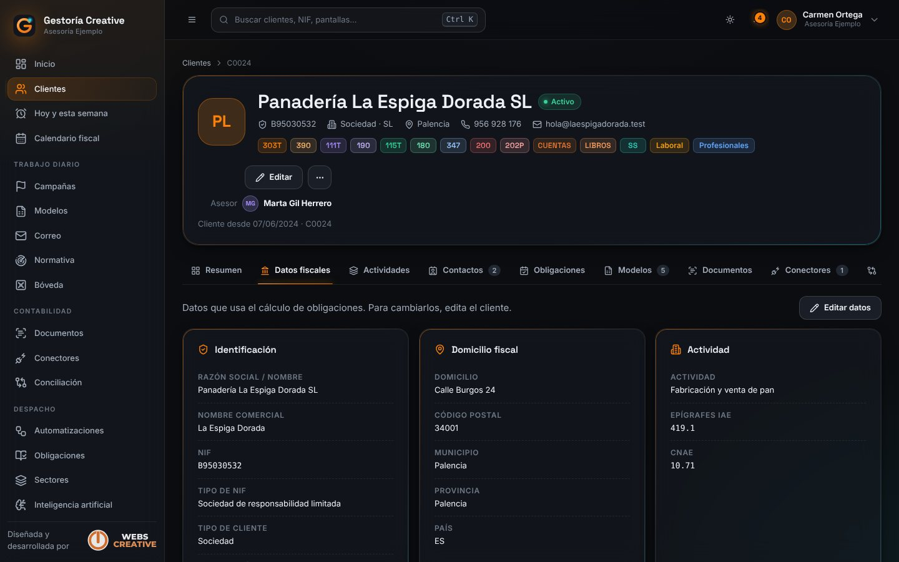<figcaption>Datos fiscales agrupados: identificación, domicilio fiscal y actividad, con el botón Editar datos.</figcaption></figure><figure class="shot"><div class="shot-bar" aria-hidden="true"><span class="shot-dots"><i></i><i></i><i></i></span><span class="shot-url">https://gestion.tu-asesoria.es/#/clientes/24?pestana=contactos</span></div>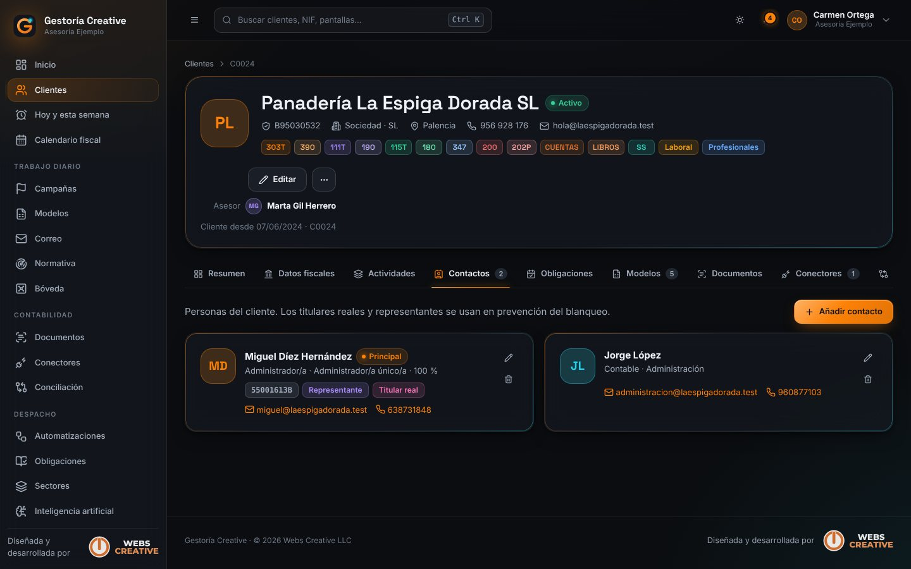<figcaption>Contactos con su relación, cargo, participación y NIF, y las marcas Principal, Representante y Titular real.</figcaption></figure></div><div class="trio"><div class="t-hace"><h3>Qué hace</h3><ul><li>Reúne en la cabecera lo esencial: estado, NIF (se copia con un clic), tipo y forma jurídica, municipio, teléfono, correo, modelos activos y etiquetas.</li><li>Resume en la pestaña Resumen las obligaciones periódicas, la cuota mensual, los contactos, el equipo y los últimos cambios.</li><li>Agrupa en Datos fiscales la identificación, el domicilio, la actividad, el IVA, el IRPF o el Impuesto sobre Sociedades y las retenciones.</li><li>Asigna un equipo al cliente (fiscal, contable, laboral o apoyo): quien esté en el equipo lo ve aunque solo vea sus asignados.</li><li>Guarda los contactos con su relación (titular, administrador, socio, contable, representante…), su participación y si es titular real.</li><li>Da de baja al cliente desde el menú «…»: sale de las listas, del portal y de los conectores, y sus datos se conservan.</li></ul></div><div class="t-ves"><h3>Qué ves</h3><ul><li>Tres tarjetas en Resumen: obligaciones periódicas, cuota mensual y contactos con acceso al portal.</li><li>El perfil de obligaciones con organismo y motivo, por ejemplo «AEAT · Está en el régimen general del IVA y en territorio común».</li><li>La barra de 18 pestañas con contadores (Contactos 2, Modelos 5…), que se desplaza en horizontal.</li><li>En Contactos, la caducidad del DNI en color cuando se ha leído de un documento de la bandeja.</li><li>El asesor responsable, la fecha de alta y el código del cliente a la derecha de la cabecera.</li></ul></div><div class="t-gen"><h3>Qué genera</h3><ul><li>Cada cambio de ficha, equipo o contactos queda en el historial del expediente con el antes y el después.</li><li>Al editar los datos fiscales, se recalculan sus obligaciones, sus vencimientos y la normativa que le afecta.</li><li>Los contactos quedan disponibles para el correo del despacho, que asocia sus mensajes al cliente.</li><li>La baja conserva el expediente completo por la obligación legal de conservación.</li></ul></div></div><p class="tip"><strong>Consejo</strong><span>Al dar de alta los contactos, marca quién es representante y quién es titular real (más del 25 % o control).</span></p>
</section>
<section class="mod wrap" id="expediente-obligaciones-modelos">
  <div class="mod-head"><span class="mod-num">07</span><div>
    <p class="mod-path">Clientes <span>›</span> un cliente <span>›</span> Actividades, Obligaciones, Modelos</p>
    <h2 class="mod-title">Expediente: actividades, obligaciones y modelos</h2>
    <p class="mod-lead">Estas pestañas dicen qué hace el cliente, qué tiene que presentar y por qué, y cómo va su año modelo a modelo. Son el corazón fiscal del expediente.</p></div></div>
  <figure class="shot"><div class="shot-bar" aria-hidden="true"><span class="shot-dots"><i></i><i></i><i></i></span><span class="shot-url">https://gestion.tu-asesoria.es/#/clientes/24?pestana=actividades</span></div>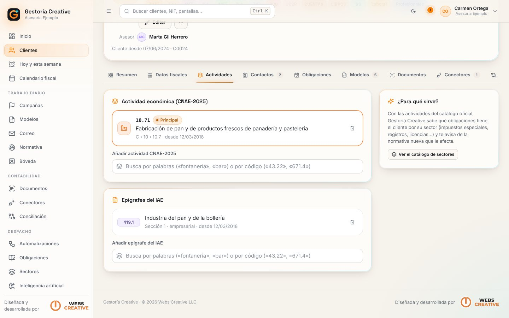<figcaption>Actividades: la CNAE-2025 principal con su fecha de alta y el epígrafe del IAE de su alta censal.</figcaption></figure><div class="shots-2"><figure class="shot"><div class="shot-bar" aria-hidden="true"><span class="shot-dots"><i></i><i></i><i></i></span><span class="shot-url">https://gestion.tu-asesoria.es/#/clientes/24?pestana=obligaciones</span></div>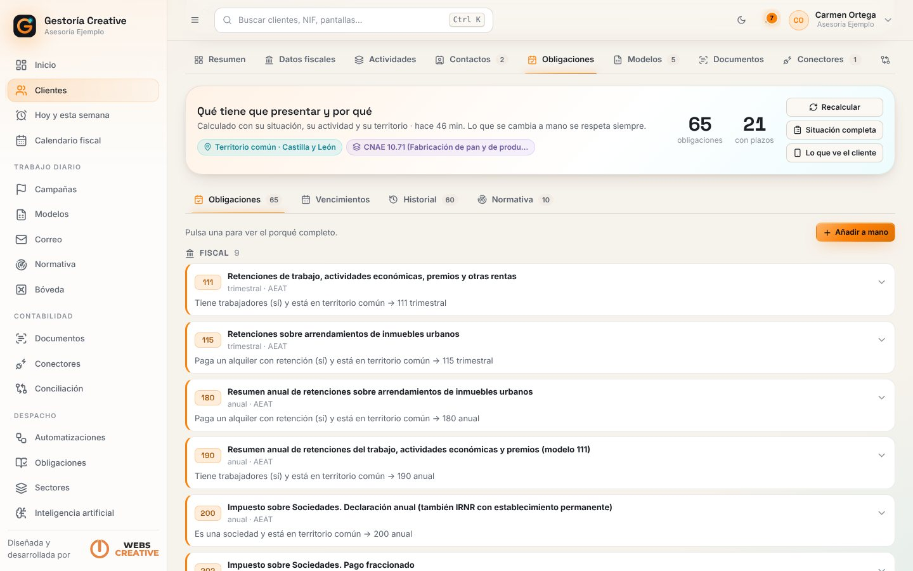<figcaption>Obligaciones: el resumen del cálculo (65 obligaciones, 21 con plazos) y cada una con su porqué, agrupadas por ámbito.</figcaption></figure><figure class="shot"><div class="shot-bar" aria-hidden="true"><span class="shot-dots"><i></i><i></i><i></i></span><span class="shot-url">https://gestion.tu-asesoria.es/#/clientes/24?pestana=obligaciones</span></div>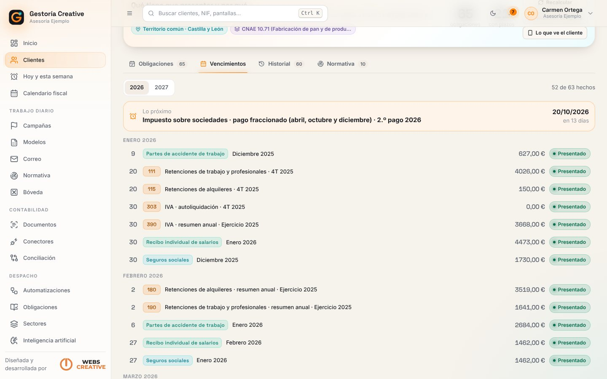<figcaption>Vencimientos del cliente por meses, con lo próximo destacado y el importe y el estado de cada presentación.</figcaption></figure><figure class="shot"><div class="shot-bar" aria-hidden="true"><span class="shot-dots"><i></i><i></i><i></i></span><span class="shot-url">https://gestion.tu-asesoria.es/#/clientes/24?pestana=modelos</span></div>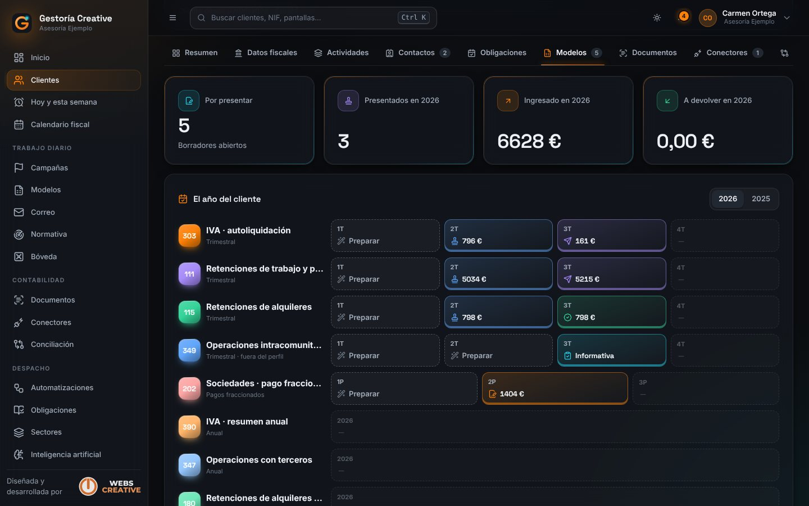<figcaption>Modelos: cifras del año y una rejilla por modelo y trimestre con el estado y el resultado de cada borrador.</figcaption></figure></div><div class="trio"><div class="t-hace"><h3>Qué hace</h3><ul><li>Guarda las actividades CNAE-2025 e IAE del catálogo oficial, marca la principal y conserva las bajas con su fecha.</li><li>Calcula qué presenta el cliente según su situación, su actividad y su territorio fiscal (común, foral, Canarias, Ceuta o Melilla).</li><li>Explica cada obligación en una frase, como «Tiene trabajadores (sí) y está en territorio común → 111 trimestral», y respeta lo cambiado a mano.</li><li>Pregunta los datos que faltan para afinar el perfil, recalcula al contestar y señala servicios que el cliente no tiene contratados.</li><li>Lista los vencimientos del año del cliente y abre el panel de cada uno para cambiar su estado.</li><li>Enseña en Modelos el año por modelo y periodo (303, 111, 115, 349, 202, 390, 347, 180…) y los datos fijos que usan los cálculos.</li></ul></div><div class="t-ves"><h3>Qué ves</h3><ul><li>En Obligaciones, chips con el territorio y la actividad, y los botones Recalcular, Situación completa y Lo que ve el cliente.</li><li>Las subpestañas Obligaciones, Vencimientos, Historial y Normativa, cada una con su contador.</li><li>Cada obligación con su modelo, nombre, periodicidad y organismo; al abrirla, el plazo, la periodicidad y desde cuándo aplica.</li><li>Por separado, las obligaciones pendientes de un dato, las opcionales y las que ya no aplican.</li><li>En Modelos, cuatro cifras (por presentar, presentados, ingresado y a devolver) y celdas por periodo con icono de estado e importe.</li><li>Los datos fijos: prorrata, rendimiento neto anterior para el 130, cuota íntegra del IS para el 202 y locales alquilados para el 180.</li></ul></div><div class="t-gen"><h3>Qué genera</h3><ul><li>El perfil de obligaciones y sus vencimientos en el calendario, que se recalculan solos cuando cambian los datos del cliente.</li><li>Un historial de cambios de obligaciones (entra, sale, cambia de periodicidad, a mano) con quién lo hizo.</li><li>Las obligaciones añadidas o quitadas a mano quedan marcadas «A mano» y el recálculo automático no las toca.</li><li>Con «Preparar» en un periodo cerrado, un borrador del modelo calculado con los libros de facturas, que se abre en Modelos.</li><li>La lista de normas del radar unidas a sus obligaciones, en la subpestaña Normativa.</li></ul></div></div><p class="tip"><strong>Consejo</strong><span>Si un modelo no te cuadra, abre la obligación y lee el porqué: verás qué dato de la ficha la activa.</span></p>
</section>
<section class="mod wrap" id="expediente-documentos-bancos">
  <div class="mod-head"><span class="mod-num">08</span><div>
    <p class="mod-path">Clientes <span>›</span> un cliente <span>›</span> Documentos, Conectores, Conciliación, Bancos, Credenciales</p>
    <h2 class="mod-title">Expediente: documentos, conectores, bancos y conciliación</h2>
    <p class="mod-lead">Aquí llega la documentación y el dinero del cliente: los papeles que sube o te mandan, las facturas que envía su programa y sus cuentas con lo que queda por conciliar.</p></div></div>
  <figure class="shot"><div class="shot-bar" aria-hidden="true"><span class="shot-dots"><i></i><i></i><i></i></span><span class="shot-url">https://gestion.tu-asesoria.es/#/clientes/24?pestana=documentos</span></div>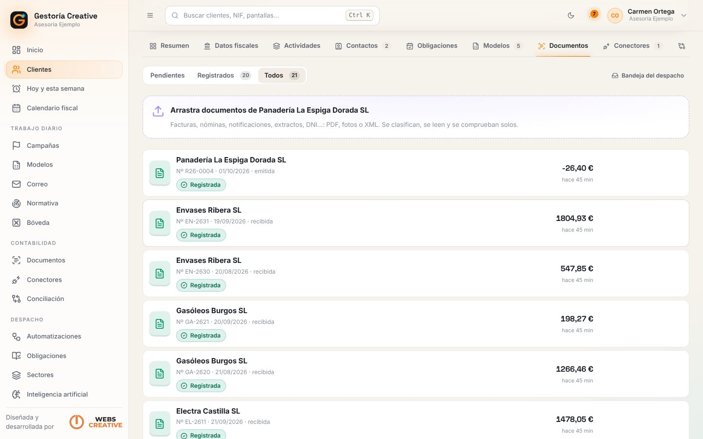<figcaption>Documentos del cliente: zona para arrastrar y la lista con emisor, número, fecha, estado e importe.</figcaption></figure><div class="shots-2"><figure class="shot"><div class="shot-bar" aria-hidden="true"><span class="shot-dots"><i></i><i></i><i></i></span><span class="shot-url">https://gestion.tu-asesoria.es/#/clientes/24?pestana=conectores</span></div>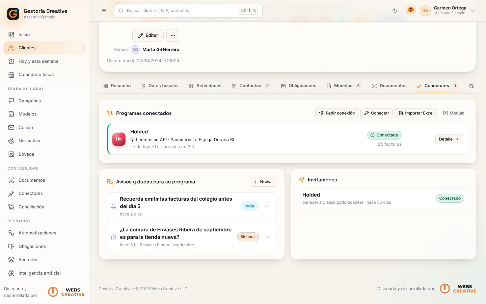<figcaption>Conectores: su programa de facturación (Holded) conectado, con las facturas leídas, avisos para su programa e invitaciones.</figcaption></figure><figure class="shot"><div class="shot-bar" aria-hidden="true"><span class="shot-dots"><i></i><i></i><i></i></span><span class="shot-url">https://gestion.tu-asesoria.es/#/clientes/1?pestana=conciliacion</span></div>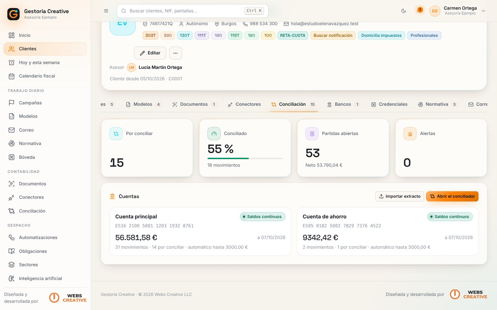<figcaption>Conciliación (cliente C0001 de la demo): por conciliar, porcentaje conciliado, partidas abiertas, alertas y cada cuenta con su saldo.</figcaption></figure><figure class="shot"><div class="shot-bar" aria-hidden="true"><span class="shot-dots"><i></i><i></i><i></i></span><span class="shot-url">https://gestion.tu-asesoria.es/#/clientes/24?pestana=bancos</span></div>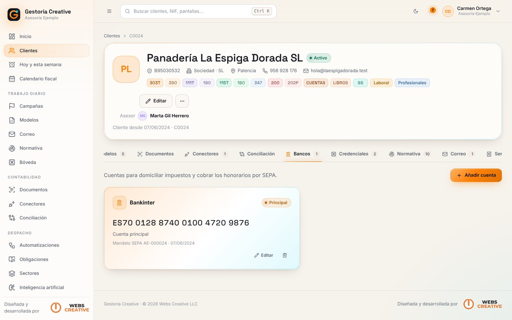<figcaption>Bancos: la cuenta del cliente con IBAN, entidad, cuenta principal y mandato SEPA.</figcaption></figure></div><div class="trio"><div class="t-hace"><h3>Qué hace</h3><ul><li>Recibe documentos (PDF, fotos o XML) ya asignados al cliente; se clasifican, se leen y se comprueban solos.</li><li>Separa los documentos en Pendientes, Registrados y Todos, y abre cada uno para revisarlo.</li><li>Enseña los programas del cliente conectados (Holded, Dolibarr, FacturaScripts u Odoo) con su estado, las facturas recibidas y la próxima lectura.</li><li>Ofrece cuatro formas de conectar: pedírselo al cliente por su portal, conectarlo tú con su clave, importar un Excel o CSV, o el módulo de su programa.</li><li>Resume la conciliación del cliente y comprueba la continuidad de saldos de cada cuenta: continuos, falta un extracto o descuadre.</li><li>Importa extractos en Norma 43, camt, MT940, OFX, QIF, CSV o Excel; la cuenta se crea sola por su IBAN.</li><li>Guarda las cuentas con IBAN validado, BIC, alias, la cuenta para domiciliar impuestos y la referencia y fecha del mandato SEPA.</li></ul></div><div class="t-ves"><h3>Qué ves</h3><ul><li>Contadores por segmento (Registrados 20, Todos 21) y un acceso a la bandeja del despacho.</li><li>Cada documento con icono por tipo, su estado en color y, si los tiene, plazo o caducidad (notificaciones, DNI).</li><li>Para cada conexión, su insignia de estado, cuándo se leyó, cuándo se leerá y cuántas facturas trae.</li><li>En Conciliación, la barra de lo conciliado, el neto de las partidas abiertas y el límite de conciliación automática de cada cuenta.</li><li>La pestaña Credenciales enseña solo lo no secreto de la Bóveda (tipo, organismo y caducidad) y las caducidades de los próximos 90 días.</li></ul></div><div class="t-gen"><h3>Qué genera</h3><ul><li>Documentos en la bandeja del despacho, con su lectura y su propuesta de destino.</li><li>Facturas emitidas y recibidas que llegan solas desde el programa del cliente, como datos exactos y sin OCR.</li><li>Movimientos bancarios importados; se concilian solos los que tienen prueba suficiente y el resto queda para el conciliador.</li><li>Una invitación en el portal del cliente para que conecte su programa, y avisos o dudas que le llegan a ese programa.</li><li>Las cuentas bancarias del cliente, que los demás módulos usan para saber dónde domicilia.</li></ul></div></div><p class="tip"><strong>Consejo</strong><span>Si una cuenta marca «Falta un extracto», importa el que falta antes de conciliar para no dejar huecos en los saldos.</span></p>
</section>
<section class="mod wrap" id="expediente-relacion-historial">
  <div class="mod-head"><span class="mod-num">09</span><div>
    <p class="mod-path">Clientes <span>›</span> un cliente <span>›</span> Normativa, Correo, Servicios, Notas, Portal y conectores, Automatizaciones, Historial</p>
    <h2 class="mod-title">Expediente: normativa, correo, servicios, portal e historial</h2>
    <p class="mod-lead">Las últimas pestañas cubren la relación con el cliente: qué normas nuevas le tocan, qué os habéis escrito, qué paga, quién entra en su portal, qué han hecho las automatizaciones y quién ha cambiado qué.</p></div></div>
  <figure class="shot"><div class="shot-bar" aria-hidden="true"><span class="shot-dots"><i></i><i></i><i></i></span><span class="shot-url">https://gestion.tu-asesoria.es/#/clientes/24?pestana=normativa</span></div>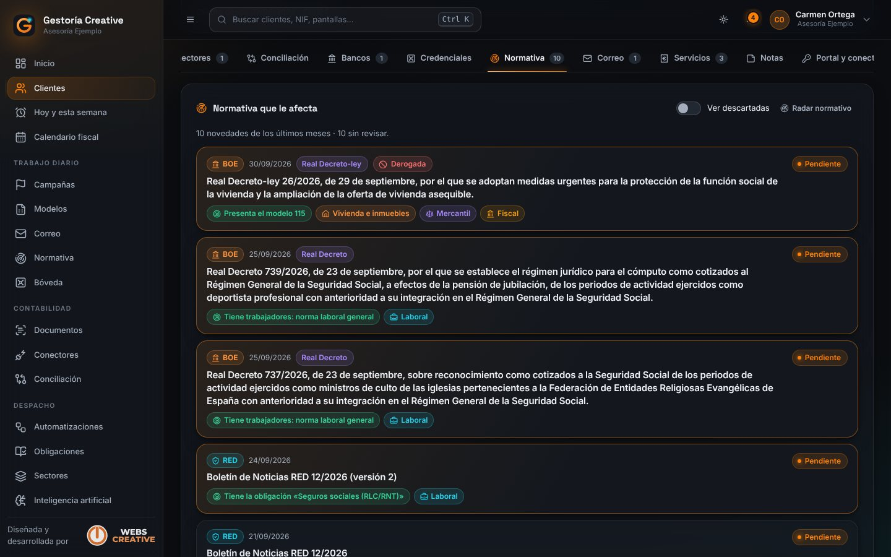<figcaption>Normativa que le afecta: cada norma del BOE o del RED con su motivo para este cliente, su situación y su estado de revisión.</figcaption></figure><div class="shots-2"><figure class="shot"><div class="shot-bar" aria-hidden="true"><span class="shot-dots"><i></i><i></i><i></i></span><span class="shot-url">https://gestion.tu-asesoria.es/#/clientes/24?pestana=honorarios</span></div>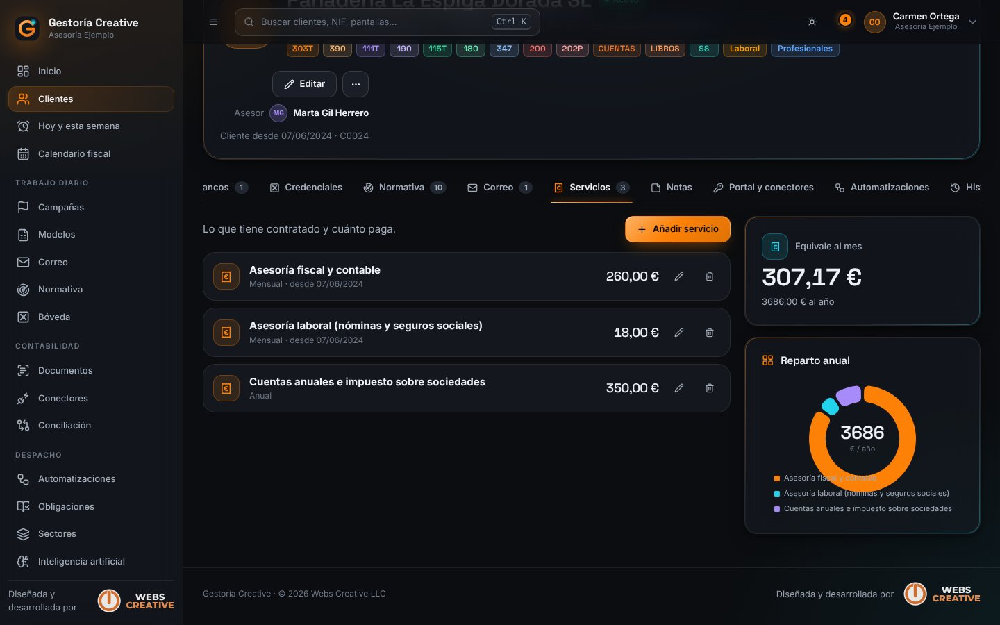<figcaption>Servicios contratados con importe y periodicidad, el equivalente al mes (307,17 €) y el reparto anual.</figcaption></figure><figure class="shot"><div class="shot-bar" aria-hidden="true"><span class="shot-dots"><i></i><i></i><i></i></span><span class="shot-url">https://gestion.tu-asesoria.es/#/clientes/24?pestana=portal</span></div>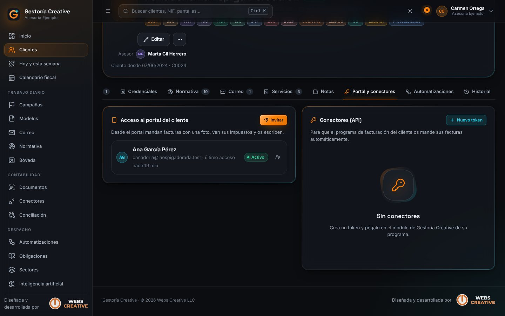<figcaption>Portal y conectores: la persona con acceso al portal y su último acceso, y los tokens de API para su programa.</figcaption></figure><figure class="shot"><div class="shot-bar" aria-hidden="true"><span class="shot-dots"><i></i><i></i><i></i></span><span class="shot-url">https://gestion.tu-asesoria.es/#/clientes/24?pestana=historial</span></div>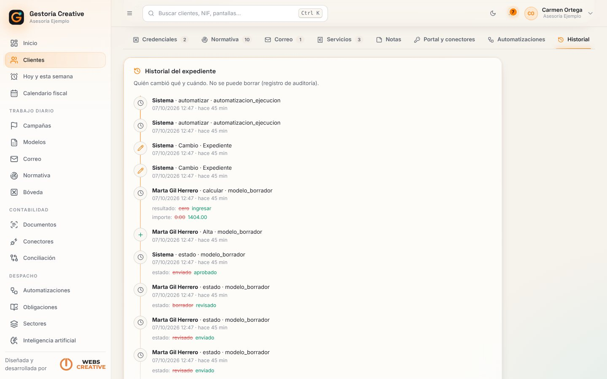<figcaption>Historial del expediente: quién cambió qué y cuándo, con el valor anterior tachado y el nuevo.</figcaption></figure></div><div class="trio"><div class="t-hace"><h3>Qué hace</h3><ul><li>Lista la normativa del radar que afecta al cliente y por qué (su actividad CNAE, sus modelos o su comunidad autónoma), y sus actos del BORME si es sociedad.</li><li>Reúne las conversaciones de correo del cliente en los buzones que ves, con el filtro «Por atender» y búsqueda.</li><li>Registra los servicios contratados con importe sin IVA, periodicidad y fechas, y calcula su cuota mensual y anual.</li><li>Guarda notas internas del equipo, con la opción de fijarlas arriba.</li><li>Invita al portal a titulares o empleados del cliente y crea tokens para que su programa mande facturas, documentos o movimientos.</li><li>Enseña lo que las automatizaciones han hecho, proponen o esperan con el cliente, y permite apagarlas solo para él.</li><li>Guarda el historial del expediente, que no se puede borrar porque es el registro de auditoría.</li></ul></div><div class="t-ves"><h3>Qué ves</h3><ul><li>Cada norma con su anillo de relevancia, fuente, fecha, rango, situación (por ejemplo «Derogada») y el motivo, como «Presenta el modelo 115».</li><li>En Correo, cada conversación con remitente, asunto, extracto y etiquetas, y el botón «Escribir a» el cliente.</li><li>En Servicios, una dona con el reparto anual de los honorarios por servicio.</li><li>En Portal, cada usuario con su correo, su último acceso y el estado Activo o Invitado; los tokens se ven por su prefijo gc_…</li><li>En Automatizaciones, el interruptor «Encendidas», las salvaguardas (máximo de mensajes, horario laboral, Deshacer) y lo hecho con su receta.</li><li>En Historial, una línea de tiempo con el autor (persona o Sistema), la acción, la fecha y los valores antes y después.</li></ul></div><div class="t-gen"><h3>Qué genera</h3><ul><li>Un correo de invitación al portal para que el cliente elija su contraseña, que puedes reenviar.</li><li>Un token de conector que se enseña una sola vez; se guarda solo su huella y se puede revocar.</li><li>Mensajes al cliente desde el correo del despacho con el botón «Escribir a».</li><li>Los servicios y cuotas que alimentan la tarjeta «Cuotas al mes» del inicio.</li><li>Notas internas que solo ve el despacho.</li></ul></div></div><p class="tip"><strong>Consejo</strong><span>Antes de llamar a un cliente, mira su Historial y su Correo: verás qué ha cambiado y qué tiene pendiente.</span></p>
</section>
<section class="mod wrap" id="hoy-y-esta-semana">
  <div class="mod-head"><span class="mod-num">10</span><div>
    <p class="mod-path">Inicio y clientes <span>›</span> Hoy y esta semana</p>
    <h2 class="mod-title">Hoy y esta semana</h2>
    <p class="mod-lead">Es la lista de trabajo de los plazos: lo que vence hoy, lo que se ha pasado, lo que llega en 7 días y los papeles que faltan. Puedes verla solo con tus clientes o con todo el despacho.</p></div></div>
  <figure class="shot"><div class="shot-bar" aria-hidden="true"><span class="shot-dots"><i></i><i></i><i></i></span><span class="shot-url">https://gestion.tu-asesoria.es/#/obligaciones/hoy?todos=1</span></div>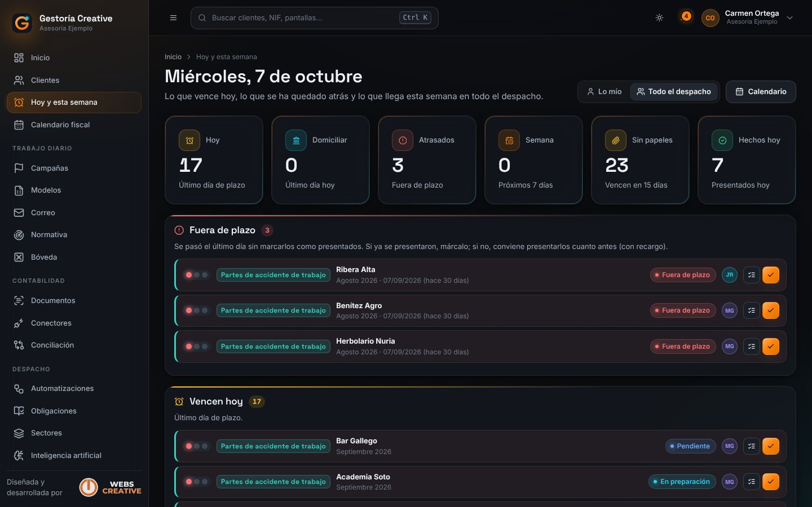<figcaption>Seis cifras arriba y la sección «Fuera de plazo» con semáforo, obligación, cliente, periodo, estado y responsable.</figcaption></figure><div class="shots-2"><figure class="shot"><div class="shot-bar" aria-hidden="true"><span class="shot-dots"><i></i><i></i><i></i></span><span class="shot-url">https://gestion.tu-asesoria.es/#/obligaciones/hoy?todos=1</span></div>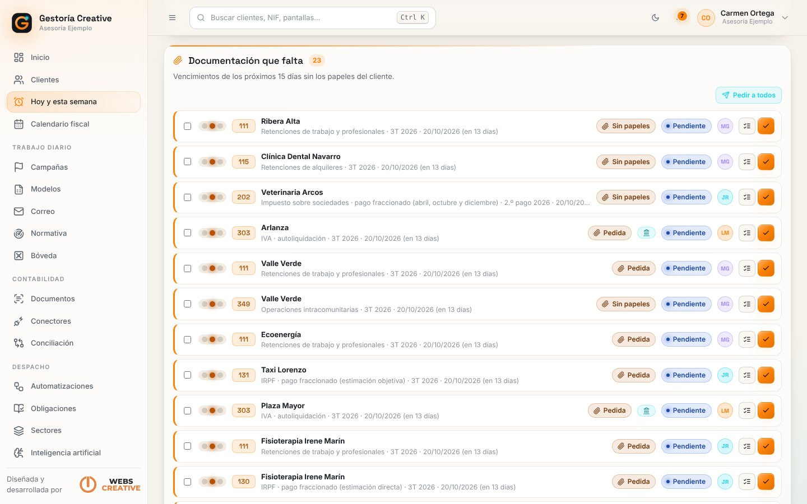<figcaption>Documentación que falta: vencimientos de los próximos 15 días sin papeles, con «Pedir a todos» y casillas para elegir.</figcaption></figure><figure class="shot"><div class="shot-bar" aria-hidden="true"><span class="shot-dots"><i></i><i></i><i></i></span><span class="shot-url">https://gestion.tu-asesoria.es/#/obligaciones/hoy?todos=1</span></div><figcaption>Panel de un vencimiento (303 · 3T 2026): plazo, último día para domiciliar, estado, resultado, importe, justificante, documentación y responsable.</figcaption></figure></div><div class="trio"><div class="t-hace"><h3>Qué hace</h3><ul><li>Separa los vencimientos en Fuera de plazo, Vencen hoy, Domiciliación con último día hoy, Próximos 7 días y Documentación que falta.</li><li>Cambia entre «Lo mío» y «Todo el despacho»; si no eres responsable de nada, pasa sola a todo el despacho y te lo dice.</li><li>Marca un vencimiento como listo para presentar o como presentado con un botón en la propia fila.</li><li>Pide la documentación a uno, a varios o a todos los clientes que no la han mandado, o marca vencimientos como «No procede» con un motivo.</li><li>Enseña los cambios normativos ya aceptados que hay que revisar y los clientes con preguntas pendientes para completar su perfil.</li><li>Abre el panel de cada vencimiento para cambiar estado, resultado, importe, justificante o CSV, responsable, domiciliación y notas.</li></ul></div><div class="t-ves"><h3>Qué ves</h3><ul><li>Seis cifras arriba: Hoy, Domiciliar, Atrasados, Semana, Sin papeles (vencen en 15 días) y Hechos hoy.</li><li>Un semáforo de riesgo, la obligación con su color, el cliente, el periodo y la fecha con «hace 30 días» o «en 13 días».</li><li>Chips «Sin papeles» o «Pedida» y un icono de banco cuando el pago está domiciliado.</li><li>En el panel, la explicación del plazo, como «Del 1 al 20 de octubre de 2026. Domiciliando el pago: hasta el 15 de octubre».</li><li>También en el panel, los periodos anteriores con su estado e importe, el expediente del vencimiento y un enlace a la Sede.</li></ul></div><div class="t-gen"><h3>Qué genera</h3><ul><li>Una petición de documentación que llega al cliente como aviso en su portal y por correo, y deja el vencimiento como «Pedida».</li><li>Cada cambio de estado queda en el expediente del vencimiento, con quién lo hizo y cuándo.</li><li>El CSV o justificante y el resultado (a ingresar, a devolver, cero o a compensar) guardados en el vencimiento.</li><li>Recordatorios automáticos al responsable a 15, 7, 3 y 1 días del final, y aviso cuando algo pasa a fuera de plazo.</li></ul></div></div><p class="tip"><strong>Consejo</strong><span>Revisa cada mañana «Documentación que falta» y pulsa «Pedir a todos»: el cliente lo recibe en su portal y por correo.</span></p>
</section>
<section class="mod wrap" id="calendario-fiscal">
  <div class="mod-head"><span class="mod-num">11</span><div>
    <p class="mod-path">Inicio y clientes <span>›</span> Calendario fiscal</p>
    <h2 class="mod-title">Calendario fiscal y laboral</h2>
    <p class="mod-lead">Muestra todos los plazos de tu cartera en vista de mes, semana o agenda. Las fechas salen de reglas oficiales con festivos y prórrogas, y cada día dice cuántos clientes quedan por hacer.</p></div></div>
  <figure class="shot"><div class="shot-bar" aria-hidden="true"><span class="shot-dots"><i></i><i></i><i></i></span><span class="shot-url">https://gestion.tu-asesoria.es/#/calendario</span></div>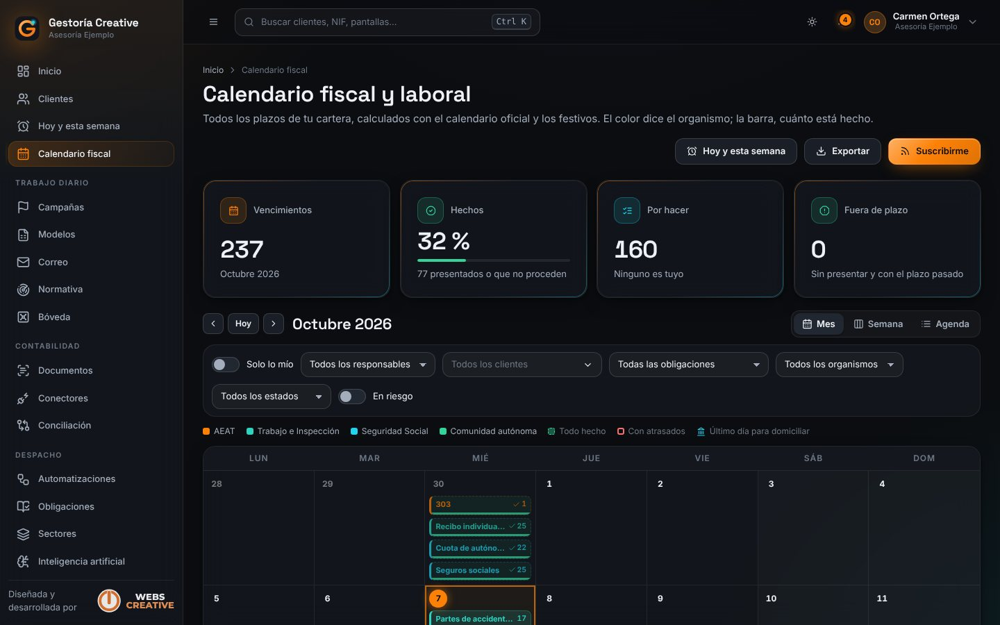<figcaption>Cifras del mes, navegación, cambio entre Mes, Semana y Agenda, filtros y leyenda de colores por organismo.</figcaption></figure><div class="shots-2"><figure class="shot"><div class="shot-bar" aria-hidden="true"><span class="shot-dots"><i></i><i></i><i></i></span><span class="shot-url">https://gestion.tu-asesoria.es/#/calendario</span></div>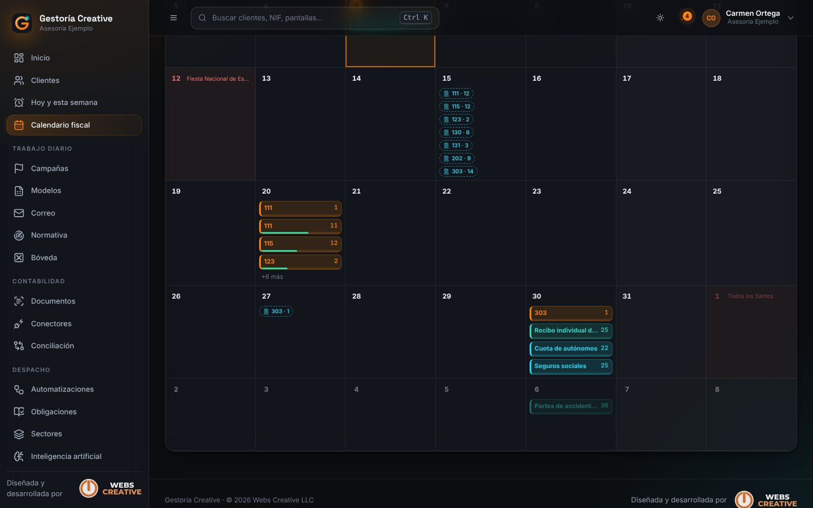<figcaption>Vista de mes: el festivo del 12 de octubre, los últimos días para domiciliar el 15 y los modelos que vencen el 20, con su barra de avance.</figcaption></figure><figure class="shot"><div class="shot-bar" aria-hidden="true"><span class="shot-dots"><i></i><i></i><i></i></span><span class="shot-url">https://gestion.tu-asesoria.es/#/calendario?vista=agenda</span></div>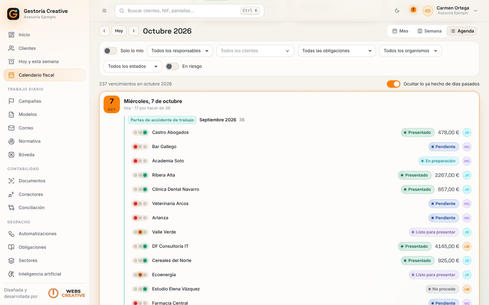<figcaption>Vista de agenda: cada día con sus obligaciones y, debajo, cada cliente con semáforo, estado, importe y responsable.</figcaption></figure><figure class="shot"><div class="shot-bar" aria-hidden="true"><span class="shot-dots"><i></i><i></i><i></i></span><span class="shot-url">https://gestion.tu-asesoria.es/#/calendario</span></div>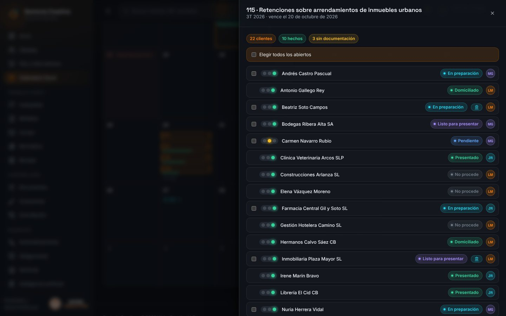<figcaption>Al pulsar un día y un modelo (115 · 3T 2026), la lista de sus clientes con su estado y las acciones en bloque.</figcaption></figure></div><div class="trio"><div class="t-hace"><h3>Qué hace</h3><ul><li>Calcula los vencimientos con reglas de plazo de 273 obligaciones (AEAT, TGSS, mercantiles, forales, Canarias, Ceuta y Melilla) y el último día para domiciliar.</li><li>Ajusta los plazos que caen en día inhábil según la regla de cada obligación, con festivos nacionales, autonómicos y locales.</li><li>Filtra por solo lo mío, responsable, cliente, obligación, organismo, estado y vencimientos en riesgo.</li><li>Agrupa en cada día los clientes por obligación y periodo, con cuántos están hechos y cuántos fuera de plazo.</li><li>Cambia en bloque el estado de los vencimientos elegidos (en preparación, listos, presentados o no procede) y pide la documentación.</li><li>Abre en vista de agenda en el móvil y te deja ocultar lo ya hecho de días pasados.</li></ul></div><div class="t-ves"><h3>Qué ves</h3><ul><li>Cuatro cifras del mes: vencimientos, porcentaje hecho, por hacer (y cuántos son tuyos) y fuera de plazo.</li><li>Chips de color por organismo (AEAT, Trabajo e Inspección, Seguridad Social, Comunidad autónoma) con lo pendiente y una barra de avance.</li><li>Los festivos en rojo dentro de la celda y chips con icono de banco el último día para domiciliar, como «303 · 14».</li><li>Los botones Hoy y esta semana, Exportar y Suscribirme arriba a la derecha.</li><li>En la agenda, cada día con «hoy», «mañana» o «en N días» y cuántos quedan por hacer de cuántos.</li></ul></div><div class="t-gen"><h3>Qué genera</h3><ul><li>Un CSV separado por punto y coma con los vencimientos del rango y los filtros: cliente, NIF, obligación, periodo, estado, responsable, importe y justificante.</li><li>Una suscripción iCalendar con dirección secreta para Google Calendar, Outlook o el iPhone, con aviso 3 días y 1 día antes.</li><li>La suscripción incluye solo tus vencimientos o todos los que puedes ver, y se revoca cuando quieras.</li><li>Cambios de estado en bloque, anotados en el expediente de cada vencimiento.</li><li>Peticiones de documentación en bloque, que llegan a cada cliente en su portal y por correo.</li></ul></div></div><p class="tip"><strong>Consejo</strong><span>Suscríbete con «Los míos» desde el calendario del móvil y tendrás tus plazos con aviso 3 días y 1 día antes.</span></p>
</section>
<div class="group-wrap"><div class="wrap group-head"><p class="eyebrow">Grupo del menú</p><h2>Trabajo diario</h2><p>Las pantallas donde el despacho trabaja cada día: campañas de vencimientos, borradores de los modelos, correo, novedades normativas y la bóveda de credenciales de los clientes.</p><ol class="group-list"><li><a href="#campanas"><span>12</span>Campañas</a></li><li><a href="#modelos-campana"><span>13</span>Modelos tributarios</a></li><li><a href="#modelos-borrador"><span>14</span>Borrador de un modelo</a></li><li><a href="#correo"><span>15</span>Correo</a></li><li><a href="#normativa"><span>16</span>Radar normativo</a></li><li><a href="#normativa-borme-fuentes"><span>17</span>Radar normativo: BORME, catálogo y fuentes</a></li><li><a href="#boveda"><span>18</span>Bóveda de credenciales y certificados</a></li></ol></div></div>
<section class="mod wrap" id="campanas">
  <div class="mod-head"><span class="mod-num">12</span><div>
    <p class="mod-path">Trabajo diario <span>›</span> Campañas</p>
    <h2 class="mod-title">Campañas</h2>
    <p class="mod-lead">Reúne un periodo de uno o varios modelos para toda la cartera, como «Trimestre 3T 2026». Ves de un vistazo quién lleva cada cliente, qué falta y cuánto queda para el plazo.</p></div></div>
  <figure class="shot"><div class="shot-bar" aria-hidden="true"><span class="shot-dots"><i></i><i></i><i></i></span><span class="shot-url">https://gestion.tu-asesoria.es/#/campanas</span></div>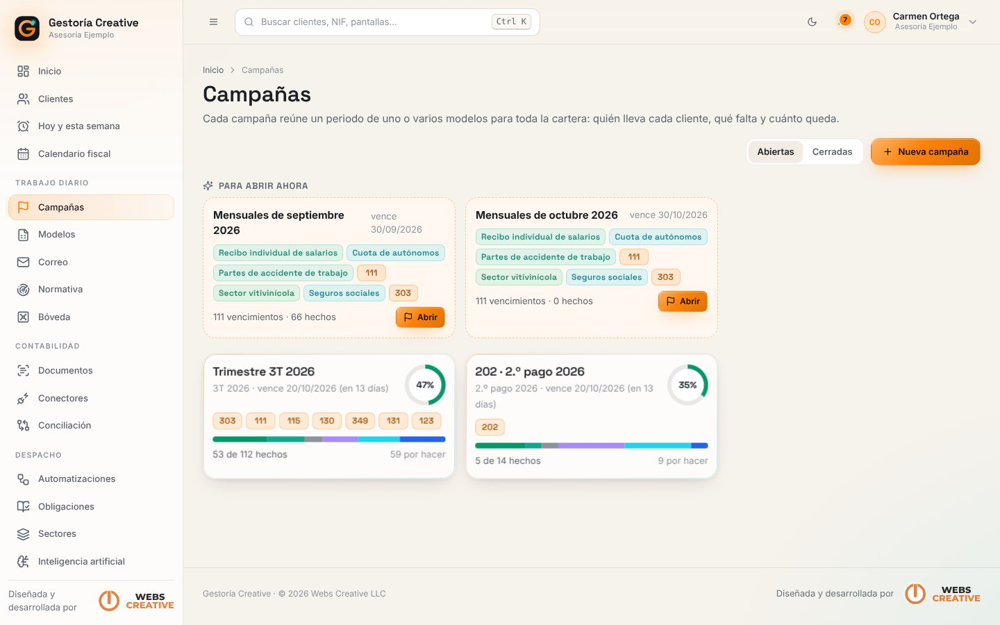<figcaption>Campañas abiertas con su avance y, arriba, las que conviene abrir ahora.</figcaption></figure><div class="shots-2"><figure class="shot"><div class="shot-bar" aria-hidden="true"><span class="shot-dots"><i></i><i></i><i></i></span><span class="shot-url">https://gestion.tu-asesoria.es/#/campanas/1</span></div>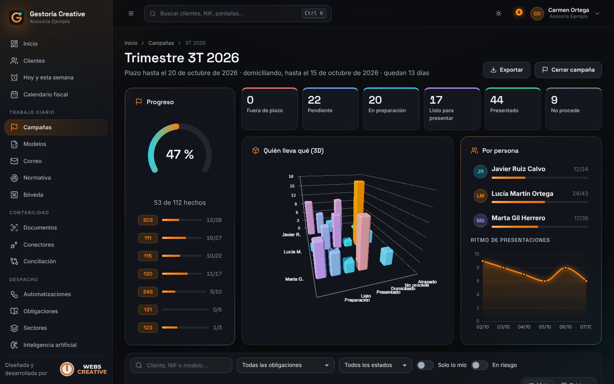<figcaption>Tablero de la campaña: progreso por modelo, recuento por estado, reparto por asesor y ritmo de presentaciones.</figcaption></figure><figure class="shot"><div class="shot-bar" aria-hidden="true"><span class="shot-dots"><i></i><i></i><i></i></span><span class="shot-url">https://gestion.tu-asesoria.es/#/campanas/1</span></div>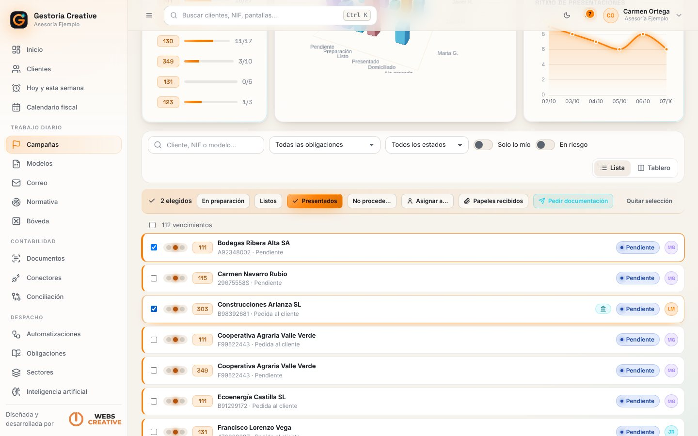<figcaption>Lista de vencimientos con dos elegidos: aparece la barra de cambios en bloque.</figcaption></figure><figure class="shot"><div class="shot-bar" aria-hidden="true"><span class="shot-dots"><i></i><i></i><i></i></span><span class="shot-url">https://gestion.tu-asesoria.es/#/campanas/1</span></div>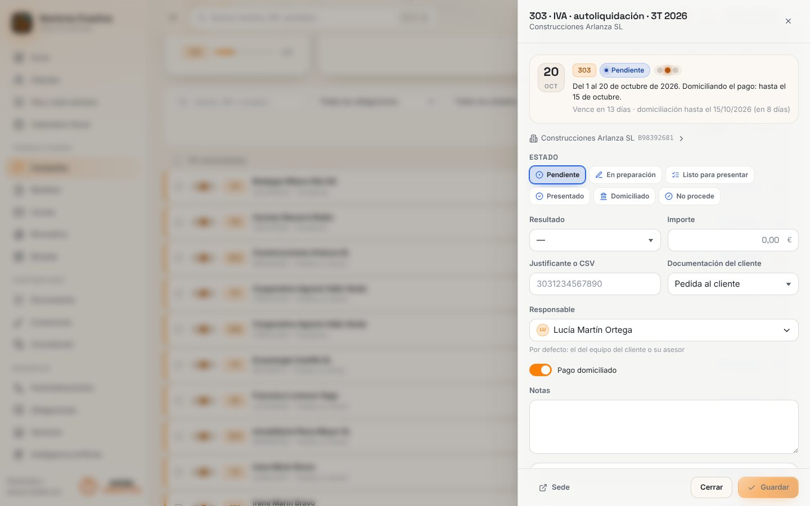<figcaption>Panel de un vencimiento: plazo, estado, resultado, documentación del cliente y responsable.</figcaption></figure></div><div class="trio"><div class="t-hace"><h3>Qué hace</h3><ul><li>Agrupa en un solo tablero los vencimientos de un periodo, por ejemplo el 303, 111, 115, 130 y 349 del 3T, de todos tus clientes.</li><li>Te propone las campañas que conviene abrir, con los periodos cuyo plazo acaba en las próximas semanas, y las abre con un clic.</li><li>Te deja crear una campaña a medida eligiendo ejercicio, periodo (1T a 4T, un mes, 0A o los pagos 1P a 3P) y obligaciones.</li><li>Cambia en bloque el estado, el responsable o la documentación de los vencimientos que elijas.</li><li>Pide la documentación a varios clientes a la vez con un aviso en su portal y un correo.</li><li>Pone sola el estado «Fuera de plazo» y recibe el «Presentado» cuando registras la presentación en Modelos.</li><li>Recuerda a cada responsable lo que vence a 15, 7, 3 y 1 días del final, y al cliente solo si el despacho lo activa.</li></ul></div><div class="t-ves"><h3>Qué ves</h3><ul><li>Una tarjeta por campaña con su porcentaje, los modelos que incluye, una barra de colores por estado y lo que queda por hacer.</li><li>La fecha límite del plazo, la de domiciliar el pago y los días que quedan.</li><li>Contadores por estado: fuera de plazo, pendiente, en preparación, listo para presentar, presentado y no procede.</li><li>Un gráfico 3D de quién lleva qué, el avance de cada asesor y el ritmo de presentaciones por día.</li><li>Filtros por cliente, NIF, obligación y estado, «Solo lo mío» y «En riesgo», en lista o en tablero por columnas.</li><li>Cada fila con semáforo de riesgo, modelo, cliente, NIF, documentación, importe, pago domiciliado, estado y responsable.</li><li>La ficha de cada vencimiento con resultado, importe, justificante o CSV, notas, periodos anteriores y el historial de cambios.</li></ul></div><div class="t-gen"><h3>Qué genera</h3><ul><li>Exportación CSV de los vencimientos con fecha límite, cliente, NIF, obligación, periodo, estado, documentación, responsable, resultado, importe y justificante.</li><li>Avisos de recordatorio al responsable, agrupados por tramo de días, y también por correo si lo tiene activado en su perfil.</li><li>Aviso en el portal y correo al cliente cuando le pides la documentación, que queda como «Pedida al cliente».</li><li>Aviso el último día para presentar domiciliando y aviso único de lo que se ha quedado fuera de plazo.</li><li>Historial de cada vencimiento con quién cambió el estado, la documentación, el responsable o el resultado.</li></ul></div></div><p class="tip"><strong>Consejo</strong><span>Activa «Solo lo mío» y «En riesgo» a primera hora: verás lo tuyo que vence pronto o que aún espera la documentación del cliente.</span></p>
</section>
<section class="mod wrap" id="modelos-campana">
  <div class="mod-head"><span class="mod-num">13</span><div>
    <p class="mod-path">Trabajo diario <span>›</span> Modelos</p>
    <h2 class="mod-title">Modelos tributarios</h2>
    <p class="mod-lead">Prepara solos los borradores de los modelos de cada cliente al terminar el periodo, calculados con su libro de facturas. Aquí ves un modelo y un periodo para toda la cartera y trabajas en bloque.</p></div></div>
  <figure class="shot"><div class="shot-bar" aria-hidden="true"><span class="shot-dots"><i></i><i></i><i></i></span><span class="shot-url">https://gestion.tu-asesoria.es/#/modelos?modelo=303&amp;periodo=2026-3T</span></div>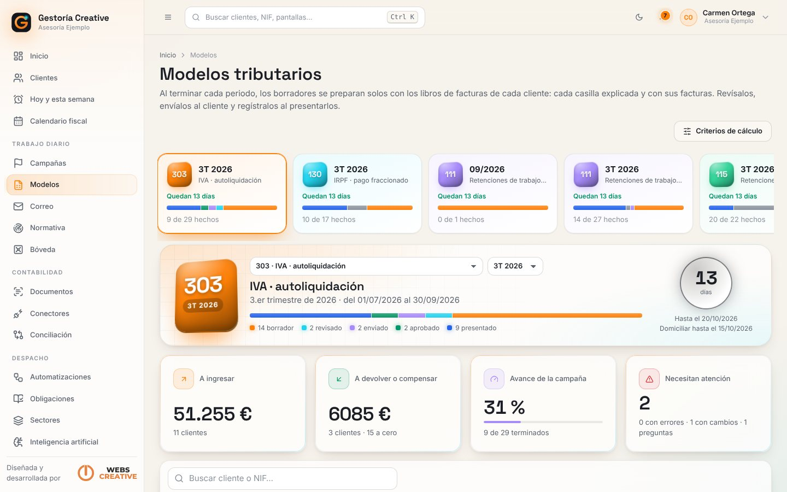<figcaption>Campaña del 303 del 3T 2026: estados, plazo, fecha para domiciliar e importes de toda la cartera.</figcaption></figure><div class="shots-2"><figure class="shot"><div class="shot-bar" aria-hidden="true"><span class="shot-dots"><i></i><i></i><i></i></span><span class="shot-url">https://gestion.tu-asesoria.es/#/modelos?modelo=303&amp;periodo=2026-3T</span></div>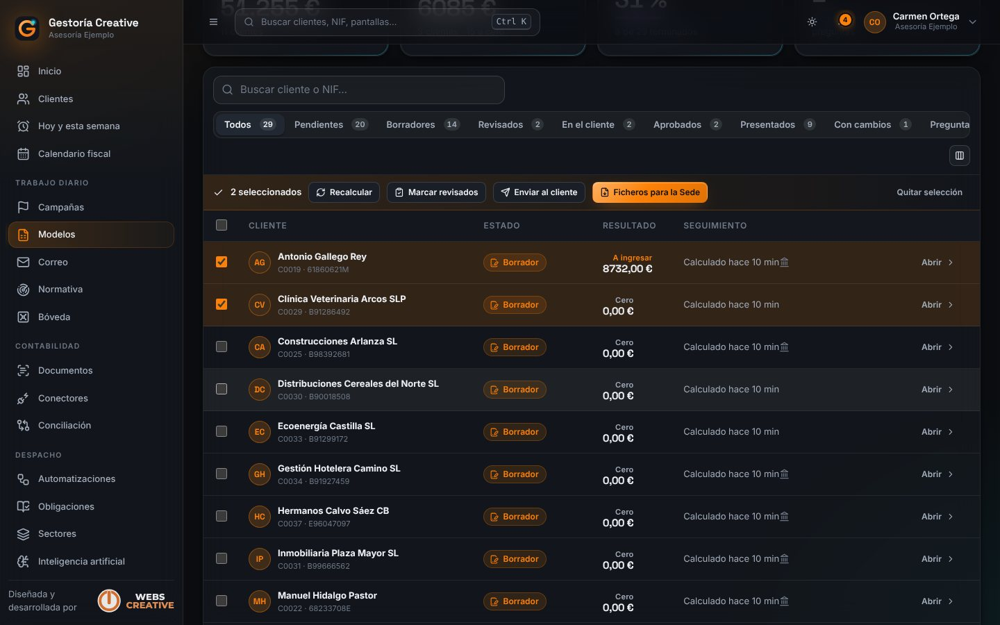<figcaption>Clientes de la campaña con su estado, resultado y seguimiento; al elegir varios salen las acciones en bloque.</figcaption></figure></div><div class="trio"><div class="t-hace"><h3>Qué hace</h3><ul><li>Calcula los borradores del 303, 130, 111, 115, 349, 347, 390, 180, 190, 202 y 309 con el libro de facturas de cada cliente.</li><li>La tarea programada los prepara sola al terminar cada periodo, para los clientes que presentan ese modelo y mientras el plazo siga abierto.</li><li>Salta lo que en Obligaciones ya figura como «no procede», «presentado» o «domiciliado».</li><li>Vuelve a comprobar el borrador cuando se guarda o anula una factura o se concilia un cobro, y recalcula solo lo que aún no está revisado.</li><li>Te deja preparar los que faltan, recalcular, marcar como revisados y enviar al cliente varios borradores a la vez.</li><li>Aplica los criterios de cálculo del despacho, como devengo o expedición, retenciones por fecha de pago o umbral del 347, salvo en clientes con criterios propios.</li></ul></div><div class="t-ves"><h3>Qué ves</h3><ul><li>Una ficha por cada campaña abierta, por modelo y periodo, con los días que quedan y cuántos están hechos.</li><li>El selector de modelo y periodo, la barra de estados y la cuenta atrás hasta el plazo con la fecha límite para domiciliar.</li><li>Cuatro indicadores: total a ingresar, a devolver o compensar, avance de la campaña y borradores que necesitan atención.</li><li>Filtros por estado: pendientes, sin preparar, borradores, revisados, en el cliente, aprobados, presentados, con errores, con cambios y con preguntas.</li><li>Cada cliente con su estado, marcas de errores, cambios en el libro o preguntas sin contestar, el resultado y el seguimiento.</li><li>Un aviso cuando la AEAT publica un diseño de registro distinto del que sigue la aplicación, con enlace a la Sede.</li></ul></div><div class="t-gen"><h3>Qué genera</h3><ul><li>ZIP con los ficheros para la Sede de los borradores elegidos, hasta 500, y un LEEME.txt con avisos y lo que no se ha podido generar.</li><li>Aviso en el portal del cliente, «Tu modelo está listo para revisar», cada vez que le envías un borrador.</li><li>Una versión nueva del borrador cada vez que cambia lo que se declara, sin borrar las anteriores.</li><li>Avisos al asesor cuando cambia un borrador ya enviado o aprobado, cuando el cliente lo aprueba y cuando pregunta.</li></ul></div></div><p class="tip"><strong>Consejo</strong><span>Filtra por «Con cambios» antes de enviar nada: son los borradores cuyas facturas o cobros han cambiado desde el último cálculo.</span></p>
</section>
<section class="mod wrap" id="modelos-borrador">
  <div class="mod-head"><span class="mod-num">14</span><div>
    <p class="mod-path">Trabajo diario <span>›</span> Modelos <span>›</span> abrir un cliente</p>
    <h2 class="mod-title">Borrador de un modelo</h2>
    <p class="mod-lead">Cada borrador enseña las casillas del impreso con su explicación y las facturas que las forman. Lo revisas, lo envías al cliente y, después de presentarlo tú en la Sede, registras aquí el justificante.</p></div></div>
  <figure class="shot"><div class="shot-bar" aria-hidden="true"><span class="shot-dots"><i></i><i></i><i></i></span><span class="shot-url">https://gestion.tu-asesoria.es/#/modelos/9</span></div>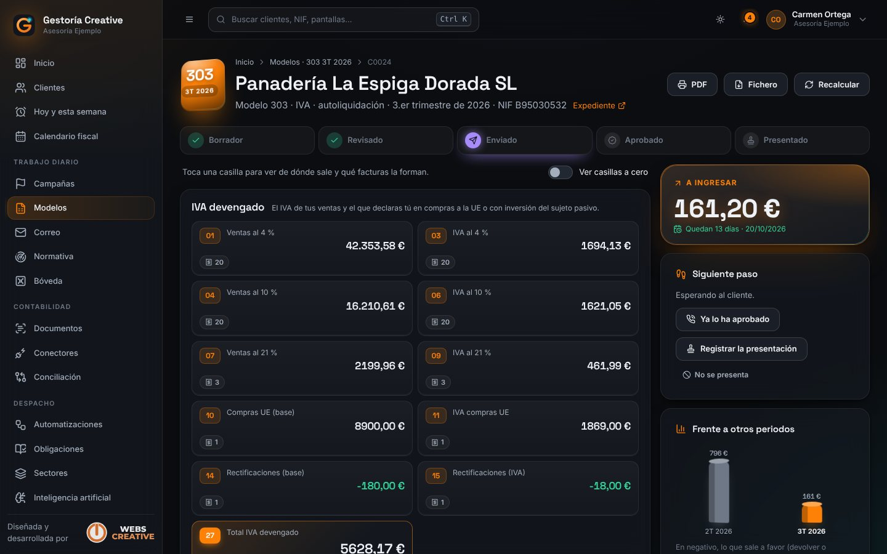<figcaption>Borrador del 303 del 3T 2026 enviado al cliente: pasos del trabajo, casillas del IVA devengado y resultado a ingresar.</figcaption></figure><div class="shots-2"><figure class="shot"><div class="shot-bar" aria-hidden="true"><span class="shot-dots"><i></i><i></i><i></i></span><span class="shot-url">https://gestion.tu-asesoria.es/#/modelos/9</span></div>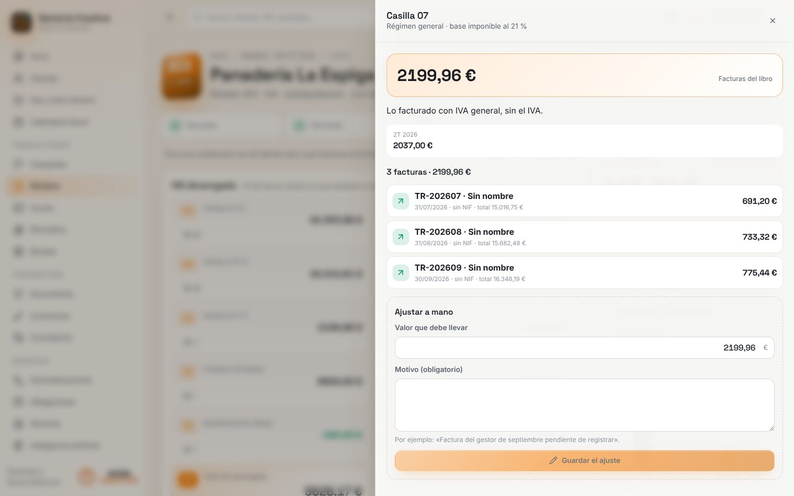<figcaption>Detalle de una casilla: explicación, valor del periodo anterior, facturas que la forman y ajuste a mano con motivo.</figcaption></figure><figure class="shot"><div class="shot-bar" aria-hidden="true"><span class="shot-dots"><i></i><i></i><i></i></span><span class="shot-url">https://gestion.tu-asesoria.es/#/modelos/9</span></div>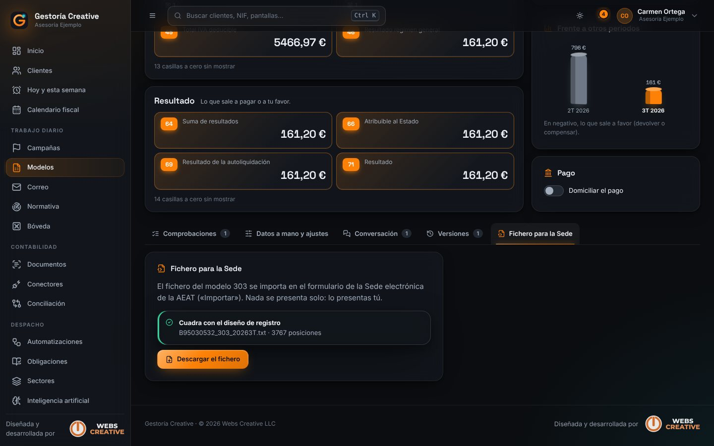<figcaption>Pestaña «Fichero para la Sede»: el fichero cuadra con el diseño de registro y está listo para descargar.</figcaption></figure><figure class="shot"><div class="shot-bar" aria-hidden="true"><span class="shot-dots"><i></i><i></i><i></i></span><span class="shot-url">https://gestion.tu-asesoria.es/#/modelos/9</span></div>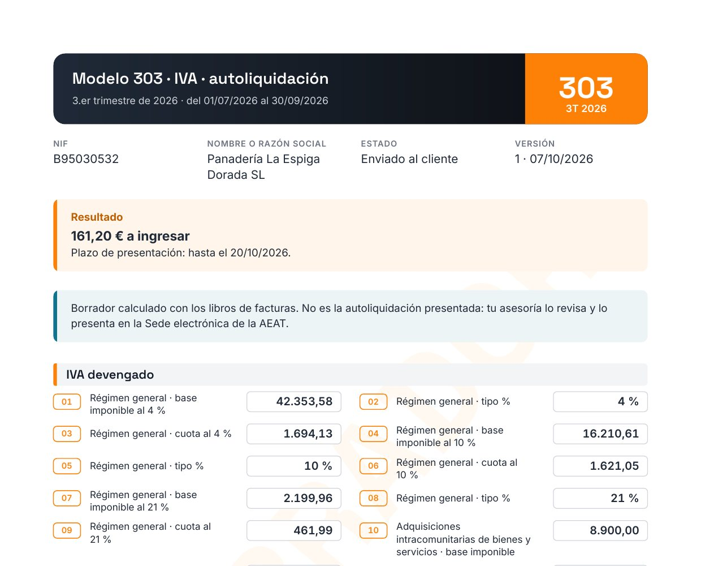<figcaption>Primera página del PDF que genera el botón «PDF», con la marca de agua de borrador.</figcaption></figure></div><div class="trio"><div class="t-hace"><h3>Qué hace</h3><ul><li>Calcula cada casilla y guarda de dónde sale: las facturas que la forman, la regla aplicada con su artículo y la fórmula si es un total.</li><li>Pasa comprobaciones como NIF que faltan o no válidos, facturas duplicadas, tipos de IVA que no cuadran o un resultado muy distinto del periodo anterior.</li><li>Te deja ajustar una casilla con motivo obligatorio, poner datos que no salen del libro y clasificar facturas sin tocar el libro.</li><li>Sigue los pasos borrador, revisado, enviado, aprobado y presentado, o «no se presenta» con su motivo.</li><li>Recoge la aprobación del cliente desde su portal, o la que te da por teléfono, correo o en persona.</li><li>Registra la presentación con fecha, CSV, NRC, importe y justificante, y lo pasa a Obligaciones y a Bancos.</li><li>Si cambian facturas de un periodo ya presentado, no toca lo presentado: guarda cómo saldría ahora y te avisa por si hace falta una complementaria.</li></ul></div><div class="t-ves"><h3>Qué ves</h3><ul><li>La cabecera con el cliente, el NIF, el enlace a su expediente y los botones PDF, Fichero y Recalcular.</li><li>Los pasos del trabajo y un aviso cuando han cambiado facturas o cobros desde el último cálculo.</li><li>Las casillas por secciones con su número, importe y número de facturas; las que están a cero se ocultan salvo que las pidas.</li><li>El resultado con los días que quedan y una comparación con el periodo anterior y el mismo del año pasado.</li><li>La tarjeta «Siguiente paso» y la tarjeta de pago para domiciliar con una cuenta del cliente.</li><li>Pestañas de comprobaciones, datos a mano y ajustes, conversación con el cliente, versiones y fichero para la Sede.</li></ul></div><div class="t-gen"><h3>Qué genera</h3><ul><li>PDF del borrador con datos del contribuyente, resultado, casillas y tablas de detalle, con marca de agua «BORRADOR» hasta que se presenta.</li><li>Fichero en formato BOE (TXT en ISO-8859-1) para importar en la Sede: 303, 130, 111, 115, 349, 347, 180 y 190.</li><li>El 390, el 202 y el 309 se calculan, pero aún no tienen fichero: el borrador trae las casillas para copiarlas en el formulario de la Sede.</li><li>Registro de la aprobación con quién, cuándo, desde dónde y qué versión, sellado para detectar cambios.</li><li>Registro de la presentación, que marca el vencimiento en Obligaciones y deja en Bancos el cargo o la devolución esperados por el NRC.</li><li>Mensajes al cliente en la conversación del borrador, que le llegan como aviso a su portal.</li></ul></div></div><p class="tip"><strong>Consejo</strong><span>Antes de enviar un borrador, abre «Comprobaciones»: los errores salen primero y algunos se arreglan con un clic, como «Es un bien de inversión».</span></p>
</section>
<section class="mod wrap" id="correo">
  <div class="mod-head"><span class="mod-num">15</span><div>
    <p class="mod-path">Trabajo diario <span>›</span> Correo</p>
    <h2 class="mod-title">Correo</h2>
    <p class="mod-lead">Lleva los buzones personales y compartidos del despacho dentro de la aplicación. Cada conversación se une al expediente de su cliente y los adjuntos pasan a Documentos con un botón.</p></div></div>
  <figure class="shot"><div class="shot-bar" aria-hidden="true"><span class="shot-dots"><i></i><i></i><i></i></span><span class="shot-url">https://gestion.tu-asesoria.es/#/correo</span></div>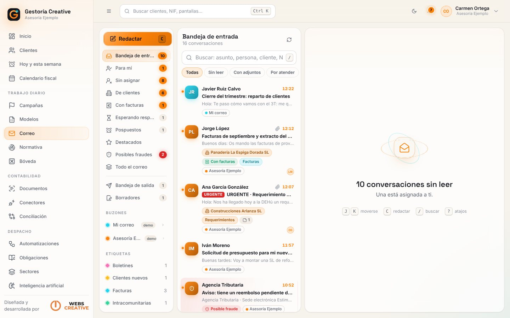<figcaption>Bandeja de tres paneles con vistas inteligentes, buzones, etiquetas y cada conversación marcada con su cliente, tipo y riesgo.</figcaption></figure><div class="shots-2"><figure class="shot"><div class="shot-bar" aria-hidden="true"><span class="shot-dots"><i></i><i></i><i></i></span><span class="shot-url">https://gestion.tu-asesoria.es/#/correo?hilo=4</span></div>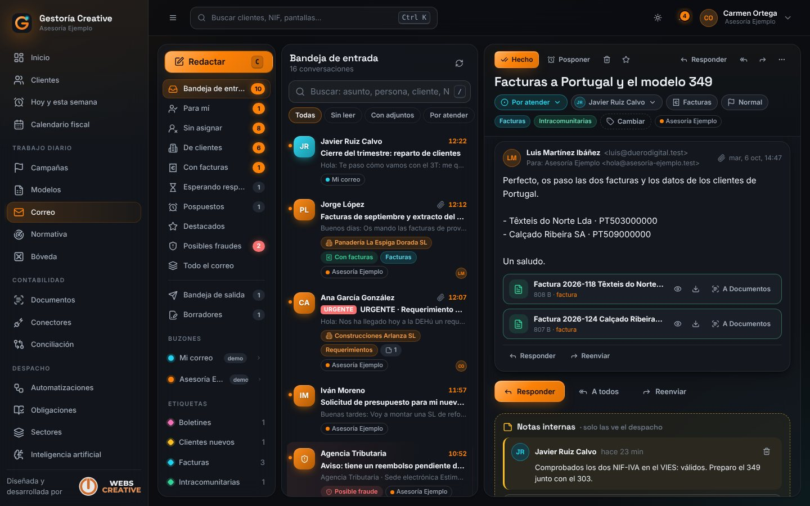<figcaption>Conversación abierta: estado, responsable, etiquetas, adjuntos con «A Documentos» y notas internas.</figcaption></figure><figure class="shot"><div class="shot-bar" aria-hidden="true"><span class="shot-dots"><i></i><i></i><i></i></span><span class="shot-url">https://gestion.tu-asesoria.es/#/correo/ajustes</span></div>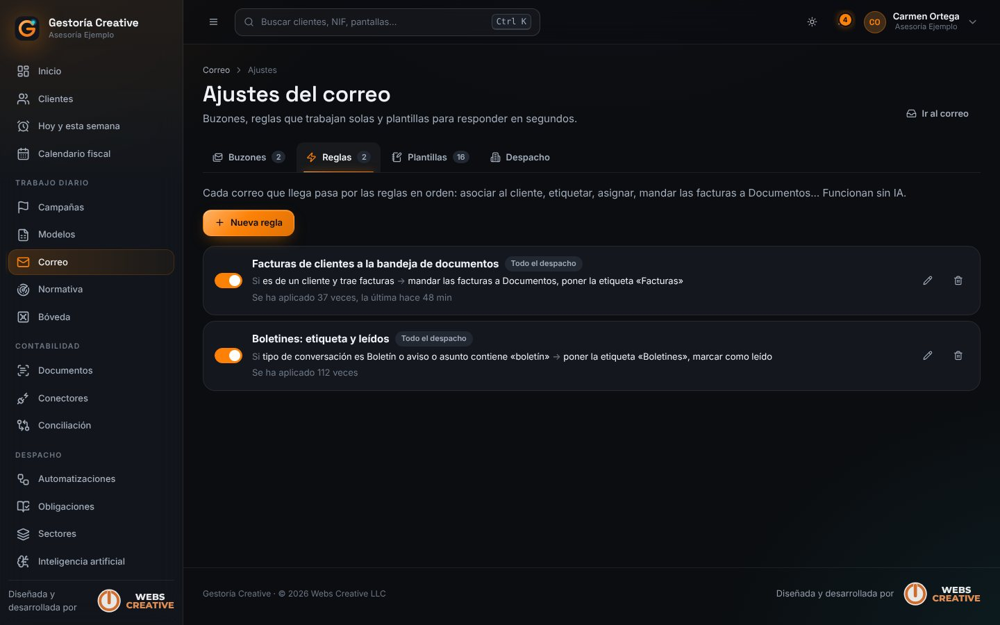<figcaption>Ajustes del correo › Reglas: lo que se hace solo con cada correo que llega.</figcaption></figure><figure class="shot"><div class="shot-bar" aria-hidden="true"><span class="shot-dots"><i></i><i></i><i></i></span><span class="shot-url">https://gestion.tu-asesoria.es/#/correo/ajustes</span></div>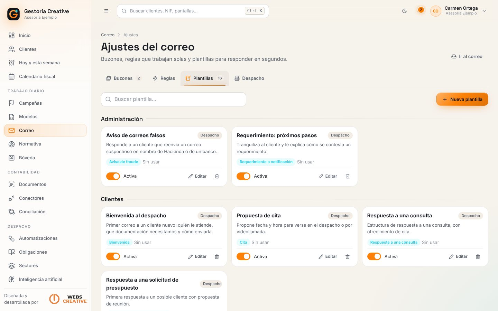<figcaption>Ajustes del correo › Plantillas del despacho, agrupadas por categoría.</figcaption></figure></div><div class="trio"><div class="t-hace"><h3>Qué hace</h3><ul><li>Conecta buzones por IMAP y SMTP con contraseña, o con Google y Microsoft sin darla, y propone la configuración a partir de la dirección.</li><li>Trae el correo cada minuto sin marcar nada como leído y sin borrar nunca nada en el servidor.</li><li>Une cada conversación a su cliente por la dirección exacta de un contacto o por su dominio propio, nunca por dominios gratuitos.</li><li>Clasifica lo que llega con reglas explicables: requerimiento, notificación, facturas, consulta, cita, laboral, pagos, posible cliente o boletín, y su urgencia.</li><li>Detecta suplantaciones de Hacienda, la Seguridad Social o bancos y cambios de cuenta, y en los de riesgo alto desactiva enlaces e imágenes.</li><li>Aplica reglas «si… entonces…» del despacho o de cada persona: etiquetar, asignar, mover, mandar facturas a Documentos o preparar un borrador con plantilla.</li><li>Con la IA activada, clasifica, resume y propone respuestas, pero nunca envía nada ni asocia clientes por su cuenta.</li></ul></div><div class="t-ves"><h3>Qué ves</h3><ul><li>Vistas inteligentes: bandeja de entrada, para mí, sin asignar, de clientes, con facturas, esperando respuesta, pospuestos, destacados y posibles fraudes.</li><li>La lista de conversaciones con el cliente, la etiqueta, si es urgente y si trae facturas o adjuntos.</li><li>Cada conversación con su estado, responsable, etiquetas y prioridad, los botones Hecho, Posponer, Responder y Reenviar, y las notas internas.</li><li>Los adjuntos con vista previa, descarga y el botón «A Documentos».</li><li>En Ajustes, las pestañas de buzones, reglas con las veces que se han aplicado, plantillas por categoría y ajustes del despacho.</li><li>Atajos de teclado: J y K para moverte, R para responder, E para darla por hecha y / para buscar.</li></ul></div><div class="t-gen"><h3>Qué genera</h3><ul><li>Correos enviados por el SMTP del buzón, con un margen para deshacer de 0 a 30 segundos y envío programado.</li><li>Respuestas con plantillas que se rellenan solas con datos del cliente y sus plazos, como {{cliente.nombre}}.</li><li>Adjuntos en la bandeja de Documentos para leerlos y registrarlos, y las facturas de clientes conocidos de forma automática si lo activas.</li><li>Notas internas con menciones que solo ve el despacho.</li><li>La pestaña «Correo» del expediente de cada cliente, con todas sus conversaciones.</li></ul></div></div><p class="tip"><strong>Consejo</strong><span>Si un cliente te reenvía un correo sospechoso «de Hacienda», contéstale con la plantilla «Aviso de correos falsos».</span></p>
</section>
<section class="mod wrap" id="normativa">
  <div class="mod-head"><span class="mod-num">16</span><div>
    <p class="mod-path">Trabajo diario <span>›</span> Normativa</p>
    <h2 class="mod-title">Radar normativo</h2>
    <p class="mod-lead">Lee cada día los boletines oficiales, clasifica cada novedad y la cruza con tu cartera. Solo avisa a los asesores de los clientes a los que afecta.</p></div></div>
  <figure class="shot"><div class="shot-bar" aria-hidden="true"><span class="shot-dots"><i></i><i></i><i></i></span><span class="shot-url">https://gestion.tu-asesoria.es/#/normativa</span></div><figcaption>Cabecera con la salud de las fuentes, indicadores del radar y pulso normativo por ámbito y semana.</figcaption></figure><div class="shots-2"><figure class="shot"><div class="shot-bar" aria-hidden="true"><span class="shot-dots"><i></i><i></i><i></i></span><span class="shot-url">https://gestion.tu-asesoria.es/#/normativa</span></div><figcaption>Lista de novedades con filtros por estado, fuente, situación y territorio, y los clientes afectados de cada norma.</figcaption></figure><figure class="shot"><div class="shot-bar" aria-hidden="true"><span class="shot-dots"><i></i><i></i><i></i></span><span class="shot-url">https://gestion.tu-asesoria.es/#/normativa?estado=todas&amp;id=30</span></div><figcaption>Ficha de una norma: situación, historia y lo que cambia.</figcaption></figure><figure class="shot"><div class="shot-bar" aria-hidden="true"><span class="shot-dots"><i></i><i></i><i></i></span><span class="shot-url">https://gestion.tu-asesoria.es/#/normativa?estado=todas&amp;id=30</span></div><figcaption>Parte baja de la ficha: propuesta del catálogo, norma en tramitación que encaja y clientes afectados con el motivo.</figcaption></figure></div><div class="trio"><div class="t-hace"><h3>Qué hace</h3><ul><li>Lee el BOE, el BORME, la legislación consolidada, las novedades de la AEAT, el Boletín RED, el DOUE y los boletines autonómicos de tus comunidades.</li><li>Clasifica cada novedad por ámbito, modelos citados, materias, sectores CNAE, comunidad y rango, con reglas explicables y una puntuación de relevancia.</li><li>Calcula a qué clientes afecta y por qué: su actividad, los modelos que presenta, su comunidad o, en normas laborales generales, tener trabajadores.</li><li>Avisa una sola vez a los asesores y equipos de los clientes afectados, aunque la norma salga en dos boletines.</li><li>Sigue la historia de cada norma y da por derogado el decreto-ley que no se convalida en plazo.</li><li>Trabaja solo con la tarea programada, que cada 5 minutos lee las fuentes a las que les toca; «Consultar ahora» lo adelanta.</li></ul></div><div class="t-ves"><h3>Qué ves</h3><ul><li>Indicadores de pendientes de revisar, importantes de los últimos 30 días, clientes afectados y decretos-leyes por convalidar.</li><li>El pulso normativo en 3D por ámbito y semana, el recuento por ámbitos y gráficos por sector y por día.</li><li>Cada novedad con su fuente, fecha, rango, situación, ámbitos, modelos, CNAE, territorio y número de clientes afectados.</li><li>Filtros por estado, «Mis clientes», «Importantes», fuente, situación de la norma y territorio, y un buscador.</li><li>La ficha con la historia de la norma, lo que modifica, por qué te la mostramos y las obligaciones y sectores que toca.</li><li>Los clientes afectados con el motivo y su asesor, y un campo de notas del despacho.</li></ul></div><div class="t-gen"><h3>Qué genera</h3><ul><li>Avisos a los asesores de los clientes afectados por una novedad relevante.</li><li>El estado de revisión de cada novedad (pendiente, revisada, aplicada o descartada), con quién la revisó y sus notas.</li><li>Borrador de circular para tus clientes, redactado con IA si está activa o con plantilla, para revisarlo y copiarlo.</li><li>Las novedades de cada cliente en la pestaña «Normativa» de su expediente.</li><li>Enlaces al texto oficial y al PDF de cada norma.</li></ul></div></div><p class="tip"><strong>Consejo</strong><span>Empieza el día con «Mis clientes» e «Importantes» activados, y marca cada novedad como revisada o aplicada para que deje de salir en «Tu día».</span></p>
</section>
<section class="mod wrap" id="normativa-borme-fuentes">
  <div class="mod-head"><span class="mod-num">17</span><div>
    <p class="mod-path">Trabajo diario <span>›</span> Normativa (pestañas)</p>
    <h2 class="mod-title">Radar normativo: BORME, catálogo y fuentes</h2>
    <p class="mod-lead">Las otras pestañas del radar vigilan el Registro Mercantil de tus sociedades, proponen cambios en el catálogo de obligaciones y te dicen si cada fuente se lee bien.</p></div></div>
  <figure class="shot"><div class="shot-bar" aria-hidden="true"><span class="shot-dots"><i></i><i></i><i></i></span><span class="shot-url">https://gestion.tu-asesoria.es/#/normativa?vista=borme</span></div><figcaption>BORME de clientes: actos de las sociedades de la cartera, cotejados por NIF o por denominación. Los actos de la demostración son inventados.</figcaption></figure><div class="shots-2"><figure class="shot"><div class="shot-bar" aria-hidden="true"><span class="shot-dots"><i></i><i></i><i></i></span><span class="shot-url">https://gestion.tu-asesoria.es/#/normativa?vista=propuestas</span></div><figcaption>Propuestas del catálogo: el radar propone y el despacho acepta o rechaza con motivo.</figcaption></figure><figure class="shot"><div class="shot-bar" aria-hidden="true"><span class="shot-dots"><i></i><i></i><i></i></span><span class="shot-url">https://gestion.tu-asesoria.es/#/normativa?vista=tramitacion</span></div><figcaption>Normas en tramitación que sigue el despacho y las novedades que encajan con cada una.</figcaption></figure><figure class="shot"><div class="shot-bar" aria-hidden="true"><span class="shot-dots"><i></i><i></i><i></i></span><span class="shot-url">https://gestion.tu-asesoria.es/#/normativa?vista=fuentes</span></div><figcaption>Fuentes y ajustes: salud de cada fuente con su última y próxima lectura, y aviso de la que falla.</figcaption></figure></div><div class="trio"><div class="t-hace"><h3>Qué hace</h3><ul><li>Coteja cada día los actos del BORME de las provincias de tus sociedades con la cartera, por NIF si el anuncio lo trae o por denominación.</li><li>Avisa al asesor de cambios de administradores, domicilio, capital o denominación, fusiones, disoluciones, concursos y convocatorias de junta.</li><li>Propone altas de modelos, cambios de plazo, diseños de registro nuevos, fechas de entrada en vigor y bases legales modificadas o derogadas.</li><li>Nunca cambia el catálogo de obligaciones por su cuenta: al aceptar una propuesta, Obligaciones la aplica o deja revisiones a los responsables.</li><li>Compara cada novedad con las normas en tramitación que sigues y avisa a quien revisa cuando encaja.</li><li>Reintenta sola la fuente que falla, cada vez con más espera, sin parar las demás.</li></ul></div><div class="t-ves"><h3>Qué ves</h3><ul><li>Los actos del BORME por revisar, revisados o descartados, con el tipo de acto, la provincia, el asesor y cómo se ha emparejado.</li><li>Las propuestas pendientes, aceptadas y rechazadas, filtradas por tipo y con las obligaciones a las que afectan.</li><li>Una tarjeta por norma en tramitación con su estado y las novedades que encajan.</li><li>Indicadores de fuentes vigiladas, al día, con problemas y comunidades vigiladas, y una tarjeta por fuente con su última y próxima lectura.</li><li>Las condiciones de reutilización de cada fuente oficial.</li></ul></div><div class="t-gen"><h3>Qué genera</h3><ul><li>Avisos al asesor de cada acto del BORME de sus clientes.</li><li>El registro de propuestas decididas, que sirve de historial de cambios del catálogo con su norma de origen.</li><li>Avisos a quien revisa cuando una novedad encaja con una norma en tramitación.</li><li>Avisos a quien configura cuando una fuente cambia de formato o lleva más de un día sin responder.</li><li>Avisos en Modelos cuando la AEAT publica un diseño de registro distinto del que sigue la aplicación.</li></ul></div></div><p class="tip"><strong>Consejo</strong><span>En «Fuentes y ajustes» puedes apagar fuentes concretas y elegir qué comunidades vigilar; por defecto, las de los códigos postales de tus clientes.</span></p>
</section>
<section class="mod wrap" id="boveda">
  <div class="mod-head"><span class="mod-num">18</span><div>
    <p class="mod-path">Trabajo diario <span>›</span> Bóveda</p>
    <h2 class="mod-title">Bóveda de credenciales y certificados</h2>
    <p class="mod-lead">Guarda los certificados digitales de tus clientes con su contraseña, sus accesos a la AEAT, la Seguridad Social o la banca y sus códigos de doble factor. Todo se cifra en tu navegador: ni el servidor ni Webs Creative pueden leerlo.</p></div></div>
  <figure class="shot"><div class="shot-bar" aria-hidden="true"><span class="shot-dots"><i></i><i></i><i></i></span><span class="shot-url">https://gestion.tu-asesoria.es/boveda</span></div><figcaption>La bóveda abierta: el acceso a la AEAT de un cliente con la contraseña oculta y el código de doble factor en vivo, firmado y verificado.</figcaption></figure><div class="shots-2"><figure class="shot"><div class="shot-bar" aria-hidden="true"><span class="shot-dots"><i></i><i></i><i></i></span><span class="shot-url">https://gestion.tu-asesoria.es/boveda</span></div><figcaption>Salud de la bóveda: contraseñas débiles, repetidas o caducadas, credenciales con una sola persona con acceso y envíos del cliente por revisar.</figcaption></figure><figure class="shot"><div class="shot-bar" aria-hidden="true"><span class="shot-dots"><i></i><i></i><i></i></span><span class="shot-url">https://gestion.tu-asesoria.es/boveda</span></div><figcaption>Guardar un certificado .p12: se lee en el navegador, se comprueba la contraseña y salen titular, NIF, emisor y caducidad.</figcaption></figure><figure class="shot"><div class="shot-bar" aria-hidden="true"><span class="shot-dots"><i></i><i></i><i></i></span><span class="shot-url">https://gestion.tu-asesoria.es/boveda</span></div><figcaption>Registro encadenado: cada apertura y cada cambio con quién, cuándo, el cliente y la huella, con el botón para verificar la cadena.</figcaption></figure></div><div class="trio"><div class="t-hace"><h3>Qué hace</h3><ul><li>Guarda siete tipos de elemento: accesos, certificados .p12 o .pfx, banca electrónica, claves de API, apoderamientos, documentos seguros y notas seguras.</li><li>Cifra y firma cada elemento en tu navegador con AES-256-GCM; el servidor y las copias de seguridad solo ven datos cifrados.</li><li>Lee el certificado al guardarlo, comprueba su contraseña y saca titular, NIF, emisor, tipo y caducidad sin descifrar nunca su llave privada.</li><li>Pide contraseña maestra, Clave secreta y código de doble factor en cada apertura; por eso necesita HTTPS y la verificación en dos pasos activada.</li><li>Reparte la llave de recuperación del despacho entre varios socios, por ejemplo 2 de 3, y cada uso avisa a todos los administradores.</li><li>Solo abre cada credencial quien tiene acceso; si alguien deja de llevar a un cliente, pierde el acceso a sus credenciales.</li><li>Frena las aperturas masivas, avisa del uso fuera de horario, se bloquea por inactividad y tiene un botón de pánico que cierra todas las sesiones.</li></ul></div><div class="t-ves"><h3>Qué ves</h3><ul><li>La lista de credenciales con filtros: del despacho, caducan pronto, para cambiar, recibidos del cliente, contraseñas débiles o repetidas y sin acceso.</li><li>El detalle de cada elemento con revelado temporal, copia al portapapeles que se borra sola y el código de doble factor del cliente en vivo.</li><li>La salud de la bóveda: contraseñas débiles, repetidas o caducadas, credenciales para cambiar o con una sola persona con acceso.</li><li>El historial de versiones de cada elemento y una papelera de 30 días.</li><li>Para administradores: personas y llaves, registro encadenado, recuperación y política de seguridad.</li><li>En el expediente, la pestaña «Credenciales» dice qué hay guardado del cliente y cuándo caduca, sin desbloquear nada.</li></ul></div><div class="t-gen"><h3>Qué genera</h3><ul><li>Kit de emergencia de cada persona, para imprimir o descargar en texto, con su Clave secreta.</li><li>Partes impresas de la recuperación del despacho, una por socio custodio; el servidor no guarda ninguna.</li><li>Avisos de caducidad de certificados y credenciales a 60, 30, 15 y 7 días y el mismo día.</li><li>Registro encadenado de aperturas y cambios, que se verifica cada día y avisa a los administradores si alguien lo ha manipulado.</li><li>Plan de rotación al revocar a una persona: lo que pudo ver queda marcado para cambiar la contraseña.</li><li>Envío seguro desde el portal: el cliente cifra su certificado o sus claves en su navegador y solo lo abren las personas que llevan sus asuntos.</li></ul></div></div><p class="tip"><strong>Consejo</strong><span>Imprime el Kit de emergencia y las partes de la recuperación y guárdalos fuera del ordenador: sin ellos nadie, tampoco Webs Creative, puede abrir la bóveda.</span></p>
</section>
<div class="group-wrap"><div class="wrap group-head"><p class="eyebrow">Grupo del menú</p><h2>Contabilidad</h2><p>Contabilidad reúne la entrada de documentos, la conexión con los programas de facturación de tus clientes y la conciliación bancaria de todos ellos.</p><ol class="group-list"><li><a href="#documentos-bandeja"><span>19</span>Bandeja de documentos</a></li><li><a href="#documentos-revisar"><span>20</span>Revisar un documento</a></li><li><a href="#documentos-escanear"><span>21</span>Escanear documentos</a></li><li><a href="#estacion-lectura"><span>22</span>Estación de lectura</a></li><li><a href="#conectores"><span>23</span>Conectores con los programas de los clientes</a></li><li><a href="#conciliacion"><span>24</span>Conciliación bancaria</a></li><li><a href="#conciliador"><span>25</span>Conciliador de un cliente</a></li></ol></div></div>
<section class="mod wrap" id="documentos-bandeja">
  <div class="mod-head"><span class="mod-num">19</span><div>
    <p class="mod-path">Contabilidad <span>›</span> Documentos</p>
    <h2 class="mod-title">Bandeja de documentos</h2>
    <p class="mod-lead">Es la entrada única de todo lo que te mandan los clientes: facturas, nóminas, notificaciones, justificantes, extractos o DNI. Cada documento se clasifica, se lee y se comprueba solo, y te espera listo para llevarlo a su sitio.</p></div></div>
  <figure class="shot"><div class="shot-bar" aria-hidden="true"><span class="shot-dots"><i></i><i></i><i></i></span><span class="shot-url">https://gestion.tu-asesoria.es/#/documentos</span></div><figcaption>Cabecera de la bandeja con los contadores, los botones de subir y escanear, y el aviso de lo que espera lectura.</figcaption></figure><div class="shots-2"><figure class="shot"><div class="shot-bar" aria-hidden="true"><span class="shot-dots"><i></i><i></i><i></i></span><span class="shot-url">https://gestion.tu-asesoria.es/#/documentos</span></div><figcaption>Lista de pendientes con su tipo, plazo o caducidad, destino propuesto y confianza de la lectura.</figcaption></figure><figure class="shot"><div class="shot-bar" aria-hidden="true"><span class="shot-dots"><i></i><i></i><i></i></span><span class="shot-url">https://gestion.tu-asesoria.es/#/documentos</span></div><figcaption>Ajustes de la lectura: qué facturas se registran solas y qué destinos se aplican sin tu clic.</figcaption></figure></div><div class="trio"><div class="t-hace"><h3>Qué hace</h3><ul><li>Recoge lo que llega por subida en lote, escáner, portal del cliente, correo y programas conectados, y asigna cada documento a su cliente por el NIF.</li><li>Lee las facturas en cascada: factura electrónica (Facturae, UBL, CII o Factur-X), QR tributario, texto del PDF y, si la activas, la IA de Claude.</li><li>Clasifica el resto en 13 tipos, entre ellos nóminas, notificaciones, justificantes, extractos, DNI, certificados, contratos y pólizas, y lee cada uno con su esquema.</li><li>Comprueba cuadres al céntimo, NIF, tipos de IVA vigentes y duplicados, también entre clientes, y avisa si un proveedor pide el pago en otro IBAN.</li><li>Coteja el QR de cada factura con la AEAT en segundo plano, respetando el límite diario de consultas de la Agencia.</li><li>Registra solas en el libro las facturas exactas (XML o QR con desglose que cuadra) y deja el resto en «Listas» para registrarlas de un golpe.</li><li>Se maneja con el teclado: J y K para moverte, Intro para abrir, S para subir, A para registrar las listas y / para buscar.</li></ul></div><div class="t-ves"><h3>Qué ves</h3><ul><li>Cuatro contadores: por revisar, listas para registrar, leyendo y el porcentaje de facturas registradas solas en los últimos 30 días.</li><li>Pestañas de estado: pendientes, por revisar, listas, leyendo, errores, registradas, repetidas, descartadas y todas, cada una con su número.</li><li>Filtros por tipo (facturas, nóminas, notificaciones, justificantes, identidad, banco y otros), la casilla «Sin cliente» y un buscador por proveedor, NIF, número o cliente.</li><li>En cada fila, emisor, cliente, importe, vía de lectura, confianza en porcentaje y etiquetas de plazo, caducidad, destino y cotejo con la AEAT.</li><li>A la derecha, cómo se lee cada documento, los lotes recientes con su avance, el resumen del cotejo con la AEAT y un gráfico de documentos por día.</li><li>Un aviso cuando hay documentos esperando lectura, con el botón «Leerlos en este navegador».</li></ul></div><div class="t-gen"><h3>Qué genera</h3><ul><li>Facturas registradas en el libro de emitidas o recibidas de cada cliente, con impuestos y vencimientos, que después usan Modelos y Conciliación.</li><li>Destinos aplicados con un clic: movimientos en Bancos, retenciones al 111 y al 190, presentación registrada, plazo en el calendario o caducidad vigilada.</li><li>Avisos en «Tu día» y en el panel de inicio: facturas listas para registrar, documentos por revisar, errores de lectura y notificaciones con plazo.</li><li>El resultado del cotejo de cada QR con la AEAT: encontrada, no encontrada o en cola.</li><li>Una entrada en la auditoría por cada factura registrada, documento descartado, cliente asignado o destino aplicado.</li></ul></div></div><p class="tip"><strong>Consejo</strong><span>Deja «Registrar solas en el libro» en «Solo las exactas»: lo que llega en XML o con QR que cuadra entra solo y el resto lo validas en bloque.</span></p>
</section>
<section class="mod wrap" id="documentos-revisar">
  <div class="mod-head"><span class="mod-num">20</span><div>
    <p class="mod-path">Contabilidad <span>›</span> Documentos <span>›</span> abrir un documento</p>
    <h2 class="mod-title">Revisar un documento</h2>
    <p class="mod-lead">Al abrir un documento tienes el original a la izquierda y lo leído a la derecha, con cada comprobación marcada. Corriges lo que falte y lo llevas a su sitio con un clic.</p></div></div>
  <figure class="shot"><div class="shot-bar" aria-hidden="true"><span class="shot-dots"><i></i><i></i><i></i></span><span class="shot-url">https://gestion.tu-asesoria.es/#/documentos/20</span></div><figcaption>Factura por revisar: visor del PDF, comprobaciones y cotejo del QR con la AEAT.</figcaption></figure><div class="shots-2"><figure class="shot"><div class="shot-bar" aria-hidden="true"><span class="shot-dots"><i></i><i></i><i></i></span><span class="shot-url">https://gestion.tu-asesoria.es/#/documentos/20</span></div><figcaption>Factura propuesta editable con impuestos, retenciones, vencimientos y el cuadre en vivo.</figcaption></figure><figure class="shot"><div class="shot-bar" aria-hidden="true"><span class="shot-dots"><i></i><i></i><i></i></span><span class="shot-url">https://gestion.tu-asesoria.es/#/documentos/39</span></div><figcaption>Requerimiento de la AEAT con el plazo calculado en días hábiles, listo para llevarlo al calendario.</figcaption></figure></div><div class="trio"><div class="t-hace"><h3>Qué hace</h3><ul><li>Muestra el PDF, la foto o el XML con zoom y resalta sobre el papel dónde se ha leído cada dato.</li><li>Propone la factura completa: tipo, sentido, serie, número, fechas, NIF de emisor y destinatario, impuestos (IVA, IGIC o IPSI), retenciones y vencimientos.</li><li>Recalcula los cuadres mientras escribes: base por tipo igual a cuota, suma igual al total y vencimientos iguales al total a pagar.</li><li>Te deja cambiar de cliente, descartar con motivo o registrar con errores indicando por qué, y todo queda en la auditoría.</li><li>En nóminas, notificaciones, justificantes o extractos, enseña los datos de su tipo, la doble lectura y el destino propuesto con su botón.</li><li>Calcula el plazo de una notificación en días hábiles, sin sábados, domingos ni festivos nacionales, y lo compara con la fecha que trae el documento.</li><li>Con la IA activada, el botón «Leer con IA» vuelve a leer el documento con Claude.</li></ul></div><div class="t-ves"><h3>Qué ves</h3><ul><li>Arriba, el tipo de documento, el estado, la vía de lectura, la confianza y de dónde llegó: portal, correo, programa del cliente o subida.</li><li>El visor con número de páginas, zoom y un botón para abrir el original en otra pestaña.</li><li>Los bloques de cliente, comprobaciones en verde, ámbar o rojo, cotejo con la AEAT y «Cómo se ha leído».</li><li>El formulario de la factura con la marca «del QR» o «leído» y su porcentaje en los campos con evidencia.</li><li>En los demás tipos, el destino con su detalle, el tipo con «Cambiar tipo» y los datos leídos con las diferencias entre lecturas.</li><li>Una barra fija abajo con «Descartar» y el botón principal: «Registrar en el libro» o la acción del destino.</li></ul></div><div class="t-gen"><h3>Qué genera</h3><ul><li>La factura en el libro del cliente y sus vencimientos como partidas pendientes en Conciliación.</li><li>Un vencimiento puntual en el calendario, con recordatorios a 15, 7, 3 y 1 días y aviso al responsable, cuando es una notificación.</li><li>Las retenciones de las nóminas sumadas al 111 del trimestre del pago y el perceptor en el 190.</li><li>La presentación registrada en Modelos, con CSV y NRC, cuando el documento es un justificante.</li><li>La caducidad de DNI, NIE, certificados o pólizas, con avisos a 60, 30 y 7 días.</li><li>Un documento descartado con su motivo, que no se borra y se puede consultar.</li></ul></div></div><p class="tip"><strong>Consejo</strong><span>Registra con Ctrl + Intro: la pantalla salta sola al siguiente documento pendiente y Esc te devuelve a la bandeja.</span></p>
</section>
<section class="mod wrap" id="documentos-escanear">
  <div class="mod-head"><span class="mod-num">21</span><div>
    <p class="mod-path">Contabilidad <span>›</span> Documentos <span>›</span> Escanear</p>
    <h2 class="mod-title">Escanear documentos</h2>
    <p class="mod-lead">Convierte la cámara del móvil, la tableta o el portátil en un escáner de facturas y tiques. Cada documento sube a la bandeja como un PDF ya enderezado, y tus clientes tienen el mismo escáner en su portal.</p></div></div>
  <figure class="shot"><div class="shot-bar" aria-hidden="true"><span class="shot-dots"><i></i><i></i><i></i></span><span class="shot-url">https://gestion.tu-asesoria.es/#/documentos/escanear</span></div><figcaption>Primera pantalla del escáner: cliente de destino, cámara o fotos ya hechas, y tres consejos.</figcaption></figure><div class="trio"><div class="t-hace"><h3>Qué hace</h3><ul><li>Detecta el papel en vivo y hace la foto sola cuando el documento está quieto y nítido.</li><li>Endereza la perspectiva, limpia la imagen y junta las páginas de cada documento en un solo PDF.</li><li>Antes de subir te deja girar, ajustar las esquinas y elegir el acabado: automático, documento, grises u original.</li><li>Lee el QR tributario al momento, para que la bandeja coteje la factura con la AEAT.</li><li>Asigna los documentos al cliente que elijas o, en automático, a cada uno por su NIF.</li><li>Guarda en el dispositivo lo escaneado sin conexión y lo envía cuando vuelve la red, con la aplicación abierta.</li></ul></div><div class="t-ves"><h3>Qué ves</h3><ul><li>La pregunta «¿De qué cliente son?» con un buscador y, por defecto, «Asignar por NIF (automático)».</li><li>Los botones «Abrir el escáner» y «Elegir fotos».</li><li>Tres consejos: buena luz, fondo que contraste y QR tributario.</li><li>Un aviso con los documentos que esperan en el dispositivo a que vuelva la conexión, si los hay.</li><li>La lista «Enviados ahora» con cada documento subido, su número de páginas y el botón «Abrir».</li></ul></div><div class="t-gen"><h3>Qué genera</h3><ul><li>Un PDF por documento, enderezado y mejorado, en la bandeja de documentos.</li><li>La lectura hecha en el navegador (texto y QR), que acompaña al PDF para que la bandeja lo procese sin esperar.</li><li>Un lote en la bandeja cuando subes varios documentos a la vez.</li><li>Avisos de «Documento en la bandeja» o «Guardado sin conexión» al terminar cada envío.</li></ul></div></div><p class="tip"><strong>Consejo</strong><span>Pon el papel blanco sobre una mesa oscura y sin flash directo: el borde se detecta al instante y no salen reflejos.</span></p>
</section>
<section class="mod wrap" id="estacion-lectura">
  <div class="mod-head"><span class="mod-num">22</span><div>
    <p class="mod-path">Despacho <span>›</span> Estación de lectura</p>
    <h2 class="mod-title">Estación de lectura</h2>
    <p class="mod-lead">Pone a trabajar un ordenador del despacho para leer los documentos que llegan sin pasar por un navegador, como los del correo o la API. Lo dejas abierto y lee solo, en segundo plano.</p></div></div>
  <figure class="shot"><div class="shot-bar" aria-hidden="true"><span class="shot-dots"><i></i><i></i><i></i></span><span class="shot-url">https://gestion.tu-asesoria.es/#/lector</span></div><figcaption>Estación parada, con la cola de documentos, los equipos activos y lo leído hoy.</figcaption></figure><div class="trio"><div class="t-hace"><h3>Qué hace</h3><ul><li>Pide trabajo a la cola cada 15 segundos y lee el texto de los PDF, con sus posiciones, y los QR tributarios.</li><li>Devuelve lo leído al servidor, que sigue con la interpretación, las comprobaciones y el cotejo con la AEAT.</li><li>Reserva cada documento mientras lo lee, con latidos y hasta 3 intentos, para que dos equipos no lean el mismo.</li><li>Admite varias estaciones a la vez y mantiene la pantalla encendida mientras trabaja.</li><li>Puede funcionar con el rol «Estación de lectura», un usuario técnico que no ve clientes ni la bóveda.</li><li>Descarga cada documento solo a la memoria del navegador mientras lo lee, sin guardarlo en el equipo.</li></ul></div><div class="t-ves"><h3>Qué ves</h3><ul><li>Un botón grande para poner en marcha o parar la estación y el nombre de este equipo.</li><li>Las capacidades del equipo: texto de PDF y QR tributario, y el OCR local, que hoy aparece como pendiente de instalar.</li><li>Cuatro contadores: en cola y cuántos necesitan OCR, leyéndose, leídos hoy en todas las estaciones y lo hecho por esta.</li><li>Los equipos que leen ahora y lo último leído por esta estación, con su resultado y su tiempo.</li></ul></div><div class="t-gen"><h3>Qué genera</h3><ul><li>La lectura de cada documento (texto con posiciones y QR), que vuelve a la bandeja para seguir su curso.</li><li>Documentos que pasan de «Esperando lectura» a por revisar, listos o registrados, según lo leído.</li><li>El recuento de documentos leídos hoy y de los equipos que están leyendo.</li><li>El error de cada trabajo que no se puede leer, que la cola reintenta hasta tres veces.</li></ul></div></div><p class="tip"><strong>Consejo</strong><span>Si no quieres dejar un equipo dedicado, lee la cola desde la propia bandeja con «Leerlos en este navegador».</span></p>
</section>
<section class="mod wrap" id="conectores">
  <div class="mod-head"><span class="mod-num">23</span><div>
    <p class="mod-path">Contabilidad <span>›</span> Conectores</p>
    <h2 class="mod-title">Conectores con los programas de los clientes</h2>
    <p class="mod-lead">Conecta el programa de facturación de cada cliente para que sus facturas lleguen solas a la bandeja como datos exactos, sin OCR. Todo entra como propuesta y pasa las mismas comprobaciones que cualquier documento.</p></div></div>
  <figure class="shot"><div class="shot-bar" aria-hidden="true"><span class="shot-dots"><i></i><i></i><i></i></span><span class="shot-url">https://gestion.tu-asesoria.es/#/conectores?vista=catalogo</span></div><figcaption>Catálogo de programas con lo disponible hoy y cómo se conecta cada uno.</figcaption></figure><div class="shots-2"><figure class="shot"><div class="shot-bar" aria-hidden="true"><span class="shot-dots"><i></i><i></i><i></i></span><span class="shot-url">https://gestion.tu-asesoria.es/#/conectores</span></div><figcaption>Conexiones de los clientes con su estado: por volver a autorizar, con errores, conectada, en carga o en pausa.</figcaption></figure><figure class="shot"><div class="shot-bar" aria-hidden="true"><span class="shot-dots"><i></i><i></i><i></i></span><span class="shot-url">https://gestion.tu-asesoria.es/#/conectores</span></div><figcaption>Detalle de una conexión de Holded: qué comparte, avisos al momento y últimas lecturas.</figcaption></figure><figure class="shot"><div class="shot-bar" aria-hidden="true"><span class="shot-dots"><i></i><i></i><i></i></span><span class="shot-url">https://gestion.tu-asesoria.es/#/clientes/2?pestana=conectores</span></div><figcaption>Pestaña Conectores del expediente: pedir conexión, conectar, importar Excel o crear el token del módulo.</figcaption></figure></div><div class="trio"><div class="t-hace"><h3>Qué hace</h3><ul><li>Lee por su API Holded, Dolibarr (20 a 24), FacturaScripts (2024 en adelante) y Odoo (17, 18 y 19).</li><li>Recibe lo que manda el módulo instalado en Dolibarr, FacturaScripts u Odoo: facturas, PDF, cobros y movimientos del banco, con un token por cliente.</li><li>Importa Excel o CSV con asistente de columnas: libros registro de la AEAT, Sage 50, Holded, FacturaScripts o cualquier listado, y guarda el mapeo del cliente.</li><li>Lee cada 60 minutos en horario laboral, cada 240 de noche y cada 15 en las dos últimas semanas de los plazos trimestrales.</li><li>Comprueba la empresa y el NIF del otro lado antes de guardar, y guarda la clave cifrada sin volver a enseñarla.</li><li>Si la clave deja de valer, avisa al cliente por el portal y por correo para que vuelva a autorizar.</li><li>Nunca cambia sola una factura ya registrada: una versión nueva o una anulación entra como documento por revisar.</li></ul></div><div class="t-ves"><h3>Qué ves</h3><ul><li>La red de programas conectados y cuatro contadores: funcionando, atención, facturas recibidas en 30 días y lecturas en 24 horas.</li><li>La lista de conexiones con cliente, programa, vía (lee su API, su programa lo manda o Excel), estado y facturas recibidas.</li><li>El catálogo de 77 programas: 15 disponibles hoy y el resto en próximas oleadas, bajo demanda o descartados.</li><li>El detalle de cada conexión: última lectura, próxima, qué comparte, renovar la clave, dirección de avisos y últimas lecturas.</li><li>La pestaña Actividad con cada lectura y cada envío, su resultado y las facturas nuevas y cambiadas.</li><li>En el expediente, las invitaciones, los avisos y dudas para su programa y las importaciones de Excel con sus mapeos.</li></ul></div><div class="t-gen"><h3>Qué genera</h3><ul><li>Las facturas del programa del cliente en la bandeja de Documentos, con la vía «Programa del cliente».</li><li>Una representación en PDF rotulada cuando el programa no manda el original, que se sustituye cuando llega.</li><li>Un correo al cliente con un enlace de un solo uso, válido 7 días, para conectar su programa desde el portal.</li><li>El token y la dirección para el módulo de su programa, que se enseñan una sola vez.</li><li>Avisos y dudas que el cliente ve en su programa, si tiene el módulo, y en su portal.</li><li>Avisos en «Tu día»: conexiones por volver a autorizar, conexiones con errores con «Reintentar ahora» e invitaciones sin respuesta.</li></ul></div></div><p class="tip"><strong>Consejo</strong><span>Lo más rápido suele ser «Pedírselo al cliente»: le llega un enlace y conecta su programa en tres pasos con una clave de solo lectura.</span></p>
</section>
<section class="mod wrap" id="conciliacion">
  <div class="mod-head"><span class="mod-num">24</span><div>
    <p class="mod-path">Contabilidad <span>›</span> Conciliación</p>
    <h2 class="mod-title">Conciliación bancaria</h2>
    <p class="mod-lead">Reúne los movimientos bancarios de todos tus clientes y los casa con sus facturas y con los impuestos presentados. Cada noche el motor concilia solo lo seguro y te deja el resto explicado.</p></div></div>
  <figure class="shot"><div class="shot-bar" aria-hidden="true"><span class="shot-dots"><i></i><i></i><i></i></span><span class="shot-url">https://gestion.tu-asesoria.es/#/bancos</span></div><figcaption>Resumen del despacho: por conciliar, propuestas seguras, porcentaje conciliado y alertas.</figcaption></figure><div class="shots-2"><figure class="shot"><div class="shot-bar" aria-hidden="true"><span class="shot-dots"><i></i><i></i><i></i></span><span class="shot-url">https://gestion.tu-asesoria.es/#/bancos</span></div><figcaption>Una tarjeta por cliente con su porcentaje conciliado en 90 días, pendientes, seguras y alertas.</figcaption></figure><figure class="shot"><div class="shot-bar" aria-hidden="true"><span class="shot-dots"><i></i><i></i><i></i></span><span class="shot-url">https://gestion.tu-asesoria.es/#/clientes/1?pestana=conciliacion</span></div><figcaption>Pestaña Conciliación del expediente: cuentas con saldo, continuidad de saldos y límite para conciliar solo.</figcaption></figure></div><div class="trio"><div class="t-hace"><h3>Qué hace</h3><ul><li>Importa extractos en Norma 43, camt.053 y camt.054, MT940, OFX, QIF, CSV y Excel, y crea cada cuenta sola por su IBAN.</li><li>Comprueba que los saldos encadenan y avisa si falta un extracto o si uno no cuadra con sus saldos.</li><li>Pasa el motor cada noche por los clientes con movimientos pendientes, y también al importar o al pulsar «Conciliar ahora».</li><li>Concilia solo con prueba de identidad (IBAN conocido, NIF, nombre, factura citada o mandato SEPA) y si el importe no pasa del límite de la cuenta.</li><li>Espera el cargo o la devolución de cada modelo presentado en Modelos y lo casa por su NRC.</li><li>Detecta los recibos devueltos de cobros ya conciliados y te deja deshacer el cobro con un clic.</li></ul></div><div class="t-ves"><h3>Qué ves</h3><ul><li>Cuatro contadores: movimientos por conciliar, propuestas seguras, porcentaje conciliado en 90 días con lo que hizo el motor solo, y alertas abiertas.</li><li>Un gráfico 3D de conciliaciones por día y por quién las hizo: automático, por regla, asesor, IA, cliente o en bloque.</li><li>Una tarjeta por cliente con su anillo de porcentaje, cuentas, último movimiento, pendientes, seguras y alertas, con buscador y cuatro órdenes.</li><li>En el expediente, cada cuenta con su IBAN, saldo, continuidad de saldos, movimientos y límite para conciliar solo.</li><li>Las alertas del cliente, como recibos devueltos, extractos descuadrados o cargos de la AEAT sin declaración.</li></ul></div><div class="t-gen"><h3>Qué genera</h3><ul><li>Conciliaciones automáticas selladas en una cadena de huellas firmadas, que se pueden comprobar y deshacer.</li><li>Alertas: extracto descuadrado, recibo devuelto, cargo de la AEAT o de la Seguridad Social sin declaración y modelo anulado ya conciliado.</li><li>Avisos en «Tu día»: conciliaciones seguras listas para aceptar en bloque, avisos del banco y movimientos por conciliar.</li><li>El cobro o el pago aplicado a cada factura del libro cuando se concilia su vencimiento.</li><li>Movimientos nuevos sin duplicados en cada importación, con el resumen de lo conciliado solo.</li></ul></div></div><p class="tip"><strong>Consejo</strong><span>Pide a tus clientes el Norma 43 o el camt.053 de su banca: traen IBAN y saldos, y el motor reparte solo cada cuenta.</span></p>
</section>
<section class="mod wrap" id="conciliador">
  <div class="mod-head"><span class="mod-num">25</span><div>
    <p class="mod-path">Contabilidad <span>›</span> Conciliación <span>›</span> elegir un cliente</p>
    <h2 class="mod-title">Conciliador de un cliente</h2>
    <p class="mod-lead">Es la mesa de trabajo de la conciliación de un cliente: cada movimiento con su mejor propuesta y el porqué en lenguaje claro. Aceptas, rechazas o casas a mano, casi todo con el teclado.</p></div></div>
  <figure class="shot"><div class="shot-bar" aria-hidden="true"><span class="shot-dots"><i></i><i></i><i></i></span><span class="shot-url">https://gestion.tu-asesoria.es/#/bancos/1</span></div><figcaption>Conciliador de un cliente con sus cuentas, contadores y la lista de movimientos con su propuesta.</figcaption></figure><div class="shots-2"><figure class="shot"><div class="shot-bar" aria-hidden="true"><span class="shot-dots"><i></i><i></i><i></i></span><span class="shot-url">https://gestion.tu-asesoria.es/#/bancos/1</span></div><figcaption>Un cobro con comisión: propuesta uno a uno con ajuste a la 626 y la alternativa de pago parcial.</figcaption></figure><figure class="shot"><div class="shot-bar" aria-hidden="true"><span class="shot-dots"><i></i><i></i><i></i></span><span class="shot-url">https://gestion.tu-asesoria.es/#/bancos/1</span></div><figcaption>Recibo de puntuación en bits de una propuesta, visible con el nivel de detalle «Experto».</figcaption></figure></div><div class="trio"><div class="t-hace"><h3>Qué hace</h3><ul><li>Busca por pasadas: identificadores (referencia SEPA, RF, NRC o remesa), cargos de la AEAT, traspasos entre cuentas propias, importe exacto y diferencias explicables.</li><li>Casa también un pago con varias facturas, varios pagos con una factura, pagos parciales, lotes con desglose y cobros en otra divisa.</li><li>Convierte cada diferencia en una línea con su cuenta: comisión (626), redondeo (669 o 769), retención (473), pronto pago o diferencia de cambio (668 o 768).</li><li>Aplica las reglas del despacho, como llevar las comisiones de mantenimiento a la 626 o proponer los intereses deudores en la 6623.</li><li>Puntúa cada propuesta y la explica: qué juega a favor, qué en contra y por qué no se concilia sola.</li><li>Te deja conciliar a mano con buscador de partidas y cuadre en vivo, o preguntar a la IA si la tienes activada.</li><li>Deshace cualquier conciliación sin borrarla: lo deshecho no vuelve solo y el IBAN aprendido con ella se olvida.</li></ul></div><div class="t-ves"><h3>Qué ves</h3><ul><li>Las cuentas del cliente con IBAN, saldo y pendientes, y los botones Importar extracto, Integridad, Conciliar ahora y Aceptar seguras.</li><li>Cuatro contadores: por conciliar y cuántos tienen propuesta, conciliados con la hora de la última pasada, partidas abiertas y alertas.</li><li>Pestañas por conciliar, seguras, sin propuesta, conciliados y todos, con filtro por cuenta y buscador de concepto, tercero o importe.</li><li>En cada movimiento, la fecha, el importe, la probabilidad y la factura propuesta, con botones para aceptar y rechazar.</li><li>A la derecha, el movimiento con su tipo, tercero, IBAN y referencias, y cada propuesta con sus facturas, ajustes y explicación.</li><li>El historial del movimiento con quién concilió, cuándo, su sello y el botón «Deshacer».</li><li>Con el nivel de detalle «Experto», la pasada, el margen en bits y el recibo de puntuación de cada propuesta.</li></ul></div><div class="t-gen"><h3>Qué genera</h3><ul><li>Conciliaciones confirmadas por ti, por el motor, por una regla o en bloque, cada una verificada al céntimo y sellada.</li><li>Líneas de ajuste con su cuenta contable por cada diferencia que aceptas.</li><li>Conciliaciones fuera de los límites, solo con el motivo que escribas.</li><li>Un informe de integridad que comprueba al céntimo las conciliaciones y la cadena de sellos del cliente.</li><li>La factura marcada como cobrada o pagada, del todo o en parte, en el libro del cliente.</li><li>Lo aprendido de cada conciliación: el IBAN habitual de cada tercero, que después cuenta como prueba de identidad.</li></ul></div></div><p class="tip"><strong>Consejo</strong><span>Trabaja con el teclado: J y K para moverte, Intro para aceptar, X para rechazar, M para conciliar a mano y A para aceptar las seguras.</span></p>
</section>
<div class="group-wrap"><div class="wrap group-head"><p class="eyebrow">Grupo del menú</p><h2>Despacho</h2><p>En «Despacho» configuras cómo trabaja tu asesoría: automatizaciones, catálogo de obligaciones y sectores, inteligencia artificial, ajustes, seguridad y el portal que usan tus clientes.</p><ol class="group-list"><li><a href="#automatizaciones"><span>26</span>Automatizaciones</a></li><li><a href="#obligaciones"><span>27</span>Catálogo de obligaciones</a></li><li><a href="#sectores"><span>28</span>Sectores y actividades</a></li><li><a href="#inteligencia-artificial"><span>29</span>Inteligencia artificial</a></li><li><a href="#ajustes-despacho"><span>30</span>Ajustes del despacho</a></li><li><a href="#apariencia"><span>31</span>Apariencia</a></li><li><a href="#acceso-seguridad"><span>32</span>Acceso y seguridad</a></li></ol></div></div>
<section class="mod wrap" id="automatizaciones">
  <div class="mod-head"><span class="mod-num">26</span><div>
    <p class="mod-path">Despacho <span>›</span> Automatizaciones</p>
    <h2 class="mod-title">Automatizaciones</h2>
    <p class="mod-lead">Le dices al programa «cuando pase esto, si se cumple aquello, haz esto otro» y lo hace solo o te lo propone. Cada acción queda con su porqué y se puede deshacer.</p></div></div>
  <figure class="shot"><div class="shot-bar" aria-hidden="true"><span class="shot-dots"><i></i><i></i><i></i></span><span class="shot-url">https://gestion.tu-asesoria.es/#/automatizaciones</span></div><figcaption>El motor: recetas escuchando, casos de la semana, lo hecho y lo que espera tu decisión, con las salvaguardas a la vista.</figcaption></figure><div class="shots-2"><figure class="shot"><div class="shot-bar" aria-hidden="true"><span class="shot-dots"><i></i><i></i><i></i></span><span class="shot-url">https://gestion.tu-asesoria.es/#/automatizaciones?vista=catalogo</span></div><figcaption>Catálogo de 82 recetas por categorías: cada ficha dice cuándo actúa, qué hace hoy y con qué modo se activa.</figcaption></figure><figure class="shot"><div class="shot-bar" aria-hidden="true"><span class="shot-dots"><i></i><i></i><i></i></span><span class="shot-url">https://gestion.tu-asesoria.es/#/automatizaciones/28</span></div><figcaption>Editor de frases: cuando se da de alta un cliente, si tiene trabajadores, entonces va al equipo de laboral. A la derecha, cómo se lee.</figcaption></figure></div><div class="trio"><div class="t-hace"><h3>Qué hace</h3><ul><li>Escucha 41 disparadores: altas y cambios de clientes, documentos leídos, notificaciones, facturas, movimientos del banco, plazos, modelos presentados, BORME, correo y fechas programadas.</li><li>Comprueba las condiciones que pongas, con 12 operadores sobre los datos del cliente y del caso, antes de actuar.</li><li>Ejecuta 16 acciones: avisar, escalar, escribir o preguntar al cliente, proponer en «Tu día», poner notas, etiquetas y responsables, comprobar un NIF o calcular un recargo.</li><li>Encadena pasos dentro de una receta: esperar unos días, pedir aprobación, lanzar otra receta o parar.</li><li>Trabaja en tres modos: Proponer (decides tú), Automático (lo hace solo) y Simulación (apunta lo que haría sin tocar nada).</li><li>Aplica salvaguardas: 3 mensajes por cliente y semana, horario laboral, freno anti-bucles, primera semana en «Proponer» y un interruptor por cliente.</li><li>Simula cualquier receta sobre los últimos 90 días para que veas qué habría hecho antes de activarla.</li></ul></div><div class="t-ves"><h3>Qué ves</h3><ul><li>Pestaña «El motor»: recetas activas, en automático, por decidir, hecho en 7 días y mensajes enviados, con un gráfico de los últimos 14 días.</li><li>Pestaña «Propuestas»: lo que espera tu decisión, con filtros y «Aplicar» o «Descartar» de una en una o en bloque.</li><li>Pestaña «Catálogo de recetas»: 82 recetas en 11 categorías; 33 se pueden activar hoy y las demás indican qué módulo necesitan.</li><li>Pestaña «Historial»: cada caso con su porqué, el paso a paso, lo que cambió y el botón «Deshacer».</li><li>Editor «Cuando · si · entonces» con desplegables, la receta leída en lenguaje normal mientras la escribes, modo, prioridad y versiones.</li><li>Panel «Ajustes»: mensajes por cliente y semana, horario y días laborables, festivos propios e interruptor general.</li></ul></div><div class="t-gen"><h3>Qué genera</h3><ul><li>Avisos en la campana del equipo y escalados al responsable o al socio.</li><li>Mensajes en el portal del cliente, también por correo si lo tiene elegido, y preguntas que contesta con un toque.</li><li>Propuestas en «Tu día» con su porqué y un botón para aplicarlas.</li><li>Cambios en el expediente: notas, etiquetas, responsables, datos fiscales marcados o servicios dados de baja.</li><li>Un historial de ejecuciones con lo necesario para deshacer cada acción reversible.</li><li>Versiones de cada receta y entradas en la auditoría del despacho.</li><li>Simulaciones de 90 días guardadas, hasta las 40 últimas.</li></ul></div></div><p class="tip"><strong>Consejo</strong><span>Al instalar, las recetas del paquete de inicio quedan en «Proponer»: revisa sus propuestas unos días antes de pasar alguna a «Automático».</span></p>
</section>
<section class="mod wrap" id="obligaciones">
  <div class="mod-head"><span class="mod-num">27</span><div>
    <p class="mod-path">Despacho <span>›</span> Obligaciones</p>
    <h2 class="mod-title">Catálogo de obligaciones</h2>
    <p class="mod-lead">Es el catálogo con el que el motor decide qué presenta cada cliente y por qué. Reúne 594 obligaciones fiscales, laborales, mercantiles, sectoriales, autonómicas y locales, con sus plazos.</p></div></div>
  <figure class="shot"><div class="shot-bar" aria-hidden="true"><span class="shot-dots"><i></i><i></i><i></i></span><span class="shot-url">https://gestion.tu-asesoria.es/#/obligaciones/catalogo</span></div><figcaption>El catálogo agrupado por ámbito, con filtros por organismo y periodicidad y el número de clientes que tiene cada obligación.</figcaption></figure><div class="shots-2"><figure class="shot"><div class="shot-bar" aria-hidden="true"><span class="shot-dots"><i></i><i></i><i></i></span><span class="shot-url">https://gestion.tu-asesoria.es/#/obligaciones/catalogo?codigo=303</span></div><figcaption>Ficha del modelo 303: quién lo tiene, plazo oficial y los periodos de 2026 con la fecha límite para domiciliar.</figcaption></figure><figure class="shot"><div class="shot-bar" aria-hidden="true"><span class="shot-dots"><i></i><i></i><i></i></span><span class="shot-url">https://gestion.tu-asesoria.es/#/obligaciones/catalogo?pestana=sectores</span></div><figcaption>Mapa por sector: obligaciones propias de cada sección de la CNAE-2025; aquí, las 31 de hostelería.</figcaption></figure></div><div class="trio"><div class="t-hace"><h3>Qué hace</h3><ul><li>Guarda 594 obligaciones en 9 ámbitos: fiscal, laboral y Seguridad Social, mercantil, sectorial, medioambiental, datos, blanqueo, autonómico y local.</li><li>Define para cada una quién la tiene (régimen, forma jurídica, territorio o actividad CNAE), su periodicidad y su plazo con la fuente oficial.</li><li>Alimenta el motor que calcula el perfil de obligaciones de cada cliente y lo recalcula cuando cambian sus datos o sus actividades.</li><li>Pasa al siguiente día hábil los plazos que caen en festivo, con los festivos nacionales del BOE y los que añadas tú.</li><li>Aplica una corrección de plazo, como una prórroga oficial o una caída de la Sede, a los vencimientos de todos los clientes de ese periodo.</li><li>Recibe las altas aceptadas en el radar normativo como obligaciones del despacho, que añades a mano a cada cliente.</li></ul></div><div class="t-ves"><h3>Qué ves</h3><ul><li>Buscador («303, IVA, residuos, terraza…») y filtros por ámbito, organismo, periodicidad y «Con fecha en el calendario».</li><li>Tarjetas por obligación con su código, organismo, periodicidad y el número de clientes que la tienen.</li><li>Ficha lateral con las condiciones en lenguaje normal, el plazo, los periodos del año, los clientes, la normativa reciente y el enlace a la Sede.</li><li>Pestaña «Mapa por sector» con las 22 secciones de la CNAE-2025 y sus obligaciones propias, además de las 294 generales.</li><li>Pestaña «Festivos y plazos» con los festivos que cuentan, las correcciones de plazos y el botón para recalcular toda la cartera.</li><li>Pestaña «Recordatorios» con los días de aviso al responsable, el aviso de documentación y el recordatorio opcional al cliente.</li></ul></div><div class="t-gen"><h3>Qué genera</h3><ul><li>El perfil de obligaciones de cada cliente, con la explicación de por qué tiene cada una.</li><li>Vencimientos del año en curso y del siguiente, por cliente, obligación y periodo, que ves en el calendario fiscal.</li><li>Avisos al asesor y al equipo cuando a un cliente le entra, le sale o le cambia una obligación.</li><li>Recordatorios a 15, 7, 3 y 1 días al responsable y, si lo activas, al cliente en su portal y por correo.</li><li>Marcas de revisión para el responsable de cada cliente afectado por un cambio aceptado del radar normativo.</li></ul></div></div><p class="tip"><strong>Consejo</strong><span>Si sale una prórroga oficial, corrígela una vez en «Festivos y plazos» y la fecha nueva llega a los vencimientos de todos tus clientes.</span></p>
</section>
<section class="mod wrap" id="sectores">
  <div class="mod-head"><span class="mod-num">28</span><div>
    <p class="mod-path">Despacho <span>›</span> Sectores</p>
    <h2 class="mod-title">Sectores y actividades</h2>
    <p class="mod-lead">Tiene los catálogos oficiales CNAE-2025, CNAE-2009 e IAE completos, con tu cartera encima. Así sabes a qué se dedica cada cliente y qué obligaciones le trae su actividad.</p></div></div>
  <figure class="shot"><div class="shot-bar" aria-hidden="true"><span class="shot-dots"><i></i><i></i><i></i></span><span class="shot-url">https://gestion.tu-asesoria.es/#/sectores</span></div><figcaption>Tu cartera por secciones de la CNAE-2025 y el gráfico «sol» con los clientes por sección y división.</figcaption></figure><div class="shots-2"><figure class="shot"><div class="shot-bar" aria-hidden="true"><span class="shot-dots"><i></i><i></i><i></i></span><span class="shot-url">https://gestion.tu-asesoria.es/#/sectores?codigo=56.11</span></div><figcaption>Árbol de la CNAE-2025 y ficha de la clase 56.11 Restaurantes: obligaciones del sector, equivalencia en la CNAE-2009, clientes y normativa.</figcaption></figure></div><div class="trio"><div class="t-hace"><h3>Qué hace</h3><ul><li>Incluye 1.060 códigos de la CNAE-2025, 1.010 de la CNAE-2009 con su correspondencia oficial y 1.427 rúbricas del IAE.</li><li>Busca por palabras o por código, también en lo que incluye cada clase, y te lleva a la actividad exacta.</li><li>Convierte lo escrito en los campos CNAE e IAE de la ficha del cliente en actividades del catálogo.</li><li>Guarda las actividades de cada cliente (principal, altas y bajas con fecha) en la pestaña «Actividades» del expediente.</li><li>Avisa a Obligaciones cuando cambian las actividades de un cliente para que recalcule su perfil.</li></ul></div><div class="t-ves"><h3>Qué ves</h3><ul><li>Cifras de la cartera: clientes con sector, secciones con clientes, clases de la CNAE-2025 y epígrafes del IAE.</li><li>Tarjetas de las 22 secciones de la CNAE-2025 con cuántos clientes tienes en cada una y sus divisiones.</li><li>Gráfico «sol» de clientes por sección y división; al pulsar una parte, se abre su ficha.</li><li>Árbol navegable con selector CNAE-2025, IAE (empresariales, profesionales y artísticas) o CNAE-2009.</li><li>Ficha de cada actividad con su ruta en el catálogo, obligaciones del sector, equivalencias, clientes y normativa reciente.</li></ul></div><div class="t-gen"><h3>Qué genera</h3><ul><li>Actividades del cliente con fecha, que usan el motor de obligaciones, el radar normativo y las automatizaciones.</li><li>La tarjeta «Cartera por sectores (CNAE-2025)» del panel de inicio.</li><li>Resultados de actividades en el buscador general del programa.</li><li>El disparador «Cambian las actividades del cliente» para tus recetas de automatización.</li></ul></div></div><p class="tip"><strong>Consejo</strong><span>Busca por lo que hace el cliente, como «peluquería» o «cafetería»: el buscador encuentra la clase aunque no recuerdes el código.</span></p>
</section>
<section class="mod wrap" id="inteligencia-artificial">
  <div class="mod-head"><span class="mod-num">29</span><div>
    <p class="mod-path">Despacho <span>›</span> Inteligencia artificial</p>
    <h2 class="mod-title">Inteligencia artificial</h2>
    <p class="mod-lead">Conectas tu cuenta de Anthropic y decides qué funciones usan Claude, con qué modelo, cuánto puedes gastar al mes y qué datos salen del despacho.</p></div></div>
  <figure class="shot"><div class="shot-bar" aria-hidden="true"><span class="shot-dots"><i></i><i></i><i></i></span><span class="shot-url">https://gestion.tu-asesoria.es/#/ia</span></div><figcaption>Estado, gasto del mes, llamadas y tokens, la conexión con Anthropic y los cuatro principios con los que trabaja la IA.</figcaption></figure><div class="shots-2"><figure class="shot"><div class="shot-bar" aria-hidden="true"><span class="shot-dots"><i></i><i></i><i></i></span><span class="shot-url">https://gestion.tu-asesoria.es/#/ia</span></div><figcaption>Las siete funciones con su interruptor y su modelo; la lectura de documentos viene apagada porque envía el documento completo.</figcaption></figure></div><div class="trio"><div class="t-hace"><h3>Qué hace</h3><ul><li>Usa Claude, de Anthropic, con la clave de la API de tu propia cuenta, que se comprueba antes de guardarla y se guarda cifrada.</li><li>Da servicio a la lectura y clasificación de Documentos, la conciliación de Bancos, el Correo y los borradores de circular del radar normativo.</li><li>Valida cada respuesta con un esquema estricto y después con las comprobaciones del módulo que la pide, como cuadres al céntimo, NIF o saldos.</li><li>Seudonimiza por defecto los NIF, IBAN, correos, teléfonos y nombres antes de enviar el texto, y los restaura en la respuesta.</li><li>Para la IA al llegar al presupuesto mensual y avisa a los administradores; el programa sigue funcionando con sus reglas.</li><li>Reutiliza respuestas guardadas en caché, así un documento ya leído no se vuelve a pagar.</li></ul></div><div class="t-ves"><h3>Qué ves</h3><ul><li>Interruptor general «Activar la IA» y su estado: falta la clave, desactivada, activa o presupuesto agotado.</li><li>Indicadores de gasto del mes, llamadas y tokens de 30 días y respuestas desde caché.</li><li>Siete funciones (lectura de documentos, conciliación, correo, normativa, clasificación rápida, redacción y asistente), cada una con su modelo de Claude.</li><li>La elección de privacidad: «Seudonimizar (recomendado)» o «Enviar tal cual».</li><li>Presupuesto mensual en dólares con su indicador, precios por modelo editables y gráfico 3D del coste por día y función.</li><li>Registro de llamadas filtrable por función y estado: cuándo, función, modelo, tokens, coste, tiempo, quién y cliente.</li></ul></div><div class="t-gen"><h3>Qué genera</h3><ul><li>Un registro de cada llamada con quién, para qué, modelo, tokens y coste, sin guardar el contenido enviado.</li><li>Un aviso a los administradores cuando se agota el presupuesto del mes.</li><li>La tarjeta «IA · gasto del mes» en el panel de inicio.</li><li>Una prueba de extremo a extremo con «Probar ahora», que enseña el tiempo y el coste de la respuesta.</li></ul></div></div><p class="tip"><strong>Consejo</strong><span>Antes de activar la lectura de documentos, revisa tus encargos de tratamiento con los clientes: es la única función que envía el documento completo.</span></p>
</section>
<section class="mod wrap" id="ajustes-despacho">
  <div class="mod-head"><span class="mod-num">30</span><div>
    <p class="mod-path">Despacho <span>›</span> Ajustes</p>
    <h2 class="mod-title">Ajustes del despacho</h2>
    <p class="mod-lead">Reúne en ocho secciones la configuración de la asesoría: datos e imagen, apariencia, equipo, permisos, seguridad, correo saliente, auditoría y estado del sistema.</p></div></div>
  <figure class="shot"><div class="shot-bar" aria-hidden="true"><span class="shot-dots"><i></i><i></i><i></i></span><span class="shot-url">https://gestion.tu-asesoria.es/#/ajustes?seccion=despacho</span></div><figcaption>Despacho: datos de la asesoría con el NIF comprobado al escribirlo, y el logo y el color para el portal y los correos.</figcaption></figure><div class="shots-2"><figure class="shot"><div class="shot-bar" aria-hidden="true"><span class="shot-dots"><i></i><i></i><i></i></span><span class="shot-url">https://gestion.tu-asesoria.es/#/ajustes?seccion=usuarios</span></div><figcaption>Usuarios: cada persona con su rol, sus clientes, el estado del 2FA y su último acceso.</figcaption></figure><figure class="shot"><div class="shot-bar" aria-hidden="true"><span class="shot-dots"><i></i><i></i><i></i></span><span class="shot-url">https://gestion.tu-asesoria.es/#/ajustes?seccion=auditoria</span></div><figcaption>Auditoría: quién hizo qué, sobre qué elemento y cliente, con filtros por usuario, acción y fechas, y botón «Exportar».</figcaption></figure><figure class="shot"><div class="shot-bar" aria-hidden="true"><span class="shot-dots"><i></i><i></i><i></i></span><span class="shot-url">https://gestion.tu-asesoria.es/#/ajustes?seccion=sistema</span></div><figcaption>Sistema: las 21 tareas programadas del cron con su frecuencia, última ejecución y resultado.</figcaption></figure></div><div class="trio"><div class="t-hace"><h3>Qué hace</h3><ul><li>Guarda los datos del despacho (nombre, NIF, dirección y contacto), el logo y el color que usan el portal y los correos.</li><li>Da de alta usuarios con rol, cargo, coste por hora y la opción de que solo vean sus clientes asignados.</li><li>Define roles con 53 permisos agrupados por módulo, además de los cuatro roles de sistema.</li><li>Configura el correo saliente por SMTP con la contraseña cifrada, o el modo «Solo guardar» para pruebas.</li><li>Registra en la auditoría los cambios campo a campo, con IP y navegador, sin guardar nunca contraseñas.</li><li>Comprueba los requisitos del servidor y te da la orden exacta del cron para Plesk o la dirección del «cron web».</li></ul></div><div class="t-ves"><h3>Qué ves</h3><ul><li>Menú lateral con Despacho, Apariencia, Usuarios, Roles y permisos, Seguridad, Correo, Auditoría y Sistema.</li><li>Tabla de usuarios con los botones para editar, reiniciar el 2FA, cerrar sus sesiones y borrar.</li><li>Tarjetas de roles (Administrador del despacho, Asesor, Colaborador y Estación de lectura) con su matriz de permisos.</li><li>Seguridad: 2FA obligatorio, «Cada asesor solo ve sus clientes», intentos y minutos de bloqueo, cierre por inactividad y tamaño máximo de ficheros.</li><li>Auditoría en tabla con buscador, filtros y un panel de detalle con el valor anterior y el nuevo.</li><li>Sistema: versión, PHP, espacio usado en almacen/, correos en cola, estado del cron, tareas, requisitos y módulos instalados.</li></ul></div><div class="t-gen"><h3>Qué genera</h3><ul><li>La exportación de la auditoría en Excel (.xlsx) o en CSV separado por «;».</li><li>Un correo de prueba para comprobar el servidor SMTP.</li><li>Los correos del despacho con tu logo y tu color de marca.</li><li>La orden del cron y la dirección del «cron web» con su token secreto, listas para copiar.</li><li>Una pasada inmediata de todas las tareas con «Ejecutar ahora», con su resultado en la tabla.</li></ul></div></div><p class="tip"><strong>Consejo</strong><span>Pega en Plesk la orden del cron que ves en «Sistema»: sin ella no salen los correos, los recordatorios ni las automatizaciones.</span></p>
</section>
<section class="mod wrap" id="apariencia">
  <div class="mod-head"><span class="mod-num">31</span><div>
    <p class="mod-path">Despacho <span>›</span> Ajustes <span>›</span> Apariencia y Mi perfil <span>›</span> Mi apariencia</p>
    <h2 class="mod-title">Apariencia</h2>
    <p class="mod-lead">Eliges el aspecto de todo el despacho y cada persona puede ajustar el suyo. Los cambios se ven al momento, antes de guardarlos.</p></div></div>
  <figure class="shot"><div class="shot-bar" aria-hidden="true"><span class="shot-dots"><i></i><i></i><i></i></span><span class="shot-url">https://gestion.tu-asesoria.es/#/ajustes?seccion=apariencia</span></div><figcaption>Ajustes › Apariencia en modo claro: ocho temas de color, acento propio, modo, efectos 3D, fondo, esquinas y nivel de detalle.</figcaption></figure><div class="shots-2"><figure class="shot"><div class="shot-bar" aria-hidden="true"><span class="shot-dots"><i></i><i></i><i></i></span><span class="shot-url">https://gestion.tu-asesoria.es/#/perfil</span></div><figcaption>Mi perfil › Mi apariencia en modo oscuro: cada persona cambia solo lo que ve ella y lo demás sigue el aspecto del despacho.</figcaption></figure></div><div class="trio"><div class="t-hace"><h3>Qué hace</h3><ul><li>Fija la apariencia por defecto del despacho, la que ve todo el equipo.</li><li>Deja que cada usuario cambie la suya en «Mi perfil» o vuelva a la del despacho con un botón.</li><li>Aplica cada cambio al momento para que lo veas antes de guardarlo.</li><li>Gradúa los efectos 3D y las animaciones, de «Espectacular» a «Sin efectos», y respeta la opción de reducir el movimiento del sistema.</li><li>Cambia entre la vista «Sencillo» y la «Experto», que enseña además puntuaciones, detalles técnicos y costes.</li></ul></div><div class="t-ves"><h3>Qué ves</h3><ul><li>Ocho temas de color: Creative (naranja), Cian neón, Violeta galaxia, Esmeralda, Rubí, Océano, Oro y Grafito sobrio.</li><li>Un color de acento propio con su selector de color.</li><li>Modo oscuro, claro o automático, y el botón de sol y luna de la barra superior para cambiarlo al vuelo.</li><li>Fondo (ambiente, aurora, rejilla o liso), esquinas, densidad, efecto cristal y tamaño del texto del 85 % al 125 %.</li><li>Una vista previa con un indicador, botones, estados, una insignia de modelo y un gráfico.</li></ul></div><div class="t-gen"><h3>Qué genera</h3><ul><li>La apariencia guardada del despacho, que se aplica a todo el equipo.</li><li>Las preferencias de cada usuario, guardadas en su perfil.</li><li>El aspecto del portal del cliente, que parte de la apariencia del despacho con su color de marca como acento.</li><li>El modo elegido con el botón de sol y luna, que se recuerda en ese navegador.</li></ul></div></div><p class="tip"><strong>Consejo</strong><span>Deja un aspecto del despacho sobrio y que cada persona suba el tamaño del texto o quite efectos en su perfil si lo necesita.</span></p>
</section>
<section class="mod wrap" id="acceso-seguridad">
  <div class="mod-head"><span class="mod-num">32</span><div>
    <p class="mod-path">Pantalla de acceso, Mi perfil y Despacho <span>›</span> Ajustes <span>›</span> Seguridad</p>
    <h2 class="mod-title">Acceso y seguridad</h2>
    <p class="mod-lead">Protege la entrada al programa y limita lo que ve cada persona. Combina contraseña, verificación en dos pasos, permisos por rol y un registro de todo lo que pasa.</p></div></div>
  <figure class="shot"><div class="shot-bar" aria-hidden="true"><span class="shot-dots"><i></i><i></i><i></i></span><span class="shot-url">https://gestion.tu-asesoria.es/</span></div><figcaption>Pantalla de acceso del despacho con el nombre de tu asesoría, correo, contraseña y «He olvidado mi contraseña».</figcaption></figure><div class="trio"><div class="t-hace"><h3>Qué hace</h3><ul><li>Pide correo y contraseña, de al menos 10 caracteres con letras y números, y bloquea la cuenta tras 5 intentos fallidos, un valor que puedes cambiar.</li><li>Pide un código TOTP de una aplicación de autenticación a quien tiene el 2FA, con 10 códigos de recuperación de un solo uso.</li><li>Obliga a todo el equipo a configurar el 2FA al entrar si activas «Verificación en dos pasos obligatoria».</li><li>Envía por correo un enlace de un solo uso, válido 60 minutos, para recuperar la contraseña.</li><li>Limita a cada asesor a sus clientes asignados o de su equipo, y a cada usuario del portal a sus empresas.</li><li>Protege cada cambio con un token CSRF y cierra la sesión tras el tiempo de inactividad que fijes.</li></ul></div><div class="t-ves"><h3>Qué ves</h3><ul><li>Dos accesos con el mismo diseño, el del despacho y el del portal («Tu portal»), con el nombre de tu asesoría.</li><li>En «Mi perfil», tus datos, el alta del 2FA con código QR, el cambio de contraseña y tus sesiones abiertas.</li><li>La lista de sesiones con dispositivo, IP y última actividad, con «Cerrar» y «Cerrar las demás».</li><li>En Ajustes › Usuarios, quién tiene el 2FA activo y quién está bloqueado.</li><li>En Ajustes › Roles y permisos, una matriz de 53 permisos con interruptores agrupados por módulo.</li></ul></div><div class="t-gen"><h3>Qué genera</h3><ul><li>Entradas de auditoría de cada acceso, acceso fallido y cambio, con IP y navegador.</li><li>Códigos de recuperación del 2FA para guardar fuera del ordenador.</li><li>Correos de recuperación de contraseña con un enlace de un solo uso.</li><li>Sesiones registradas que puedes cerrar en remoto, tú o un administrador.</li></ul></div></div><p class="tip"><strong>Consejo</strong><span>Activa «Verificación en dos pasos obligatoria» en Ajustes › Seguridad: la bóveda de credenciales, además, la exige a cada persona.</span></p>
</section>
<div class="group-wrap"><div class="wrap group-head"><p class="eyebrow">Grupo del menú</p><h2>Portal del cliente</h2><p>Lo que ven y hacen tus clientes desde su móvil o su ordenador, con el logo y el color de tu despacho.</p><ol class="group-list"><li><a href="#portal-cliente"><span>33</span>Portal del cliente</a></li><li><a href="#portal-envios-impuestos"><span>34</span>Portal: envíos, impuestos y declaraciones</a></li></ol></div></div>
<section class="mod wrap" id="portal-cliente">
  <div class="mod-head"><span class="mod-num">33</span><div>
    <p class="mod-path">Portal del cliente (dirección /portal)</p>
    <h2 class="mod-title">Portal del cliente</h2>
    <p class="mod-lead">Tus clientes entran desde el móvil o el ordenador a un portal con tu logo y tu color. Ven lo pendiente, sus impuestos y sus datos, y hablan con su asesor.</p></div></div>
  <div class="shots-mix"><figure class="shot shot--phone"><div class="phone"></div><figcaption>Inicio en el móvil: saludo, lo pendiente con la asesoría y accesos; abajo, la barra con cuatro secciones y «Más».</figcaption></figure><figure class="shot"><div class="shot-bar" aria-hidden="true"><span class="shot-dots"><i></i><i></i><i></i></span><span class="shot-url">https://gestion.tu-asesoria.es/portal/#/</span></div><figcaption>El mismo inicio en el ordenador, con las secciones del portal en la barra superior.</figcaption></figure></div><div class="shots-2"><figure class="shot"><div class="shot-bar" aria-hidden="true"><span class="shot-dots"><i></i><i></i><i></i></span><span class="shot-url">https://gestion.tu-asesoria.es/boveda/deposito</span></div><figcaption>Envío seguro: el cliente elige su certificado, se comprueba en su navegador y se cifra antes de salir hacia tu bóveda.</figcaption></figure></div><div class="trio"><div class="t-hace"><h3>Qué hace</h3><ul><li>Se instala como app (PWA) en el móvil con el nombre «Mi asesoría» y un acceso directo a «Enviar documentos».</li><li>Muestra a cada cliente solo su empresa; si lleva varias, cambia de una a otra con un selector.</li><li>Reúne en el inicio lo pendiente que aportan los módulos: impuestos que se acercan, dudas de la asesoría y declaraciones por revisar.</li><li>Enseña en «Mis datos» la ficha de la empresa tal como la tiene la asesoría, en solo lectura y con el IBAN enmascarado.</li><li>Deja contestar en «Preguntas de tu asesoría» con un toque o con un comentario.</li><li>Permite conectar su programa de facturación (Holded, Dolibarr, FacturaScripts u Odoo) en solo lectura y desconectarlo cuando quiera.</li><li>Ofrece un «Envío seguro» para mandar el certificado digital o unas claves cifrados en su propio navegador.</li></ul></div><div class="t-ves"><h3>Qué ves</h3><ul><li>Una cabecera con el logo o el nombre de tu despacho y el menú de su cuenta.</li><li>En el móvil, la barra inferior con Inicio, Enviar, Impuestos, Preguntas y «Más»; en el ordenador, la barra superior.</li><li>Las tarjetas «Tus impuestos», con los modelos que le presentas, y «Tu asesor», con botones para escribir o llamar.</li><li>«Mi cuenta», con modo oscuro o claro, el alta del 2FA y el cambio de contraseña.</li><li>Las pantallas «Conecta tu programa», «Envío seguro», «Mis datos» y «Preguntas de tu asesoría».</li></ul></div><div class="t-gen"><h3>Qué genera</h3><ul><li>Respuestas del cliente a tus preguntas, que pueden lanzar automatizaciones.</li><li>Un sobre cifrado en la bóveda del despacho con el certificado o las claves que envía.</li><li>La conexión de su programa, que trae sus facturas a tu bandeja sin que te las mande.</li><li>Su acceso propio con contraseña y 2FA opcional, con las mismas protecciones que el despacho.</li></ul></div></div><p class="tip"><strong>Consejo</strong><span>Invita al cliente desde la pestaña «Portal y conectores» de su expediente y pídele que añada el portal a la pantalla de inicio del móvil.</span></p>
</section>
<section class="mod wrap" id="portal-envios-impuestos">
  <div class="mod-head"><span class="mod-num">34</span><div>
    <p class="mod-path">Portal del cliente <span>›</span> Enviar, Impuestos y Modelos</p>
    <h2 class="mod-title">Portal: envíos, impuestos y declaraciones</h2>
    <p class="mod-lead">Desde el portal, el cliente te manda sus facturas con una foto, sigue sus impuestos del año y revisa y aprueba las declaraciones que le preparas.</p></div></div>
  <div class="shots-mix"><figure class="shot shot--phone"><div class="phone"></div><figcaption>«Tus impuestos» en el móvil: lo próximo con su estado, la documentación que falta y el año mes a mes.</figcaption></figure><figure class="shot shot--phone"><div class="phone"></div><figcaption>«Mis declaraciones» en el móvil: las pendientes de revisar, con el importe a ingresar, los días que quedan y «Ver y aprobar».</figcaption></figure><figure class="shot"><div class="shot-bar" aria-hidden="true"><span class="shot-dots"><i></i><i></i><i></i></span><span class="shot-url">https://gestion.tu-asesoria.es/portal/#/declaraciones?id=9</span></div><figcaption>Borrador del 303 del 3T en el portal: resultado, casillas explicadas, plazo, PDF y el botón para aprobarlo.</figcaption></figure></div><div class="trio"><div class="t-hace"><h3>Qué hace</h3><ul><li>Escanea con la cámara: encuadra el documento, dispara sola cuando está quieto y nítido, endereza la perspectiva y limpia la imagen.</li><li>Hace un PDF por documento y lo sube a tu bandeja de Documentos con el origen «portal» y la empresa del cliente.</li><li>Acepta también PDF, fotos y facturas electrónicas XML, elegidos o arrastrados, varios a la vez.</li><li>Guarda en el dispositivo lo escaneado sin conexión y lo envía solo cuando vuelve la conexión con el portal abierto.</li><li>Explica al cliente qué impuestos tiene y por qué, en una línea por obligación, con su calendario y lo ya presentado.</li><li>Le enseña los borradores que le envías, con el resultado y las casillas explicadas, para que los apruebe o pregunte antes de presentarlos.</li></ul></div><div class="t-ves"><h3>Qué ves</h3><ul><li>«Enviar documentos», con «Escanear con la cámara», «Elegir archivos», una zona para arrastrar y «Lo que has enviado» con sus estados.</li><li>«Tus impuestos», con lo próximo, el aviso de documentación, «Tu año», «Lo que viene», «Por qué tienes cada uno» y «Ya presentados».</li><li>«Mis declaraciones», con las pendientes de revisar, el importe a ingresar o a devolver y los días que quedan.</li><li>En cada declaración, las casillas en lenguaje llano, el plazo, «Descargar el PDF», un comentario y «Está bien, apruébala».</li><li>Un hilo «¿Alguna duda?» para preguntar sobre la declaración y el historial con el justificante de lo presentado.</li></ul></div><div class="t-gen"><h3>Qué genera</h3><ul><li>Documentos en tu bandeja (el PDF del escáner, fotos o XML) asignados a la empresa del cliente.</li><li>La aprobación del borrador con su comentario, o la pregunta del cliente, en el módulo de Modelos.</li><li>El PDF del borrador y el justificante de presentación, que el cliente descarga.</li><li>El estado de cada envío (recibido, leído o revisado), que el cliente sigue desde su portal.</li></ul></div></div><p class="tip"><strong>Consejo</strong><span>Manda el borrador al portal con margen antes de que acabe el plazo para domiciliar: el cliente lo aprueba desde el móvil y lo presentas con su visto bueno.</span></p>
</section>
<section class="band" id="genera"><div class="wrap">
  <p class="eyebrow">Anexo A</p><h2 class="h-sec">Todo lo que genera el programa</h2>
  <p class="lead">Reunido en un solo sitio: los ficheros y documentos que puedes descargar o enviar, los avisos y correos que salen solos, y los registros que quedan guardados.</p>
  <h3 class="h-sub">Ficheros y documentos <small>13</small></h3><div class="tbl-wrap"><table><thead><tr><th>Qué sale</th><th>Formato</th><th>Dónde se genera</th></tr></thead><tbody><tr><td><strong>Listado de clientes</strong><span class="td-desc">La lista filtrada con 22 columnas (datos fiscales, contacto, asesor, obligaciones y etiquetas) para trabajar fuera o cruzar con otros programas.</span></td><td><span class="fmt">XLSX | CSV</span></td><td>Clientes › Exportar</td></tr><tr><td><strong>Plantilla de importación de clientes</strong><span class="td-desc">Hoja vacía con todas las columnas que reconoce el importador y una fila de ejemplo.</span></td><td><span class="fmt">XLSX</span></td><td>Clientes › Importar › Descargar plantilla</td></tr><tr><td><strong>Suscripción al calendario</strong><span class="td-desc">Dirección secreta y revocable con tus vencimientos para Google Calendar, Outlook o el iPhone, con aviso 3 días y 1 día antes.</span></td><td><span class="fmt">ICS</span></td><td>Calendario fiscal › Suscribirme</td></tr><tr><td><strong>Exportación de vencimientos</strong><span class="td-desc">Lista de los vencimientos de la campaña, con los filtros aplicados, para trabajarla en Excel.</span></td><td><span class="fmt">CSV</span></td><td>Campañas › Exportar y Calendario fiscal › Exportar</td></tr><tr><td><strong>Borrador del modelo</strong><span class="td-desc">Impreso claro con casillas, resultado y detalle, con marca de agua «BORRADOR» hasta que se presenta.</span></td><td><span class="fmt">PDF</span></td><td>Modelos › un borrador › PDF</td></tr><tr><td><strong>Fichero para la Sede</strong><span class="td-desc">Se importa en el formulario de la Sede de la AEAT; disponible para 303, 130, 111, 115, 349, 347, 180 y 190.</span></td><td><span class="fmt">TXT (BOE, ISO-8859-1)</span></td><td>Modelos › un borrador › Fichero</td></tr><tr><td><strong>Ficheros para la Sede en lote</strong><span class="td-desc">Junta los ficheros de hasta 500 borradores y explica lo que no se ha podido generar.</span></td><td><span class="fmt">ZIP con LEEME.txt</span></td><td>Modelos › campaña › Ficheros para la Sede</td></tr><tr><td><strong>Kit de emergencia</strong><span class="td-desc">Papel con la Clave secreta que, junto a tu contraseña maestra, abre tu bóveda en cualquier dispositivo.</span></td><td><span class="fmt">impresión o TXT</span></td><td>Bóveda › crear tu llave</td></tr><tr><td><strong>Partes de la recuperación</strong><span class="td-desc">Una parte por socio custodio; hacen falta varias juntas para recuperar el acceso.</span></td><td><span class="fmt">impresión</span></td><td>Bóveda › activar la bóveda del despacho</td></tr><tr><td><strong>PDF del documento escaneado</strong><span class="td-desc">Un PDF enderezado y mejorado por documento, que entra en la bandeja con su lectura de texto y QR.</span></td><td><span class="fmt">PDF</span></td><td>Documentos › Escanear (y portal del cliente)</td></tr><tr><td><strong>Representación en PDF de una factura del programa del cliente</strong><span class="td-desc">Enseña los datos recibidos cuando el programa no manda el original, rotulada como copia, y se sustituye al llegar el original.</span></td><td><span class="fmt">PDF</span></td><td>Documentos (facturas llegadas por Conectores)</td></tr><tr><td><strong>Exportación de la auditoría</strong><span class="td-desc">Registro de accesos y cambios filtrado por usuario, acción y fechas, en Excel o CSV separado por «;».</span></td><td><span class="fmt">XLSX y CSV</span></td><td>Despacho › Ajustes › Auditoría</td></tr><tr><td><strong>PDF del borrador y justificante</strong><span class="td-desc">El cliente descarga el borrador que le preparas y, después, el justificante de presentación.</span></td><td><span class="fmt">PDF</span></td><td>Portal › Mis declaraciones</td></tr></tbody></table></div>
  <h3 class="h-sub">Avisos, correos y mensajes <small>23</small></h3><div class="tbl-wrap"><table><thead><tr><th>Qué sale</th><th>Formato</th><th>Dónde se genera</th></tr></thead><tbody><tr><td><strong>Invitación al portal del cliente</strong><span class="td-desc">Correo para que el titular o un empleado del cliente elija su contraseña y entre en el portal.</span></td><td><span class="fmt">correo</span></td><td>Expediente › Portal y conectores</td></tr><tr><td><strong>Recordatorios de vencimientos</strong><span class="td-desc">Aviso al responsable a 15, 7, 3 y 1 días del final, el último día para domiciliar y cuando algo pasa a fuera de plazo.</span></td><td><span class="fmt">aviso</span></td><td>Automático (campana del responsable)</td></tr><tr><td><strong>Avisos de la campana</strong><span class="td-desc">Notificaciones de los módulos (plazos, radar normativo, documentos, conectores) con enlace a la pantalla que toca.</span></td><td><span class="fmt">aviso</span></td><td>Barra superior</td></tr><tr><td><strong>Petición de documentación al cliente</strong><span class="td-desc">Pide al cliente los papeles de los vencimientos elegidos y los deja como «Pedida al cliente».</span></td><td><span class="fmt">aviso en el portal y correo</span></td><td>Campañas › Pedir documentación, o el panel de un vencimiento</td></tr><tr><td><strong>Recordatorio al cliente de sus impuestos</strong><span class="td-desc">Recuerda al cliente lo que vence pronto y la documentación que falta.</span></td><td><span class="fmt">aviso en el portal (y correo, si se activa)</span></td><td>Automático, solo si el despacho lo activa en Despacho › Obligaciones</td></tr><tr><td><strong>Aviso «listo para revisar»</strong><span class="td-desc">El cliente abre su declaración en «Mis declaraciones» para aprobarla o preguntar.</span></td><td><span class="fmt">aviso en el portal</span></td><td>Modelos › Enviar al cliente</td></tr><tr><td><strong>Correo enviado</strong><span class="td-desc">Sale por el buzón del despacho, con plantillas, deshacer el envío y envío programado.</span></td><td><span class="fmt">correo</span></td><td>Correo › Redactar, Responder o Reenviar</td></tr><tr><td><strong>Aviso de novedad normativa</strong><span class="td-desc">Avisa una vez a los asesores de los clientes afectados por una norma relevante.</span></td><td><span class="fmt">aviso</span></td><td>Normativa, de forma automática</td></tr><tr><td><strong>Aviso de acto del BORME</strong><span class="td-desc">Avisa al asesor de cambios societarios, concursos o juntas de sus clientes.</span></td><td><span class="fmt">aviso</span></td><td>Normativa › BORME de clientes</td></tr><tr><td><strong>Avisos de caducidad</strong><span class="td-desc">Avisan a 60, 30, 15 y 7 días y el día en que caduca un certificado o una credencial.</span></td><td><span class="fmt">aviso</span></td><td>Bóveda, de forma automática</td></tr><tr><td><strong>Caducidad vigilada</strong><span class="td-desc">Avisa a 60, 30 y 7 días de que caduca un documento del cliente para pedirle el nuevo.</span></td><td><span class="fmt">aviso</span></td><td>Documentos (DNI, NIE, pasaporte, certificado o póliza)</td></tr><tr><td><strong>Avisos de «Tu día» y tarjetas del panel</strong><span class="td-desc">Reúne lo pendiente de hoy con acciones de un clic, como registrar las facturas listas o aceptar las conciliaciones seguras.</span></td><td><span class="fmt">aviso</span></td><td>Documentos, Conectores y Conciliación</td></tr><tr><td><strong>Invitación para conectar el programa</strong><span class="td-desc">Manda al cliente un enlace de un solo uso, válido 7 días, para conectar su programa desde el portal.</span></td><td><span class="fmt">correo</span></td><td>Conectores (catálogo o expediente)</td></tr><tr><td><strong>Aviso o duda para el programa del cliente</strong><span class="td-desc">Pregunta o avisa al cliente sobre sus facturas; lo ve en su programa, si tiene el módulo, y en su portal.</span></td><td><span class="fmt">mensaje</span></td><td>Expediente › Conectores</td></tr><tr><td><strong>Aviso «Vuelve a conectar»</strong><span class="td-desc">Pide al cliente que renueve la clave cuando su programa deja de aceptarla.</span></td><td><span class="fmt">aviso en el portal y correo</span></td><td>Conectores (automático)</td></tr><tr><td><strong>Alertas del banco</strong><span class="td-desc">Avisan de recibos devueltos, extractos descuadrados, cargos de la AEAT o la Seguridad Social sin declaración y modelos anulados ya conciliados.</span></td><td><span class="fmt">aviso</span></td><td>Conciliación</td></tr><tr><td><strong>Avisos de las automatizaciones</strong><span class="td-desc">Avisos y escalados que lanzan las recetas, con el enlace al caso.</span></td><td><span class="fmt">aviso</span></td><td>Campana del equipo</td></tr><tr><td><strong>Propuestas de las automatizaciones</strong><span class="td-desc">Lo que una receta propone hacer, con su porqué y un botón para aplicarlo o descartarlo.</span></td><td><span class="fmt">aviso</span></td><td>Inicio › Tu día y Automatizaciones › Propuestas</td></tr><tr><td><strong>Mensajes y preguntas al cliente</strong><span class="td-desc">Lo que las recetas escriben o preguntan al cliente, en su portal y por correo si lo tiene elegido.</span></td><td><span class="fmt">aviso y correo</span></td><td>Portal del cliente (inicio y «Preguntas de tu asesoría»)</td></tr><tr><td><strong>Aviso de cambio de obligaciones</strong><span class="td-desc">Cuando a un cliente le entra, le sale o le cambia de periodicidad una obligación.</span></td><td><span class="fmt">aviso</span></td><td>Campana del asesor y del equipo del cliente</td></tr><tr><td><strong>Aviso de presupuesto de IA agotado</strong><span class="td-desc">Se manda una vez al mes al llegar al límite; la IA se para y los módulos siguen con sus reglas.</span></td><td><span class="fmt">aviso</span></td><td>Campana de los administradores</td></tr><tr><td><strong>Correo de prueba</strong><span class="td-desc">Comprueba que el servidor SMTP del despacho envía bien.</span></td><td><span class="fmt">correo</span></td><td>Despacho › Ajustes › Correo</td></tr><tr><td><strong>Enlace de recuperación de contraseña</strong><span class="td-desc">Enlace de un solo uso, válido 60 minutos, para elegir una contraseña nueva.</span></td><td><span class="fmt">correo</span></td><td>Pantalla de acceso del despacho y del portal</td></tr></tbody></table></div>
  <h3 class="h-sub">Registros, datos y comprobaciones <small>31</small></h3><div class="tbl-wrap"><table><thead><tr><th>Qué sale</th><th>Formato</th><th>Dónde se genera</th></tr></thead><tbody><tr><td><strong>Ficha de cliente con perfil de obligaciones</strong><span class="td-desc">El expediente con código automático, sus actividades, su perfil de obligaciones y sus vencimientos en el calendario.</span></td><td><span class="fmt">registro</span></td><td>Clientes › Nuevo cliente / Importar</td></tr><tr><td><strong>Mapeo de columnas guardado</strong><span class="td-desc">La relación columna-campo de un programa de origen, para reutilizarla en la próxima importación.</span></td><td><span class="fmt">registro</span></td><td>Clientes › Importar</td></tr><tr><td><strong>Historial del expediente</strong><span class="td-desc">Quién cambió qué y cuándo en el cliente, con el antes y el después; no se puede borrar.</span></td><td><span class="fmt">registro de auditoría</span></td><td>Expediente › Historial</td></tr><tr><td><strong>Estado y justificante de cada vencimiento</strong><span class="td-desc">Estado, resultado, importe, CSV o justificante y expediente de cambios de cada presentación.</span></td><td><span class="fmt">registro</span></td><td>Panel del vencimiento, Hoy y esta semana, Calendario</td></tr><tr><td><strong>Borrador de modelo</strong><span class="td-desc">Borrador del modelo de un periodo cerrado calculado con los libros de facturas del cliente.</span></td><td><span class="fmt">registro (abre en Modelos)</span></td><td>Expediente › Modelos › Preparar</td></tr><tr><td><strong>Evidencia de aprobación</strong><span class="td-desc">Guarda quién aprobó, cuándo, desde dónde o por qué vía, y qué versión.</span></td><td><span class="fmt">registro sellado</span></td><td>Modelos (aprobación en el portal o «Ya lo ha aprobado»)</td></tr><tr><td><strong>Registro de la presentación</strong><span class="td-desc">Guarda fecha, CSV, NRC e importe, marca el vencimiento y deja en Bancos el cargo o la devolución esperados.</span></td><td><span class="fmt">registro con justificante (PDF o imagen)</span></td><td>Modelos › Registrar la presentación</td></tr><tr><td><strong>Adjunto a Documentos</strong><span class="td-desc">Lleva facturas y documentos del correo a la bandeja de Documentos para leerlos y registrarlos.</span></td><td><span class="fmt">documento en la bandeja</span></td><td>Correo › adjunto › A Documentos, o regla automática</td></tr><tr><td><strong>Borrador de circular</strong><span class="td-desc">Texto para los clientes, redactado con IA o con plantilla, que revisas antes de enviarlo.</span></td><td><span class="fmt">texto para copiar</span></td><td>Normativa › ficha de una novedad › Borrador de circular</td></tr><tr><td><strong>Propuesta de cambio del catálogo</strong><span class="td-desc">Al aceptarla, Obligaciones la aplica o deja revisiones; al rechazarla, queda el motivo.</span></td><td><span class="fmt">registro</span></td><td>Normativa › Propuestas del catálogo</td></tr><tr><td><strong>Plan de rotación</strong><span class="td-desc">Marca para cambiar las credenciales que pudo ver la persona revocada.</span></td><td><span class="fmt">lista en la bóveda</span></td><td>Bóveda › Personas y llaves › Revocar</td></tr><tr><td><strong>Factura registrada en el libro del cliente</strong><span class="td-desc">Guarda la factura emitida o recibida con impuestos y vencimientos, y alimenta los borradores de Modelos y las partidas de Conciliación.</span></td><td><span class="fmt">registro</span></td><td>Documentos (revisar o «Registrar listas»)</td></tr><tr><td><strong>Plazo de una notificación en el calendario</strong><span class="td-desc">Crea el vencimiento con la fecha límite en días hábiles, recordatorios a 15, 7, 3 y 1 días y aviso al responsable.</span></td><td><span class="fmt">vencimiento con recordatorios</span></td><td>Documentos › revisar una notificación</td></tr><tr><td><strong>Retenciones de nóminas en el 111 y el 190</strong><span class="td-desc">Suma las retenciones al 111 del trimestre del pago y añade el perceptor de clave A al 190.</span></td><td><span class="fmt">datos del borrador</span></td><td>Documentos › revisar una nómina</td></tr><tr><td><strong>Presentación registrada desde el justificante</strong><span class="td-desc">Marca el modelo como presentado con su CSV y su NRC, y Conciliación espera el cargo o la devolución.</span></td><td><span class="fmt">registro</span></td><td>Documentos › revisar un justificante</td></tr><tr><td><strong>Movimientos importados desde un extracto en PDF</strong><span class="td-desc">Lleva a Bancos los movimientos de un extracto cuyos saldos cuadran, sin duplicar los que ya estaban.</span></td><td><span class="fmt">registro</span></td><td>Documentos › revisar un extracto</td></tr><tr><td><strong>Cotejo del QR con la AEAT</strong><span class="td-desc">Indica si la AEAT tiene registrada la factura del QR: encontrada, no encontrada o en cola.</span></td><td><span class="fmt">estado del documento</span></td><td>Documentos (en segundo plano)</td></tr><tr><td><strong>Token del módulo del programa</strong><span class="td-desc">Credencial por cliente para que el módulo de Dolibarr, FacturaScripts u Odoo mande facturas, PDF y movimientos.</span></td><td><span class="fmt">token y dirección</span></td><td>Expediente › Conectores › Módulo</td></tr><tr><td><strong>Registro de lecturas de los conectores</strong><span class="td-desc">Lista cada lectura y cada envío con su resultado y las facturas nuevas y cambiadas.</span></td><td><span class="fmt">tabla en pantalla</span></td><td>Conectores › Actividad</td></tr><tr><td><strong>Conciliación sellada</strong><span class="td-desc">Cada conciliación queda verificada al céntimo y enlazada en una cadena de huellas firmadas, y se puede deshacer.</span></td><td><span class="fmt">registro</span></td><td>Conciliación y conciliador</td></tr><tr><td><strong>Líneas de ajuste con cuenta contable</strong><span class="td-desc">Recoge cada diferencia aceptada en su cuenta: 626, 669 o 769, 473, 706 o 606, y 668 o 768.</span></td><td><span class="fmt">registro</span></td><td>Conciliador</td></tr><tr><td><strong>Comprobación de integridad</strong><span class="td-desc">Recalcula las conciliaciones del cliente y la cadena de sellos, y dice si todo cuadra o qué ha cambiado.</span></td><td><span class="fmt">informe en pantalla</span></td><td>Conciliador › Integridad</td></tr><tr><td><strong>Cobro o pago aplicado a la factura</strong><span class="td-desc">Deja la factura del libro cobrada o pagada, del todo o en parte, al conciliar su vencimiento.</span></td><td><span class="fmt">registro</span></td><td>Conciliación</td></tr><tr><td><strong>Historial de ejecuciones</strong><span class="td-desc">Cada caso con su porqué, paso a paso, lo que cambió y cómo deshacerlo.</span></td><td><span class="fmt">registro</span></td><td>Automatizaciones › Historial</td></tr><tr><td><strong>Simulación de 90 días</strong><span class="td-desc">Lo que una receta habría hecho con lo ocurrido en los últimos 90 días, sin tocar nada.</span></td><td><span class="fmt">informe en pantalla</span></td><td>Automatizaciones (catálogo y editor)</td></tr><tr><td><strong>Perfil de obligaciones y vencimientos</strong><span class="td-desc">Qué presenta cada cliente y por qué, con un vencimiento por obligación y periodo del año en curso y del siguiente.</span></td><td><span class="fmt">registro</span></td><td>Expediente del cliente y Calendario fiscal</td></tr><tr><td><strong>Registro de llamadas a la IA</strong><span class="td-desc">Quién, para qué, modelo, tokens, coste y tiempo de cada llamada, sin guardar el contenido.</span></td><td><span class="fmt">registro</span></td><td>Despacho › Inteligencia artificial</td></tr><tr><td><strong>Códigos de recuperación del 2FA</strong><span class="td-desc">Diez códigos de un solo uso para entrar si se pierde el móvil.</span></td><td><span class="fmt">códigos en pantalla</span></td><td>Mi perfil y Portal › Mi cuenta</td></tr><tr><td><strong>Aprobación del borrador por el cliente</strong><span class="td-desc">El visto bueno del cliente, con su comentario, antes de presentar la declaración.</span></td><td><span class="fmt">registro</span></td><td>Portal › Mis declaraciones y módulo Modelos</td></tr><tr><td><strong>Envío seguro del cliente</strong><span class="td-desc">Certificado o claves cifrados en el navegador del cliente que solo abren las personas que llevan sus asuntos.</span></td><td><span class="fmt">sobre cifrado</span></td><td>Portal › Envío seguro y Bóveda del despacho</td></tr><tr><td><strong>Orden del cron y cron web</strong><span class="td-desc">La orden exacta para la tarea programada de Plesk y la dirección con token para el «cron web».</span></td><td><span class="fmt">texto para copiar</span></td><td>Despacho › Ajustes › Sistema</td></tr></tbody></table></div>
</div></section>
<section class="band" id="seguridad"><div class="wrap"><p class="eyebrow">Anexo B · Seguridad y protección de datos</p><h2 class="h-sec">Tus datos, en tu servidor y bajo llave</h2><div class="prose band-prose"><p>Gestoría Creative se instala en tu propio hosting. No depende de servicios externos para funcionar: todas las librerías se sirven desde tu servidor. Solo sale información si tú activas la inteligencia artificial, y entonces se seudonimiza por defecto.</p></div><div class="trio"><div class="t-hace"><h3>Acceso</h3><ul><li>Contraseñas guardadas con hash seguro y bloqueo de la cuenta tras varios intentos fallidos.</li><li>Verificación en dos pasos (TOTP) con códigos de recuperación, obligatoria para todo el equipo si lo decides.</li><li>53 permisos por rol; cada asesor puede ver solo sus clientes y cada cliente, solo sus empresas.</li><li>Token CSRF en cada cambio, cierre por inactividad y cabeceras de seguridad (CSP, HSTS con HTTPS).</li></ul></div><div class="t-ves"><h3>Datos y ficheros</h3><ul><li>Contraseñas de correo, claves de la IA y credenciales de conectores cifradas con AES-256-GCM.</li><li>Ficheros fuera de la carpeta pública, con comprobación del tipo real y huella SHA-256.</li><li>Antivirus ClamAV opcional para lo que suben los clientes.</li><li>Auditoría de accesos y cambios campo a campo, exportable a Excel o CSV.</li></ul></div><div class="t-gen"><h3>Bóveda e IA</h3><ul><li>Bóveda con cifrado de extremo a extremo en el navegador: ni el servidor ni Webs Creative pueden leerla.</li><li>Registro encadenado de aperturas y cambios, verificado cada día.</li><li>La IA seudonimiza NIF, IBAN, correos, teléfonos y nombres antes de enviar nada.</li><li>Cada llamada a la IA queda registrada con su coste, sin guardar el contenido enviado.</li></ul></div></div></div></section>
<section class="band" id="instalacion"><div class="wrap"><p class="eyebrow">Anexo C · Instalación y requisitos</p><h2 class="h-sec">Se instala en tu hosting en unos minutos</h2><div class="prose band-prose"><p>No necesita Docker, Node ni procesos permanentes: solo PHP y una tarea programada cada minuto. La instalación está documentada paso a paso para un hosting con Plesk.</p></div><div class="trio"><div class="t-ves"><h3>Lo que necesitas</h3><ul><li>PHP 8.1 a 8.4 con pdo_mysql, zip, openssl, mbstring, gd, curl, fileinfo, dom y xml.</li><li>MySQL 5.7 o superior, o MariaDB 10.3 o superior: la base de datos de tu propio hosting.</li><li>Un dominio o subdominio con HTTPS; el certificado Let&#x27;s Encrypt de Plesk vale.</li><li>memory_limit de 256 MB y un tamaño de subida de 25 MB o más.</li></ul></div><div class="t-hace"><h3>Cómo se instala</h3><ul><li>Creas la base de datos en Plesk y subes y extraes el ZIP en la carpeta del dominio.</li><li>Abres /instalar: comprueba el servidor y pide la base de datos, los datos del despacho y el primer administrador.</li><li>Creas la tarea programada cada minuto con la orden que te da Ajustes › Sistema.</li><li>Configuras el correo SMTP, envías una prueba y activas el 2FA obligatorio.</li></ul></div><div class="t-gen"><h3>Copias y actualizaciones</h3><ul><li>La copia se hace desde Plesk: exportas la base de datos y copias la carpeta almacen/.</li><li>Para actualizar, extraes el ZIP nuevo encima sin borrar almacen/ y aplicas las migraciones.</li><li>Si quieres enseñarlo antes, el instalador carga 40 clientes de demostración en segundos.</li><li>El despacho y el portal se instalan como app (PWA) en el móvil y el ordenador.</li></ul></div></div></div></section>
</main>
<footer class="closing"><div class="wrap">
  <span class="lockup"><span class="wordmark">Gestoría<b>Creative</b></span></span>
  <h2>¿Lo vemos <em>en tu despacho</em>?</h2>
  <p class="cover-lead">Pídenos una demostración: te enseñamos el programa funcionando y vemos contigo cómo instalarlo en el hosting de tu despacho.</p>
  <div class="contact"><div><span>Web</span><b>webscreative.es</b></div><div><span>Correo</span><b>info@webscreative.es</b></div><div><span>Teléfono y WhatsApp</span><b>608 567 883</b></div></div>
  <p class="legal">Gestoría Creative · © 2026 Webs Creative LLC. Todos los derechos reservados. Las capturas son de una instalación de demostración con datos ficticios. Funciones descritas según la versión de octubre de 2026.</p>
</div></footer>
<dialog class="visor" id="visor" aria-label="Captura ampliada"><button type="button" class="visor-cerrar" aria-label="Cerrar">Cerrar ✕</button><p></p></dialog>
<script>
(() => {
  const d = document.getElementById('visor');
  if (!d || !d.showModal) return;
  const img = d.querySelector('img'), txt = d.querySelector('p');
  document.querySelectorAll('.shot img').forEach((i) => {
    i.tabIndex = 0; i.setAttribute('role', 'button'); i.title = 'Ampliar la captura';
    const abrir = () => { img.src = i.src; img.alt = i.alt; const c = i.closest('figure').querySelector('figcaption'); txt.textContent = c ? c.textContent : ''; d.showModal(); };
    i.addEventListener('click', abrir);
    i.addEventListener('keydown', (ev) => { if (ev.key === 'Enter' || ev.key === ' ') { ev.preventDefault(); abrir(); } });
  });
  d.addEventListener('click', (ev) => { if (ev.target === d || ev.target.closest('.visor-cerrar')) d.close(); });
})();
</script>